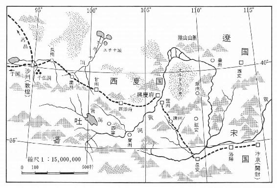

| 敦煌（新潮文庫） | |
| 井上 靖 | |
| (1965) | |
この作品の全部あるいは一部を無断で複製・転載・配信・送信すること、内容を無断で改変・改竄することを禁止します。また、有償・無償にかかわらず第三者に譲渡することはできません。
○新潮社の電子書籍：「Shincho LIVE!（新潮ライブ！）」
○新潮社の書籍：「新潮社ホームページ」
井上 靖

敦煌
趙行徳が進士の試験を受けるために、郷里湖南の田舎から都開封へ上って来たのは、仁宗の天聖四年（西紀一〇二六年）の春のことであった。
時代は世を挙げて官吏万能の時代であった。武人の跋扈を防ぐために文官を重用する政府の方針は、太祖から始まって太宗を経て仁宗に到るまで聊かも変わっていなかった。軍部の要所要所へも文官出身の官吏が配されていた。学問を身につけて官吏になることが、身を立てる者の等しく選ぶ道であり、官吏任用試験に合格することが、出世への緒口であったわけである。
仁宗の前の天子真宗は、自ら「勧学詩」を作って、学問によって登第出身するのが富貴を得る捷径であることを天下に知らしめた。――家を富ますには良田を買うを用いず、書中自ら千鍾の粟あり。居を安んずるには高堂を架するを用いず、書中自ら黄金の屋あり。門を出づるに人随うなきを恨むなかれ、書中馬有り、多きこと簇の如し。妻を娶るに良媒なきを恨むなかれ、書中女あり、顔玉の如し。男児平生の志を遂げんと欲せば、六経勤めて窓前に向かって読め。
進士試験に優秀な成績でさえ合格すれば、宰相を初めいかなる高官を望むとも不可能なことではなかった。好成績でなくても、諸州の通判の如きはこの試験の合格者の中から抜擢されることが多かった。真宗の詩の語るように、黄金も美人もすべて書を読むことに依って得ることができた。
趙行徳が都へ上ったこの年の試験に、各地から京師に集まって来た者は実に三万三千八百人の多きに達した。この中から五百人が選ばれることになっていた。趙行徳は春から初夏へかけて都に滞在し、西華門付近の同郷出身の知人の家に寄寓していた。都の三市六街は受験者たちで溢れていた。老いも若きもあった。この間に趙行徳は礼部に於ける帖経、雑文、時務策五道、詩賦等の試験をいずれも優秀な成績で通過していた。
漸く暑くなろうとしている初夏の陽射しが楡の葉越しに都大路に射し込んで来る或日、彼は吏部に於ける、身、言、書、判の試験を受けよという通達を受けた。身は体貌豊偉、言は言詞弁正、書は楷法遒美、判は判文の文理優長なるを能しとした。これに合格すれば、あとは殿中に於いて天子の策問に応ずることが残されているだけであった。そして殿中の試験に於いて一位の成績を得たものは状元、二位は榜眼、三位は探花と称せられ、そうした優秀な成績の者は勿論のこと、総ての合格者がその輝かしい将来をここに約束されるわけであった。
趙行徳は受験者の中に、自分より優れた学力を身につけたものが何人もあろうとは思わなかった。実際にまた彼はそう自負していいものを身につけていた。儒者の家に生まれ、幼時から学問に親しみ、三十二歳のこの年まで、書物を身辺から離した日はないと言ってよかった。これまでの何回かの試験は、いずれも行徳にとっては容易なものであった。その度に何百何千の競争者が篩にかけられ、次々に脱落して行ったが、行徳としてはかりそめにも自分が試験を受けて、落伍者の群れにはいるなどということは想像もできないことであった。
その日趙行徳は試験場と指定されていた尚書省の中の建物の一つへ赴いた。廻廊が四周に廻らされた控えの中庭に受験者たちは集まっていた。
受験者たちは係官によって一人一人呼び出され、長い廊下を伝わって会場の方へと導かれて行った。自分の番が廻って来るまで、受験者たちは思い思いの姿勢で中庭の周縁部に配されてある椅子に腰をかけたり、老いた槐樹が何本か植わっている辺りを歩き廻ったりしていた。乾燥した空気の中を風は絶えず渡っていた。趙行徳の番はなかなか廻って来なかった。彼は隅の大きな槐樹の根もとに腰をおろしたまま、落着きのない長い退屈な時間を過ごした。そのうちに行徳は、軽い睡魔に襲われて眼を閉じた。腕を組み、顔をやや仰向けにして楽な姿勢をとった。時々新しい名が呼びあげられていたが、やがてその声が次第に趙行徳の耳の中で遠くなって行った。
いつか趙行徳は睡りに落ちていた。そして彼は、夢の中で天子の前に引き出されていた。趙行徳の導かれた試験場には、両側にずらりと高位高官の官服の人が居並び、その中央に一脚の椅子が置かれてあった。行徳は臆せず中央の椅子に向かって歩み、そこに腰をおろした。その時行徳は、自分の前一間程のところが一段と高くなっていて、そこに薄い幕が垂れ下がっているのを見た。
「何亮の安辺策はいかに」
質問は幕の奥から発せられた。意外に太い声であった。何亮の安辺策というのは、今から三十年前の至道三年（西紀九九七年）に、霊州の屯田を査察した当時の永興軍の通判何亮が、時の天子真宗に奉った辺境問題の建議書であった。政府が西夏族の西辺侵寇に最も手を焼いていた時期のことである。西夏の問題は更に溯った太祖の晩年から建国間もない宋の大きな問題となり、何亮の視察した当時は、辺境事情の最も差し迫った時期であった。そしてその後この西夏問題は依然として解決されないまま今日に到っていた。
西夏というのはチベット系のタングート族のたてている小国で、この種族は早くから五涼地方の東方に蟠踞していた。五涼地方は所謂夷夏雑居の地で、タングート族以外に、回鶻、吐蕃を初めとする雑多な少数民族が群がっていて、その幾つかは小さい王国をたてていたが、太祖の頃より独り西夏が強大となり、他種族を圧迫するばかりでなく、屡々中国の西辺に侵寇するようになっていた。西夏は表面は常に宋に臣属する態度を見せていて、他方中国の年来の敵である契丹からも封冊を受けており、その叛服常ならぬ態度は宋朝歴代の悩みの種であった。五涼に接する霊武の地は殆ど毎年のように西夏の騎馬隊による蹂躙を受け、ために何亮の安辺策が奏上される前年には、朝廷では霊武放棄の説さえ行なわれたほどであった。
何亮は、その安辺策に於いて、これまでの西夏対策のすべてを三つに分け、それらをきびしく批判検討した上、容赦なく欠点を挙げて、いずれもこれを不可として退けていた。
何亮が批判した三つというのは霊武放棄、興師征討、姑息羈縻の三説である。霊武を放棄せんか、西夏の地は広くなり、西夏と西域諸民族の連合の恐れを生じ、しかも五涼東方に産する馬を得られなくなる。興師征討は辺兵の不足、糧食の欠乏で実現はむずかしい。少数部隊を出動させれば糧道を絶たれ、大軍を動かせば住民の困難思うべきものがある。それから姑息羈縻の策を執れば暫時の平和は望めるかも知れないが、豺狼の如き西夏は五涼に散らばっている幾つかの少数民族を併呑、中国将来の大患となるであろうし、現に宋のそうした出方を待っている西夏の思う壺にはまるというものである。
そして最後に何亮は最も実情に即したものとして己が意見を具申していた。西夏の西辺劫略の際の前進基地となる水草地帯に一城を築き、西夏の大軍の動くのを待ってこれを撃つことである。従来西夏との闘いに於いて勝利を収め得ないのは、いつも敵の主力との決戦ができず、果てしない沙漠の追撃戦に於いて、徒らに兵力を消耗するからである。若し敵の方から闘いを挑んで来るようなことがあれば、これを殲滅するのはさして難事ではない。西夏が軍を動かすことがない場合は、更に一城を築いて城を二つとなし、一つを城とし、一つを塞とする。一城の保存には巨額の費用を要するが、二城の場合は、その付近一帯に貧民を屯田せしめることができる。そして良将を選んで防備に当たらせ、徐々に恩信を以て夷族を招撫すべきである。
「――時の為政者が何亮の意見を用いず、何亮の否定した姑息羈縻の策をとって、辺境問題を今日に長びかせていることは、甚だ愚かなことである。今日西辺に眼をやってみると、遺憾ながらすべて何亮の予言した通りになっている」
趙行徳は何亮の安辺策を支持しながら、いつか自分の声が昂奮に震えているのを感じた。行徳は自分の周囲で、椅子が倒れ、机が叩かれ、怒声と罵声が沸き起こるのを知った。併し、行徳は言いかけたことは最後まで言ってしまわねばならなかった。そこで再び彼は口を開いた。
「現在西夏は四囲の戎夷を征服し、日々強大となり、まさに中国将来の大患となろうとしている。宋はために、八十万の大軍を常に準備しなければならず、それを賄う費用は巨額に上り、しかも軍馬の産地は敵の手中にあって、その補給さえ満足にできない状態である」
趙行徳は天子の居室の幕が荒々しく引き揚げられるのを見た。そして次の瞬間、多勢の男たちが自分に向かって突進して来るのを見た。行徳は立ち上がろうとしたが、どういうものか足の自由は失われていた。行徳は前にのめった。
その時趙行徳は夢から覚めた。彼は地面に前のめりになっている自分を発見し、急いで躰を起こして辺りを見廻した。行徳の眼に映ったものは、強烈な陽が照りつけている誰もいない中庭であり、その一隅で自分を見おろしている官服の一人の吏員の姿であった。行徳は沙のついた掌を払って立ち上がった。先刻まであれほど多勢の受験者たちの居た中庭には、今は誰の姿も見えなかった。
「試験は――」
行徳は呟くように声に出して言った。官服の人物は行徳を蔑むように睨みつけたまま一言の返事もしなかった。行徳は不覚にも自分が睡りこけて、殿中に於ける天子の策問に応じている夢を見ている間に、大事な試験を自ら放棄した結果になったことを知った。恐らく自分の名前も呼び上げられたのであろうが、すっかり睡り込んでしまっていて知らなかったのである。
趙行徳は出口の方へ歩いて行った。尚書省の建物を出て、人通りの少ない静かな官衙街を抜けた。街衢から街衢へ、行徳は魂のない人間のように歩き続けた。殿中に於ける試験も、それに合格して高官の居並ぶ宴席に列することも、白衣公卿、一品白衫と称せられる栄光も、いまやすべては一片の夢と化してしまっていた。
趙行徳の心にふいに孟郊の七絶が浮かんで来た。春風意を得て馬蹄疾く、一日見尽くす長安の花。これは孟郊が年齢五十にして進士試験の合格の報に接した時の感懐をうたったものであった。いまの趙行徳の周囲には長安の牡丹の花はなく、烈しい夏の陽が絶望に打ちひしがれた彼の身を包んでいるばかりである。厄介なことには進士試験は三年先でなければ行なわれないのであった。行徳はただ歩きに歩いた。歩くということだけが彼を支えていた。そしていつか彼は城外の市場に足を踏み入れていた。夕闇が訪れようとしている狭い路地の中を、汚ない服装をした男女が群がり動いている。道の両側は大部分が食物を売る店であった。鶏やあひるの肉を鍋で煮たり焼いたりしている店が立ち並んでいる。油のこげつく臭いと汗と埃とが入り混じって、むせ返るような異臭があたりに立ちこめている。羊や豚の炙肉を軒先に吊り下げている店もある。行徳はさすがに空腹を覚えた。朝から何も食べていなかった。
幾つ目かの路地を曲がった時、行徳は行手に人々が黒山のようにたかっているのを見た。細い路地はそれでなくてさえ混雑を極めていたが、そこは全く通行止の状態になっていた。行徳は人垣の背後からその囲みの中を覗いてみた。
行徳の眼に最初映ったものは、木箱の上に置かれた分厚い板の上に横たわっている一人の女のむき出しにされた下半身であった。行徳はなおも躰を人垣の中へ割り込ませた。人々の肩越しにこんどは女の上半身が覗かれた。女は一糸纏わぬ全裸の姿で横たわっているのであった。一見して漢人でないことは明らかであった。肌はそれほど白いというのではなかったが、豊満な感じで、行徳がいままで眼にしたことのない艶を持って居り、仰向けにされた顔は顴骨が出て、顎は細く、眼は幾分落ち窪んで暗かった。
行徳はまた躰を前に割り込ませた。女の横たわっているすぐ横に、一人の半裸体の男が大きな刃物を手にして、見物人の方を睨みつけるようにして立っている。男は見るからに獰猛な面構えをしていた。
「さ、どの部分でもいい、買ったり、買ったり」
男は見物人をねめ廻しながら言った。その時だけ見物人は少しざわついたが、彼等の眼は珍しい売物から少しも動かされなかった。
「どうしたんだ、みんな。意気地のない奴らばかりだ。これを買おうというのはいないのか」
男は再び呶鳴ったが、周囲からは一言も発せられなかった。この時行徳は人垣の中から進み出て言った。
「いったいこの女はどうしたんだ」
そう訊かずにはいられなかった。すると刃物を持った男はじろりと行徳の方へ眼を据えて、
「こいつは西夏の女だ。男を寝とった上、相手の内儀さんを殺めようとした性悪女だ。肉を切り売りしてやる。欲しければどこでも買え。耳でも、鼻でも、乳でも、股でも、どこでも売ってやる。値段は豚の肉と同じだ」
と言った。そう言う男もまた漢人ではなかった。男の眼玉は青味を帯びており、胸毛が金色に光っている。肉付きのいい褐色の肩には何の符呪か判らぬ異形の彫物が施されてある。
「女は承知なのか」
行徳が訊くと、男が返事をする前に、思いがけず、そこに横たわっていた女が口を動かした。
「承知だ」
口調は荒っぽかったが、それは高い透る声だった。女が口をきいたので、見物人の間には一瞬ざわめきが起こった。行徳には女が諦めているのか、不貞腐っているのか見当がつかなかった。
「情けない奴らばかりだ。一体何時間こうしているんだ。買えねえのなら買えるようにしてやるぞ。指はどうだ、指は」
瞬間男が刃物を閃めかせたと思うと、刃物が板を打つ音が響いて、それと同時に女の唇から悲鳴とも呻き声ともつかぬ叫びが洩れた。行徳は、女が自分の頭部へと廻していた腕の一本が切られたのではないかと思った。行徳の眼に鮮血の迸ったのが見えたからである。併し、腕が切られたのではなかった。女の左手の指が二本、その先端の一部を失くしていた。
見物人はどよめいてその輪を拡げた。
「よし、買う」
趙行徳は思わず叫んだ。
「全部買う」
「買うか」
男は念を押した。するとその時、血を滴らせた手を板について女がむっくりと半身を起こして来た。そして彼女は行徳の方に血走った顔を向けると、
「おあいにくだが、みんなは売らないよ。西夏の女を見損って貰っては困る。買うならばらばらにして買って行け」
それだけ言って、女はまた仰向けにひっくり返った。行徳は女の言葉が何を意味しているかを知るのに多少の時間を要した。行徳は自分の態度が女から誤解されていることを知ると、
「いや、買うには買うが、お前をどうしようという気も持っていない。この男から買い取ってやるから、お前はどこへなりと行くがよい」
そう女に言って、それから男に女を買い取る交渉をした。たいした金額ではなかった。話はすぐ纏まった。行徳は男の言うだけの金を懐中から出して、それを板の上に置くと、
「この女を自由にしてやれ」
と、言った。男は金を掴むと、女に向かって、何か訳の判らぬ言葉で盛んに喚き立て、呶鳴りちらした。女はのろのろと躰を板の上に起こした。
趙行徳は意外の事の成行きに呆然と突っ立っている見物人の輪を抜け出すと、そこから離れ、路地の出口の方へ向かった。半丁程歩いた時、行徳は背後から呼びとめられて振り返った。女が走って来た。粗末な胡服を身に纏ったその女は、ぼろ布で左の手首を包んでいた。女は近寄って来ると、
「お金をただ恵んで貰うのはいやだから、これでも持って行っておくれ。私はこれ以外何も持っていないんだ」
と言いながら、一枚の小さい布片を差し出した。出血のためか女の顔は蒼ざめていた。行徳が手渡された物を拡げてみると、それには異様な形の文字のようなものが十個ずつ三行に認められてあった。
「これは何だ」
行徳は訊いた。
「私にも読めないけど、私の名前と生まれたところでも書いてあるんだろう。イルガイにはこれを持っていないとはいれないんだ。私にはもう用はないから、お前さんに上げる」
「イルガイって何だ」
「イルガイを知らないのか。イルガイはイルガイだ。――珠のお城という意味じゃないか。西夏の都だ」
女は奥深い眼窩の中で黒い瞳を光らせながら言った。
「先刻の男はどこの者だ」
趙行徳は重ねて訊ねた。
「回鶻だよ。あいつこそ悪党だ」
女はそれだけ言うと、布片を行徳の掌に残したまま、さっさと人混みの中へはいって行った。
趙行徳は再び歩き出した。歩きながら行徳は、自分というものが今までの自分とはどこか違ってしまっているのを感じた。何がどのように変わったのか見当はつかなかったが、兎に角、自分が心の中に持っていた大切なものが、他の何ものかとすっかり置き換えられてしまったような気持ちだった。趙行徳はつい先刻まで進士試験にこだわっていた自分がひどくつまらないものに思えた。ましてそのために絶望的になっていた自分が滑稽な気がした。たった今彼が眼にした事件は、学問とも書物ともまるで違った無関係なものであった。少なくともいま彼が持っている知識では理解し難いものであった。それでいて趙行徳のこれまでの考え方や、人生への対かい方というものを、その根柢から揺すぶるだけの烈しい力を持っていた。
あの西夏の若い女が板の上に身を横たえて考えていたことは何なのか。あの女は殺されるのが何でもないのであろうか。あの女に肉体全部を売ることを拒否させたものは何であるか。あれはやはり貞操観というものであろうか。それから人間を切り売りしようとしている男の考え方も、女の指を切り落とした惨酷さも、趙行徳の理解の外にあるものであった。が、女はそれに対して微動だにしなかったではないか。そこには行徳の心を鷲掴みにしてしまうような何か大きな烈しいものがあった。
その夜趙行徳は宿所へ帰ると、女から貰った布片を改めて灯火にすかしてみた。そこに書きつけられた僅か三十字ばかりの文字は、漢字に似ているが、漢字ではなく、全く見かけたことのないものばかりであった。これがあの女の生まれた西夏という国の文字だというのか。西夏人が西夏人だけに通用する文字を持っているということも、趙行徳の初めて知ることだった。
女から貰った布片を弄り廻しているうちに、趙行徳の眼に進士試験の会場で座主を務めた一人の人物の顔が浮かんで来た。六十年配の老人で、進士試験の長を務めるくらいだから相当な人物に違いなかったが、その典籍に於ける造詣の深さは、彼が口から出した短い幾つかの言葉からだけでも容易に想像することができた。行徳は何回か会場でその老人を見かけただけで、全く彼については知るところがなかったが、或いはあの老人なら、この奇妙な文字を解読できるかも知れないと思った。
翌日、趙行徳はその老人が礼部の長官であることを知って、その役所に彼を訪ねて行った。試験から受けた打撃は不思議に彼の心から取り払われていた。三度目に役所の門をくぐった時、行徳は漸くにして彼に会うことを許された。行徳は老人の前へ出ると、例の布片を示してその解読を乞うた。併し、老人は気難しい表情をしてその布片を見詰めたまま、暫くは顔を上げようともしなかった。行徳はその布片が自分の手にはいった経緯を説明した。すると、老人は初めて布片から眼を離して、
「見たことのない文字だと思った。契丹の文字も回鶻の文字も知っているが、西夏が自分の文字を持っていることは知らなかった。造られたとすれば最近のことであろう。漢字を真似て作ったつまらぬ文字だ」
老人は言った。それに対して、
「それにしても、一つの民族が文字を持つということは大変なことではないのか。若し将来、西夏が強大になれば、西方から渡って来る典籍は総て、西夏においてこの文字に書き変えられることになる。いままで西夏を素通りして来た総ての文化は西夏で一応堰き止められることになる」
行徳は言った。老人は暫く黙っていたが、やがて、
「併し、そうした心配はいるまい。西夏がそれほど大国になろうとは思われぬ」
「だが、文字を持ったということは、それだけ西夏が大国になったことではないか」
「戎夷は少し領土を広くすれば、すぐ他国の真似をして自分を誇示したがるものだ。西夏は所詮戎だ。それほど優秀な民族ではない」
「それは違うと思う。西夏は大国となるべき素質を持った民族に違いない。何亮が言ったように、いつかは中国の大患となるだろう」
行徳は言った。自分の言葉に何のためらいも感じなかった。尚書省の中庭で見た夢の中で彼は為政者が為した西夏対策の失敗を指摘したが、その時の彼より現在の行徳は自分の言葉に遥かに充実したものを感じていた。西夏が強大となるべき要素は、あの市場で会った女でさえ持っているではないか。あの生命さえ何とも思っていない不思議な落着きは、恐らく一人の人間の性格から根差して来るようなものではないだろう。彼女の持っていた瞳の色の暗さと同じように、それは総ての西夏人が民族の血として持っているものに違いない。
「兎に角、いま、わしは忙しいのだ」
老人は冷たく言って、行徳の帰りを促した。行徳は自分の言葉が老人を不快にさせたことを知った。行徳は結局それが中国にもまだ知られていない文字であるということを知っただけで、この訪問に満足しなければならなかった。
老人は西夏の文字に対して余り関心はないようであったが、趙行徳はたまたま自分の手にはいった三十字ばかりの文字を、そう簡単に片付けるわけにはゆかなかった。それからは寝ても覚めてもその文字が彼の眼前にちらついた。
行徳にとって都にとどまっていることは既に意味のないことになっていたが、彼は妙に腰を上げる気になれなかった。錦を飾って郷里の土を踏むことができないという、そうしたところから来る心の重さのためでもなかった。進士試験に失格したという落胆もなければ、再び進士試験を受けねばならぬという気持ちも、いまの彼の心からは失われていた。進士試験というものに代わって、全く別のものがはいり込んでいた。
趙行徳は一日に幾度か例の布片を取り出して、そこに書かれた異形の文字に眼を当てた。女の短い説明から推して考えると、おそらくそれは西夏の国の官符で、身分証明書か通行証のようなものであろうと思われた。そこに書きつけられてある文字の意味は取るに足らぬものに違いなかったが、併し、行徳には、それがいかなる中国の古典も持っていないような深遠な意味を内部に匿し持っているもののように思われた。文字を見詰めていると、いつも市場で見た西夏の女の裸体の太々しさが眼に浮かんで来た。
趙行徳はそのたった三十字程の文字を、何とかして読みたいものだと思った。読むためにはいかなる努力もいとわない気持ちだった。行徳は過去何年か進士試験に取り憑かれて来たが、憑きものが落ちたように、それが落ちると、こんどは替わって西夏という国が彼の内部へはいり込んで来たのであった。文字も読みたかったし、西夏という国の土も踏んでみたかった。西夏人が群がり生活しているその中へもはいってみたかった。
趙行徳が西夏への旅立ちを決心したのは、市場で西夏の女に会ってから十五日程経った時のことだった。何亮の安辺策も、西夏が中国将来の大患であることも、こうした場合の趙行徳の頭からは消えていた。西夏は自分の読み得ない文字と、自分の理解し得ない一人の女の血を持っている北方の謎を秘めた一民族であるに他ならなかった。そこには自分などが夢想もしなかった力強い、しかも価値のある何ものかが、どろどろした油のような在り方で在るのではないか。行徳はそこへ行って、それに自分の手で触れてみたかった。市場で見た西夏の女が、生れながらに行徳が持っている一つの事に執する情熱を、その向かう方向に於いて大きく捻じ曲げてしまったのである。趙行徳はどうしても西夏という国へ出向いて行く気持ちを抑えることはできなかったのである。
天聖五年正月、趙行徳は霊州に近い一聚落にはいった。都開封を出たのは前年の初夏であるから、いつか都を出てから半年近い月日が流れている。趙行徳の辿り着いたところは宋軍の第一線の前進拠点で、二、三年前までは二、三十戸の無名部落に過ぎなかったが、現在は多数の部隊と、ここに移り住んで来た住民たちとでふくれ上がり、新しい一つの軍事都市を形成していた。曾ての根拠地で、唐代から朔方節度使が置かれ、二十五年前の咸平五年に西夏の手中に落ちた霊州は、北方五十支里程の地点にあった。
ここから西方は漢の武帝の拓いた所謂「河西四郡」であり「五涼の地」であって、中国本土と西域とを繋ぐ回廊をなし、漢以降長く中国歴代の西域経営の前進基地であったところである。そして、曾ては涼州にこの回廊を統轄する河西節度使が置かれ、後に沙州に設置された帰義軍節度使がそれに代わったが、孰れにしても中国の勢威の行なわれた地方であった。その後吐蕃、回鶻がこの地を占領する時期があって、以後中国の支配の及ばない化外の地になったが、現在は多くの異民族がそれぞれ集団を作って幾つか小王国を形成していた。そしてそうした異民族の中で最も強盛を誇っているのが、興慶を根拠地としている西夏であった。西夏の他では涼州に拠る吐蕃の一部族、甘州に拠る回鶻、そして一番西方の沙州に帰義軍節度使の名を留めた漢族の集団があった。
趙行徳は黄河西方のこの藩鎮にはいって、ここがまだ漢土であることが不思議に思われた。漢人は極く少数しかいず、それに何倍かする異民族たちが、城壁で囲まれた都市の中にそれぞれ小さい部落を形成して住まっていた。
ここに到着するまでに、行徳はここの管下にある七鎮のうちの幾つかを経廻って来ていたが、いずれの鎮も守備兵には多勢の異民族が混じっていて、全く異国へ来た感じであった。
趙行徳はこの半年の間に、いろいろな民族の言葉を少しずつ身につけていた。トルコ系やタングート系の言葉を話す漢人の若者と知りあいになって、一緒に旅をしたことが、会話を覚えるのには好都合であった。回鶻人の言葉も、西夏人の言葉も、吐蕃の言葉も片言ではあるが、話せるようになっていた。併し、西夏の文字は一度も眼にすることはできなかった。西夏が文字を持っているかどうかさえ確かめることはできなかった。漢土にいる西夏人は正しくは西夏人とは言えなかった。その躰の中に持っている血はタングートのそれであるに違いなかったが、いま一つの国家を形成し、漸く強盛になろうとしている西夏人ではなかった。西夏という国の組織の中へ取り入れられない、それからこぼれ落ちている無智な土民に過ぎなかった。彼等は漢人でもなければ西夏人でもなかった。
趙行徳は城内の西北隅にある寺の一室を借りてそこに住み、年貢や賦役に関する住民の届けなどを代書する仕事をして生計の資を得ていた。ここで春までを過ごし、雪解けを待って、五涼の地へはいって行くつもりだった。降雪は一月に四日、二月に六日、三月に三日間あった。
城内は真冬にも拘らず、毎日のように到着したり進発したりする兵隊たちで騒擾を極めていた。部隊は雑多な種族を混じえていた。
西夏族が本拠としている興慶は、ここから一百支里離れたところにあった。行徳が開封の城外の市場で命を助けてやった女がイルガイと呼んだところである。ここ何年か興慶の西夏は正面切って宋軍と事を構えるようなことはなく、宋軍の方もまた同じ態度で相対していた。西夏は自国周辺の異民族の征服に忙しく、宋軍との対戦を好まなかったし、宋は宋でまた、西夏よりもっと大きい敵である契丹が、西夏との戦さの中に介入して来ることを怖れていた。しかし、そうした関係にはあったが、両軍の間にいつ大々的な衝突が行なわれても少しも不思議はない緊迫した情勢にあった。
冬が過ぎて、春の光が城をめぐる一帯の沃野を照らし始めた或日、趙行徳は涼州へはいるための許しを藩鎮の役人に願い出た。彼は冬の間に、涼州へ向かう回鶻人の隊商の何人かと交渉を持ち、彼等について一緒に涼州にはいることを内々のうちに取り決めてあった。併し、その文書を差し出してから三日目に、不許可の印を捺されて書類は再び行徳のもとに戻って来た。
涼州には吐蕃の別種と見做されている折逋姓を名のる一部族があって小さい城郭国家を造っており、雑多な民族と共に、城の内外には五百戸の漢人が住んで農業に従事していた。ここは河西の東端に位置して交通上の要路であると共に、「涼州の畜は天下の饒たり」と言われ、古来名馬の産地として知られていた。従って以前から度々、周囲の異民族や土着勢力の間にここの争奪戦が行なわれていた。西夏もまた絶えずこの地を領有するために、軍隊を動かしていた。大中祥符八年（西紀一〇一五年）には西夏はこの地の土豪を追って一度ここを自己の勢力下に収めたが、翌九年には回鶻人が土民を援けて西夏の軍を襲い、西夏はやむなく退いていた。併しその後も西夏は毎年のようにここに出兵し、家を焼き、馬を奪った。そうした西夏が、侵攻してはそのまま長く留まることがなかったのは、西夏がそこを領することによって最も大きい打撃を蒙る宋が、必ず兵を動かすに違いなかったからである。
涼州の地は、宋にとっても、西夏にとっても、また甘州に拠る回鶻人にとっても必要なところであった。宋と西夏は共に大部分の馬をここに仰いでいたし、回鶻人たちはそれを売買することによって巨利を占めていた。
西夏と宋が大々的に事を構える場合、その発火点となるところは涼州であった。そのことは辺境の事情を知っている総ての者が等しく指摘するところであった。趙行徳が涼州に行くことを希望して許されなかったのは、いまやいつ西夏の本格的な涼州攻略が開始されるかも知れぬ情勢にあって、それに合わせて、宋軍の動きも日々活溌になっていっている際であったからである。
趙行徳はそうした情勢に必ずしも疎いわけではなかったが、幾ら部隊の動きが活溌になっているとは言え、すぐにも戦端がひらかれようとは考えられなかった。涼州には多勢の西夏人が土着民や漢人や他の異民族たちと共に住んでいて、自由に西夏の都興慶との間を往来しているということだった。漢人である趙行徳は直接興慶へ行くことはできなかったが、涼州へはいれば、幾らでも興慶へはいる便宜は得られる筈であった。
ある朝、行徳はまだ夜の明けきらぬうちに床から抜け出すと、自分の馬を庫裡の裏手にひき出した。開封を発ってから、環州で得た三頭目の馬であった。彼はそれに手廻りの荷物を積む仕事に取りかかった。その時寺の作男が姿を現わし、行徳の行動を咎めた。行徳は薄暗い中に影のように立っているその作男に向かって、自分は涼州に行きたいので、回鶻人の隊商へ紛れ込むつもりだとありのままを語った。作男はひどく驚いて、小柄な痩せた趙行徳の躰を穴のあくほど見守っていたが、
「そのようなことをして若し見付かったら、汝は斬罪に処せられるだろう」
と言った。
「斬罪になることを恐れていたら、何もできはしない」
趙行徳は答えた。危険は予測しても、恐れるという気持ちはなかった。
「それより、荷物を馬の背に積んでくれぬか」
行徳は足許に置いた荷物を指して言った。非力な彼には荷物を馬の背に載せることの方が目下のところ重大問題であった。
東の空が白み始めた頃、趙行徳は城門へ向かう回鶻人の隊商の一隊に加わっていた。隊商は駱駝が二十頭、馬が三十頭の一団であった。行徳は列の最後尾に随っていた。行徳は正式の手続きを踏んでいなかったが、隊商の隊長である回鶻人の取り計らいに依って、城門をさして問題なく通過することができた。一巻きの杭州産の紬が隊長から城門の兵隊に与えられたのである。
隊は平原の中の道を真直ぐに西へ向かって進んで行った。見渡す限りの平原は、どこまでもみごとに耕されてあった。平原の到るところに漸く萌え出した樹木の立っているのが見られたが、午刻近くには辺りは一面の灰色の世界となった。青いものは視界のどこにも見られなくなってしまっていた。風はなかったが、隊列の後部は濛々と舞い上がる砂塵のために全くその姿を匿されていた。夕刻、この一隊は黄河の流域に出た。二日目は終日遠くに黄河の流れている地帯を黄河に平行して進んだ。三日目には賀蘭山脈続きの高原地帯にはいった。四日目の午後、一行は漸く高原を降りて水草地帯へ出た。そして五日目にそこを離れると、この行程の中で一番苦しい沙漠の中へはいって行った。
一行は沙漠の中を二日進んだ。そして漸く沙漠の旅を終わって涼州に近い緑の見える地帯にはいった。一行が緩やかな丘の中腹で最後の夜営をしている夜、隊員たちは遠くを人馬の大集団が移動して行く音で夢を破られた。
驚いて幕舎を飛び出した趙行徳の眼に映ったものは、何百、何千とも見当のつかぬ大騎馬隊の移動であった。月はなかったが薄明りが煙ったように四辺に漂い、その中をまるで大河の流れのように真黒い人馬の集団は涼州の方面へ疾駆して行った。集団は少し間をおいて、次から次へと続いた。
「闘いだ、闘いだ」
もうあとに続く騎馬隊がないと知った時、それまで息をひそめていた回鶻人たちは騒ぎ出した。それと一緒に幕舎はたたまれ、駱駝と馬は引き出された。冬のような暁方の冷気の中で、積荷の作業があわただしく行なわれた。
一行が進路を涼州の方へは取らず北方へ向けて進発しようとした時、再び隊員たちは軍馬の夥しいいななきと馬蹄の響きを聞いた。やはりこの場合も、それらの騎馬隊との距離はかなり遠かったが、困ったことは彼等が疾駆して行った方向は、隊商の一行が目指そうとした同じ北の方角であった。戦闘は北にあるのか、南にあるのか判断がつかなかった。そして昨夜の騎馬隊と、いまの騎馬隊とが味方同士であるか、敵であるかも亦、見当がつきかねた。
その日一日隊商はあちこちに移動した。南の方を指すと南から部隊が現われ、北の方を指すと北の方から部隊が現われた。東も西も同じことであった。どれもどこの国の部隊であるかはっきりしていなかった。趙行徳の属している隊商と同じように、あちこちに騎馬隊の移動を避けてうろつき廻っている隊商が他にも幾つかあった。そうした隊商の姿が遠く小さく丘陵の裾にも、丘陵の中腹にも見られた。
終日無為に歩き廻った果てに、回鶻人たちの隊商は、昨夜の場所と同じような丘陵の中腹で夜を迎えた。一同は集まって協議し、その結果、初めの目的通り涼州に向かうことが取り決められた。そして夜が更けてから、駱駝と馬と人の長い隊列は西に向かって進発した。
相変わらず戦闘部隊が移動する音は遠く近く聞こえていたが、隊商はそれに構わず真直ぐに進んで行った。夜が白みかけた時、突如として隊列は乱れた。馬は跳ね上がり、駱駝は駈け出そうとした。何十本かの矢が飛んで来て隊列の周囲に落ちたからである。
突然隊商を見舞った混乱の中で、隊長の回鶻人は隊員に駱駝も馬も荷物も全部棄てて、涼州の方向に待避するように命じた。隊員たちはそれぞれ駱駝や馬から離れて、西方を目指して原野の中に散った。
併し、趙行徳だけは馬を離さなかった。彼は馬を置きざりにする気にはならなかったし、馬の背の荷物も、彼にとっては一日も欠かすことのできない生活の必需品ばかりであった。行徳は荷物を振り分けにした馬を引いて駈けた。馬の背に跨がりたかったが、弓の標的になることを避けなければならなかった。
陽がかなり高くなった頃、行徳は自分が塩分を含んだ白い沙の原の上に出ていることを知った。沙は陽の加減で青くも白くも見えた。行徳は馬を停めて、そこで朝食を摂った。その時、行徳は自分がやって来た方角から、駱駝や馬の集団が自分の方に近づいて来るのをみた。彼は初め隊商の一隊がこちらにやって来るものとばかり思っていたが、その隊列の動きには何となく統率者のない散漫な感じがあった。
大きな生きものの集団が間近にやって来た時、行徳は驚いて立ち上がった。回鶻人たちが今朝原野の真ん中に置き去りにして来た駱駝や馬の群れであったからである。彼等は行徳の傍まで来ると、そこでそれが当然なことであるかのように歩みを停めた。一頭の駱駝は背に一本の矢を立てている。
趙行徳は休憩を打ちきると、それらの主のない生きものたちを連れて歩き出した。こんどは行徳と彼の馬がその長い隊列の先頭に立った。その日の午後に、行徳はどこか遠くから合戦の雄叫びが聞こえて来るのを聞いた。戦場は近いものと思われた。その辺一帯は低い丘がゆるやかに波のように起伏していて、涼州の極く近いところまで来ているのかも知れなかったが、オアシスの緑は見えなかった。
趙行徳は低い丘と丘との狭間のようなところに僅かの樹木に取り囲まれた泉のあるのを発見すると、彼に随う駱駝や馬を停めて、少し早くはあったが、そこに露営することにした。身動きできない程彼は疲れていた。かなり強い陽射しを斜めに浴びたまま、趙行徳は草地の上で眠った。
それから何時間経ったか判らなかった。行徳は悲しげな駱駝の叫びと馬のいななきに依って眼を覚ました。夢ではないかと思ったほど四辺は明るかった。夜に違いなかったが、そこらをうろうろしている駱駝や馬の躰が、恰もそこが灼けただれているような赤さで浮かび上がっている。そして天地をゆるがす喚声が聞こえていたが、それは寧ろひっそりととでも言いたいような澄み方で行徳の耳に届いていた。
行徳は丘の上に駈け上った。そして天に冲するような火柱が、曠野の程遠くない個所に一本上がっているのを見た。そしてその炎の光に照らし出されているものは、幾つもの騎馬隊の動きであった。曠野の真ん中で主力と主力との会戦が行なわれているのに違いなかったが、行徳の眼に映っているのはその一部で、ただ幾つもの騎馬隊が闇から光の中へ、そしてまた光の中から闇の中へ出て行く整然たる突進の情景だけであった。
突然、今までに倍する明るさが辺りを占領した。すぐ右手の丘から突如として新しい火柱が天に突き上げられた。それと一緒にこんどは直ぐ間近から、到底人間の声の集まりとは思われぬ喚声と叫声が沸き起こった。そして行徳は、すぐ前の丘を西から東へ、一騎一騎の馬上に身を伏せた姿までくっきりと見える見え方で、何百騎かの隊列が突進するのを見た。今や雄叫びはどの丘の狭間からも起こっていた。
行徳は露営場所へ駈け戻ると、すぐ自分の馬を引き出して歩き出した。他の駱駝や馬もあとからついて来た。彼は何とかして戦場の中から出なくてはならないと思った。併し、そう思うだけで、実際はどうにもならなかった。四辺はやたらに明るかった。彼の周囲のどこでも烈しい戦闘が展開され、夥しい数の人と馬とが荒れ狂っていた。行徳は必死に暗いところへ逃れようとした。併し、そこが同じ戦場であることは、光の輪から出て、夜の闇に包まれても同じであった。四辺が暗くなると、急に闇の中を走る箭の音が冷たい鋭さで聞こえて来た。
行徳は自分と馬と駱駝が、自分の力ではどうすることもできない状態に置かれていることを知ると、急に足の速度をゆるめ、ゆっくりと足の向いた方に真直ぐに歩き出した。前途にいかなる障害があろうと、もう避けないで歩いて行こうと思った。そうすることが、そうしないことより悪いということは考えられなかった。趙行徳は馬を連れて、天を焦がす火柱の光の中へ出たり、暗闇の中へ吸い込まれたりして、西と思われる方向へ同じ歩調で歩いて行った。行徳は死体のごろごろ散乱している地帯を越えたり、丘を上がったり、丘を降ったり、湿地帯を横切ったりして行った。
夜が明けた時、趙行徳は自分たちの立っている前方に、大きな城壁がそそり立っているのを見た。城壁からは何本かの黒い煙が立ち上り、それがその上空一面を覆っていた。空はその部分だけが黒く汚れて、あとは異様な赤さを湛えていた。行徳は自分につき随う生きものの数を算えて、彼らを休ませた。忠実な家来のように六頭の駱駝と十二頭の馬が、彼自身の馬の他に付き随っていた。四辺はひどく静かであった。
趙行徳はゆっくり休養を取った。城には右手の方に城門があって、そこへ隊列を整えた部隊が入城して行くのが見えた。騎馬隊と徒歩部隊が交互に並び、それらが全部入城し終わるまでにはかなりの時間を要した。
趙行徳はもはやたれも入城しなくなるのを見ると、己が生きものの部隊を率いて、城門の方へ近付いて行った。そして彼は少し行ったところで、またもう一度立ち停まった。新しい入城部隊が、二丁程先に姿を現わしていたからである。彼等が城へはいることは明らかであった。こんどの部隊もまた整然と隊伍を整えていた。
趙行徳はその部隊の入城を待たないで、先に城へはいってしまおうと思った。行徳は馬と駱駝を連れて城門をめざし、城門の前まで来た時、ちょっと立ち停まって、もう一度生きものたちの数を算えて、それから土で築いた大きな門の中へはいって行った。
城門を一歩はいったところから屍臭を混じえた戦場特有の臭いが鼻を衝いて来た。城門からすぐ道は上りになっていて、そこを上り切って広場へ出ると、到るところに兵隊たちが屯ろしていた。
「どこの部隊だ」
行徳は向こうから歩いて来た漢人と思われる兵の一人に最初の質問をした。
「何だと？」
兵隊は眼をむいたまま行徳を睨んだ。その時数人の兵隊が駈け寄って来ると、口々に、
「道を開けろ」
と、大声で呶鳴った。漢語であった。行徳は言われるままに、広場の一隅へと、彼のあとに続く生きものを連れて行った。城門のところで見た部隊が入城して来たのである。
「ここはどこだ」
行徳はもう一度近くにいた兵隊に質問した。
「何だと？」
また兵隊は恐ろしい顔をして睨んだ。間もなく行徳は自分を拉致するために何人かの兵隊が駈け寄って来るのを見た。城内のどこかが焼けているらしく、煙は前方の森の肩越しに盛んに立ち上り始めている。行徳は彼の従者たちから引き離されて、両側から腕を取られるようにして引き立てられて行った。街路はどこも狭くてでこぼこしていた。やがて小さい家がごたごたと詰まっている街衢らしい地区へはいり、そこを脱けると、道の両側に長い土塀を持った家々が立ち並んだ静かな一劃へ出た。戦火におかされなかったら、ここは裕福な、平和な感じの賑やかな都邑ではなかったかと思われた。行徳は幾つも道を曲がったが、どこを通っても兵隊のほかには、ただ一人の住民らしい者の姿も見掛けなかった。
やがて趙行徳は大きい土塀を廻した一軒の屋敷の中へ連れて行かれた。屋敷の中にはそれぞれ周囲にゆったりとした空地を持った何軒もの家がばら撒かれてあって、どこにも兵隊が充満していた。それらの中の一軒の家の前で行徳は立ち停まらされた。
趙行徳は間もなく多勢の兵隊に取り囲まれた。一人残らず漢人の兵隊だった。みんな趙行徳と同じ顔の骨格と皮膚の色を持ち、同じ言葉を解したが、漢土のことは全く何も知らないらしかった。
趙行徳は最初眼の前の兵隊に向かって、郷里はどこかと訊いたが、彼はどこか行徳の全く知らない土地の名前を言い、そして、そうした質問を受けたことが侮辱を受けたとでも思ったのか、いきなり行徳を殴りつけた。行徳は用心しながらこんどは他の兵隊に話しかけた。併し、それに対して行徳が相手から受けたものは、こんどの場合も同じものだった。行徳は理由なくして地面に殴り倒された。
それからというもの、行徳は口を開く度に殴られた。行徳は何のために自分が殴られねばならないのか判らなかった。そうしている時、隊長らしい二十八、九の人物がどこからか現われた。彼は行徳の前へやって来ると、こんどは彼の方から、姓名、郷里、そしていかにしてここへやって来たかを質問した。
行徳はそれに対して、一つ一つありのままに答えた。併し、答える度に、行徳は殴られた。強烈な殴打が頬から顎のところに感じられる度に、行徳は、自分の足が地面からすうっと浮き上がり、五体が空中で一本の棒となって、やがてそれが傾き、軽く地面の上に横倒しになって落ちるのを感じた。行徳は何も喋らないことにした。なまじ言葉が判るからいけないと思った。さんざん殴られた挙句、行徳は衣服をはぎ取られ、その代わりに兵隊の衣服を着せられた。新しい衣服を着ると、行徳は自分がそこらに居る兵隊たちと少しも見分けがつかなくなったことを知った。行徳はそこから程遠からぬ屋敷へ連れて行かれた。そこにも兵隊が充満していた。兵隊たちは広場で三人四人と方々に固まって、立ったまま食事をしていた。
行徳はその広場の一隅に立たされた。兵隊がまた多勢やって来て彼を取り巻いた。行徳は殴られるのを用心して何も喋らなかった。すると、兵隊の一人が行徳のところへやって来て、小麦の麺麭を差し出した。そして、
「早く食べろ。出発だ」
と言った。
「どこへ行くんだ」
行徳は訊いた。併し兵隊は行先については全く知っていなかった。ただ回鶻人の部隊との戦闘が自分たちを待ち受けているということだけを知っていた。行徳は、彼がいま居るこの城がどこであるかも、彼を取り巻いている兵隊たちがどこの兵隊であるかも、全く知らないままに、いつか自分が兵隊にさせられていることを知らなければならなかった。
趙行徳は、その晩、一人の兵隊が言った回鶻人との戦闘には参加させられることから免れた。彼に与えられた仕事は、他の十数名の兵隊たちと城外の馬の放牧地の衛兵に立つことであった。そしてそこで彼は初めて、自分が配された部隊が漢人ばかりで編成されている西夏の第一線部隊であること、そして彼がはいった城が、西夏に依って本格的に占領された涼州であること、そしてまた昨夜の戦闘が西夏軍と涼州を救援に来た回鶻軍との間に行なわれた戦闘であったことを知った。
西夏は宋軍との衝突をも辞さない覚悟で本格的な涼州攻略の軍を起こし、そこを僅か三日で自己の手中に収めたのであった。
趙行徳は兵卒として西夏の漢人部隊に配されたまま、涼州で天聖五年の春からずっとその年をそこで送り、翌六年を迎えた。
趙行徳は涼州へはいってから、城内に於いては兵隊以外は一人の人間も見なかった。西夏に占領されるまで涼州に住んでいた住民たちは、役に立つ者は悉く西夏の部隊に編入され、役に立たぬ老人や女子供は全部城外に移されて、農耕に従事させられたり、水草地帯で放牧の仕事をさせられたりした。
涼州は地味肥沃で、農産物多く、城を一歩出ると見事な耕地が開けていた。西夏は河西第一の穀倉を自己の所有としたわけであった。またこの付近で産する馬は天下第一の良種とされ、中国の環慶の馬がこれに次ぎ、秦、渭の馬は骨格は大きいが、軍馬としては機敏さの点で欠点があるとされていた。城の北方はどこまでも見渡す限りの牧地であった。城壁へ上がると、その広い放牧地に無数の馬が何十かの集団をなして散らばっているのが小さく見えた。従ってこれを管理するには夥しい人間が必要であった。西夏は涼州を占領しても住民の一人をも害せず、兵隊にするか、それ以外は全部農耕か放牧の仕事に従事させていた。
併し、こうしたことは涼州の住民たちの運命であるばかりでなく、西夏人自身もまた全く同じことであった。西夏の男子は十五歳になれば悉く兵役に従い、正規軍に編入されるか、でなければ負担と称して軍隊の雑役に従事させられていた。正規軍の兵隊たちは一兵残らず軍馬と武器を給せられ、完全な武装を持っていた。そして兵役に従事しないものは悉く、霊州、興慶付近の肥沃な土地に於いて農耕に従事させられていた。
涼州付近一帯に進出して来た正規軍は五十万と称せられていた。そしてその他に擒にした雑多な人種を含む軍隊が十万、霊州、興慶に二万五千、それから国境一帯に七万の軍勢があった。
趙行徳の属する漢人部隊は正規軍の前軍と称せられ、漢人の中のより抜きの勇者を以て組織されていた。戦闘の時は、いつもこの漢人部隊が最前線に出ていた。この部隊に属する者は捕虜もいれば、昔からこの地方に住んでいた住民もあったが、そうした区別なしに勇敢で戦闘に習熟した若者だけが集められていた。趙行徳はたまたま合戦の翌日、涼州城にふらふらとはいって来たばかりに、この部隊に配されることになったのであった。
行徳は毎日のように城外で戦闘の訓練を受けた。体格は貧弱であり、生まれつき非力であったが、行徳は真剣に訓練を受けた。若し兵卒として役に立たないと決まると、黄河の外方に移されて、荒地の開墾に従事させられねばならなかった。黄河の向こうの無人地帯に移されるよりは、まだしも幾ら辛くても一兵卒として涼州にいる方が有難かった。
趙行徳はこの一年の間に、三回甘州の回鶻人との間の戦闘に参加した。行徳は三回とも失神し、そのうち二回は重傷を負ったが、いつも馬と共に部隊へ戻って来ていた。たとえ馬上に死んでも墜落しないように、西夏の兵たちはみな、自分の躰を鈎索を以て馬体に結びつけてあった。従って合戦が終わると、死者や負傷者や失神者を自分の躰に結びつけたまま、夥しい数の馬が部隊へ帰って来るのが常であった。
趙行徳の兵卒としての役目は馬の鞍に旋風礮を備えつけ、それに依って石をはじき出しながら敵陣に向かってまっしぐらに駈けに駈け、敵陣を縦断して行くことであった。趙行徳は馬上で武器を振り廻す力は持っていなかったが、旋風礮を操作することは非力でもできたし、体格が貧しく、体重が軽いことは寧ろ溌喜陡（射手）としては適していた。
趙行徳は彼が経験した三回の戦闘に於いて、いつも溌喜陡として、馬上に身を伏せて、前方は一切見ないで、石を射ち出す操作だけに専念した。敵軍の真只中へ駈け込むことは、余程の生命知らずでも大変な仕事だったが、馬は命じられないでも体重の軽い主人を乗せてまっしぐらに駈けてくれた。そして行徳はいつも気を失い、気がついた時は本軍へ帰りついていて、馬体から躰をはずされたあとだった。どのようにして戦陣をくぐり抜けて本軍に辿り着いたものか、行徳自身にもわからなかった。
三回目の時は、体に数創の刀傷を受けたが、気がついた時はそれが同僚の手によって手当されている時で、行徳自身いつ負傷したものか全然知らなかった。傷は失神した後で受けたものと思われた。趙行徳はこうした経験から、戦闘というものがたいして難しいものではないように思われた。石を何個か射ち出せば、あとは気を失おうとどうしようと自分の持つ運命に任せていればいいと言った気持ちだった。敵軍の中を駈け抜けることも、帰陣することもすべて馬がやってくれた。
行徳は戦場へ出ない暇な時は、西夏の文字を知っている者を探して歩いた。併し、彼の属する部隊に於いては、そうした知識を持っている者は一人もいなかった。第一、文字があるかどうかさえ、知っている者はなかった。あるいは軍の上官の中で知っている者があるかも知れないと思ったが、一兵卒の身としては、上官に口をきく機会は望めなかった。彼がたまたま近づくことのできる程度の上役には、西夏の文字は愚か漢字でさえ読める者はなかった。
霊州や興慶には多くの政府の機関もあり、商業を営む住民も多く、そこでは文字が生活に即して使われていると思われたが、第一線基地である涼州にいる限り、人々は文字というものには無縁であった。
趙行徳が涼州に於いて思いがけない生活を一年間送って天聖六年の春を迎えると、部隊では近く甘州に対する大々的な作戦が行なわれるらしいという噂が専らとなった。それは当然誰にも考えられることであった。興慶、霊州一帯の地を収め、いまや漠地を越えた涼州を自己の手中に収めた西夏としては、次に手を伸ばすのは回鶻人が小王国を形成し、事毎に西夏に敵対行動をとっている甘州に対してであった。行徳にも甘州攻略の軍を起こすことは近いであろうと思われた。
三月の終わりになると、城外は急に騒がしくなった。毎日のように新しい部隊がどこからともなく集まって来て、駐屯し始めた。夜、城壁の上に登ってみると、そうした部隊の設営の火が城の東南方面に拡がる見渡す限りの曠野を埋めているのが見られた。城内に駐屯する各部隊もまた、武具や武器の検査で忙しくなっていた。四月にはいった許りのある日、城の内外の部隊はすべて城外の広場に集められた。西夏王李徳明の長子で全軍の統率者李元昊が、部隊を一つ一つ点検して廻った。一つの部隊の点検には長い時間がかけられた。
趙行徳の属する漢人部隊は順番が最後の方だったので、行徳等は朝早くから夕刻まで同じところに整列したまま立たせられていた。
行徳等が李元昊の点検を受けたのは日没時であった。黄色い太陽が西方に沈みかけていて、行徳らの整列している広場も、そこから見える城壁も、東方に拡がっている水草地帯も、西方の原野も悉く残照に赤く染まっていた。行徳の眼には、名前を知っているだけでいま初めて見る西夏の若い統率者は立派に見えた。年齢は二十四、五歳であろうか。身長は五尺余りで小柄であったが、人を圧する威を具えていた。李元昊の躰もまた、落陽を正面から浴びて赤く燃えていた。
李元昊は行徳等が整列している前をゆっくり歩きながら、一人一人の爪先から頭のてっぺんまで眺め渡すような視線を投げていた。一人の点検を終わって次へ移る時、彼はその度に微かな微笑をその兵隊に与えた。それは兵隊の一人一人の心に沁みるようなおだやかな笑いであった。その視線は、それを受けた者の誰でもが、彼のためには身命を捧げても惜しくないと思うような、相手を魅了する不思議な力を持っていた。
趙行徳はその時、自分がいま李元昊の部下であるということが不思議に思われた。彼のために自分が身命を擲って合戦に参加し、これからもまた戦場に出ようとしていることが不思議に思われた。そしてまたそれに対して厭とも思っていない自分が不思議だった。
点検が終わって城内へ引き揚げてから、趙行徳は上役の兵卒百人の長である朱王礼の許に呼び出された。朱王礼は前軍の中でも数々の武勲を樹てて、その勇猛さにかけては肩を並べる者がないと言われている四十歳を越えた人物であった。
「お前は服に名前を書いているそうだな」
朱王礼は言って行徳の服装をじろじろ見廻していたが、やがて一点に眼を留めると、
「これはお前が書いたのか」
と言って、服に書き込んである趙行徳という文字を指し示した。
「そうだ」
行徳が答えると、
「俺は読み書きができたら、もっと出世している。幾ら武勲を樹てても読み書きができないばかりに豪くなれん。お前にはこれから特別に眼をかけてやるから、必要な時は俺のところへ来て、本部から廻ってくる指令書を読め」
と言った。
「指令書ぐらいならいつでも読んでやる」
行徳は返事をしながら、この勇猛な上役と知り合いになっておくのも悪いことではないと考えた。
「早速だが、ひとつ読んで貰おう」
朱王礼はそう言って、手に持っていた一枚の布片を行徳に示した。
行徳は朱王礼の傍に一歩近付いてそれを覗き込んだ。漢字ではなかった。それは明らかに漢字に似て漢字ではない西夏の文字であった。行徳がいかに努力したところで、所詮意味の汲みとりようもない奇妙な文字であった。行徳が漢字ではないから読めないと言うと、
「漢字でなければ読めないのか」
朱王礼は蔑むような眼をして、
「よし、もうあっちへ行け」
と呶鳴るように言った。行徳はその命令に服さないで、
「これは西夏の文字だ。こんな文字はこれを知っている人に会わせてくれれば、二、三日で読めるようになる。自分も前から西夏の文字を覚えたいと思っていた。自分を興慶にやってくれないか。そうすればすぐ貴公のお役に立つようになるだろう」
「ふむ」
朱王礼はきらりと鋭い眼を光らせて、行徳の顔を見詰めていたが、
「よし、こんどの闘いが終わって若しお前が生き残っていたら、上役に頼んでお前に西夏の文字を習わせてやることにする。俺は約束したら必ずそれを守る男だ。俺も生き、お前も生き残っていたら、必ず約束を果たしてやる。覚えておれ」
朱王礼は言った。行徳はこんどは自分の方から質問を発した。文盲の彼が服の文字にどうして気がついたかを確かめたかった。
「俺じゃない。李元昊だ」
朱王礼はただそれだけ言った。
こうしたことがあってから、趙行徳は時々朱王礼の前に呼び出され、特別の用事を仰せつかった。読み書きができるということで、彼は行徳に興味を持つと共に、幾分の敬意を払っているようであった。
李元昊が自ら全軍を率いて、回鶻人の拠点である甘州の攻略に取りかかったのは、五月の中頃であった。いよいよ明日部隊が第一線として出動するという前夜、行徳はまた朱王礼の前へ呼び出された。
「お前を俺の直接の部下に入れてやる。俺の部隊は今までにいかなる場合でも戦いの駈引で敗けをとったことはない。八分通りは討死するが、あとの生き残った者で必ず勝利を占める。その俺の部下の中へ、特にお前を入れてやる」
朱王礼は言った。行徳は余り嬉しいこともなかったが、といって厭でもなかった。
「こんど合戦に勝ったら、俺は俺たちの部隊のために碑を作ろうと思っている。それをお前に書かせてやる」
「どこへ造るんだ」
「そんなことは判るもんか。沙漠の中か、甘州のどこかの村か、いまは見当がつかない。俺たちの部隊の殆どが死につくしてしまうような烈しい合戦があって、そのあとで勝利を占めた場合、そこへ碑を建てるんだ」
「死んでしまったら、どうする？」
「たれが！ 俺がか？」
朱王礼は持前の鋭い眼をきらりとさせて、
「俺だって死なんとも限らん。俺が死んでも碑は建てろ」
「自分が死んだらどうなる？」
「お前に死なれたら困るな、駄目になる。なるべく死なないようにしろ。併し、死ぬかも知れんな。部隊の出動する前夜、俺と一緒に話した奴はみんな死んでいる。お前も死ぬかも知れん」
新しい隊長は言った。厭なことを言うと行徳は思ったが、併し、お前は死ぬかも知れないと言われても、さして死というものが怖くはなかった。一体、その碑は漢字で書くのか、西夏の文字で書くのか、と行徳が訊くと、
「ばか！」
と、朱王礼は大声で呶鳴った。
「碑は勿論、漢字で書くんだ。俺たちは西夏人じゃない。西夏の文字なんか、命令書を読む時にしか必要ないんだ」
朱王礼は、もと霊州の藩鎮に居た宋の兵隊だったが、霊州が西夏に陥った時、西夏の捕虜となり、それ以来西夏の前軍に配せられているということだった。勿論これは人の噂で、誰もそのことを彼にただしたわけではなかった。朱王礼はそれをひどく恥じていて、若し、そのことに触れると手のつけられないほど狂暴になるということだった。
趙行徳は、この初老の勇士が好きだった。
甘州攻略に向かう西夏軍の涼州進発は、早暁から翌日の早暁まで、まる一昼夜を潰して行なわれた。総勢二十万が十何部隊に分かれ、一、二時間の間隔をおいては、夜となく昼となく、涼州の土で固めた城門を出て、城の北方の水草地帯を西方へと向かった。どの部隊も騎馬隊を先頭とし、それに長い徒歩隊が続き、最後に何百頭かの駱駝が背に食糧を満載して従った。
前軍に配されている趙行徳は、第一回目に城から進発した部隊に加わっていた。同じ前軍でも何部隊かに分かれて居り、どの部隊も漢兵がその大半を占め、あとの半分はアシャ、タングート系の雑多な民族が混じっていた。水草地帯を過ぎると、砂洲と砕石の多い地域と泥土地帯が交互に置かれてあり、出発当日の午後から行軍は難渋を極めた。
涼州から甘州までは五百支里の道程である。その間に何十本かの祁連山脈より流れ出す川が乾燥地帯に流れ込んでオアシスを造っている。部隊は最初の日は江壩河畔に、二日目は炭山河畔に露営し、三日目には山が近くに見える無名の河の磧に露営した。この夜は終夜風の音が雷鳴の如く聞こえた。四日目の朝は水磨河畔に出、五日目の午後から南北に山が迫っている山峡へはいった。この山峡を抜けた六日目に部隊は一日の休養を取った。ここから先甘州までの道は概ね平坦である。部隊は戦闘隊形を取って再び進発した。樹木一本ない漠地の行軍である。七日目も八日目も、黄土の堆積した高原を抉ったように深く浸蝕して流れている黄濁した川の畔りに露営した。七日目からは部隊には衛兵が立った。
九日目に、部隊を二日前に先発して行った斥候が戻って来た。斥候の報告で回鶻の大軍が西夏軍を迎え撃つためにこちらに向かって来ていることを知ると、戦闘部隊の兵たちは軽装となって、武器だけを身につけた。
十日目の朝、西夏軍の兵たちは行手のゆるい丘陵の傾斜面を一本の幅広い帯となってこちらに向かって移動している黒い点の集団を見た。それと共に戦闘開始の命令が全軍に下った。西夏前軍の五つの部隊は、行進して行く帯の幅を広くし、二十騎を隊の幅とする長い隊列を造った。全部が騎馬隊であった。歩卒や輜重の兵たちは、戦闘部隊から離れてずっと後方についた。
やがて低い丘がゆるやかな波状をして展がっている漠地を、両軍の二本の帯は互いに相手の方へ向かって進んだ。趙行徳の部隊は、隊列の先頭から三分の一と思われる位のところに配されていた。百余名の朱王礼の部隊は、前部と後部に二本ずつの三角形の黄色の旌旗を掲げていた。
両軍はかなりの接近をみるまで沈黙していた。塵ほどの黒点が次第に大きくなり、はっきり人馬の姿を認めるまでにはかなり長い時間を要した。二本の帯は互いに吸い付かれるように、次第にその距離を縮めて行った。
突如軍鼓が鳴り響いた。その瞬間、趙行徳の眼は、馬蹄の上げる濛々たる砂塵のために何も見ることができなかった。趙行徳はただ馬の走るに任せていた。雄叫びは湧き起こり、矢や石がやたらに身をかすめた。二つの人馬の集団はその先頭を接触させるや、互いに相手の帯の流れの中を駈け抜け始めたのである。逆の方向に走っているのが敵軍であると判るだけで、両軍は全く相手の陣形の中にはいり込んでしまっていた。
趙行徳は自分の右にも左にも、自分とは反対の方向へ走っている回鶻の兵隊が、宛ら大河の流れのように次から次へ尽きることなく立ち現われて来るのを見た。回鶻軍の殆ど総ての兵たちは手綱というものを持たず、馬体を両脚で挟んで、身を馬上に立てるようにして両手で弓を構えていた。
趙行徳はいつものように馬上に身を伏せて、旋風礮の射手として石を弾き出していた。矢は絶えず趙行徳の躰の周囲を奔り、怒号と、馬の悲痛ないななきと、濛々たる砂塵が天地を埋めていた。馬と人とは、石と矢が雨のように降る中でぶつかり合い、走り、脚を折り、転がった。趙行徳は駈けに駈けたが、そうした修羅場は際限なく続いた。
行徳はふいに自分の周囲が明るくなったのを知った。真暗い陰惨な洞窟のようなところから、急に明るい陽の降っている外界に抛り出されたといった感じだった。行徳は思わず背後を振り向いた。朱王礼が阿修羅のような顔をして自分のすぐ後に続いている。
隊列はいまや修羅場から脱け出して駈けていた。やがて趙行徳の視野の中に遠くの修羅場が白昼夢のひとこまのように映って来た。隊列はいま自分たちがそこから脱け出し、いまも両軍が入り混じって闘っている修羅場を遠くに見て大きく半円形を描きつつあった。馬が小高い丘に駆け上がった時、行徳は思わず息を呑んだ。自分たちの隊と同じように、修羅場から脱け出した敵の一本の帯も亦遥か向こうを半円を描いて駈けており、そして自分たちと敵のその二本の帯の先頭は、互いに磁石にでも吸い付けられるように再び接近しようとし、次第にその距離を縮めつつあった。
二本の帯の先端は再び接触し、混じり合った。趙行徳は間もなく阿鼻叫喚のただ中にはいって行った。こんどは全くの白兵戦であった。太刀は閃き、喚声と叫声は烈しくぶつかり合った。二つの人馬の流れは、それが自分たちの宿命的に持っている意志であるかのように、この場合もまた相反する方向へ向かって駈け抜けていた。旋風礮を棄てた趙行徳は自分でもわけの判らぬ叫び声を上げ、刀を振り廻し、あとからあとから現われて来る回鶻人の流れの中を駈けた。
趙行徳は再び修羅場からひどく空虚な白い風景の中へ抛り出された。白い陽が照り、丘が置かれ、砂塵が舞い上がり、青い空に雲が浮かんでいた。自分の前にも後にもやはり隊列は続いて居た。併し、その隊列はひどく疎らな少人数のものになっていた。行徳の周囲には、彼が見知っている顔は極く僅かしか見られなかった。朱王礼の姿を捉えようとしたが、どこにも彼の姿はなかった。趙行徳は馬を駈けさせながら原野に眼を遣った。修羅場は二つになっていた。そしてその修羅場から出る人馬の隊列は、恰も繭から出る糸のように広い原野に、あるところは半円状に、あるところは抛物線状に折れ曲り、伸び、交叉して、自在な曲線を描いていた。そして修羅場も人馬の曲線も一瞬の静止もなく、動き、生きていた。
行徳の隊列は再び修羅場を遠くに見て、ゆるやかな曲線を大きく描きつつあった。この生き残りの部隊は三度敵を求めていたが、いまや相見えるべき敵はなかった。二度目の修羅場から回鶻の部隊はもはや隊列を整えては出て来なかったのである。
隊列は修羅場を大きく迂廻すると、いまも死闘を展開している二つの修羅場を棄て、そのまま西方へと疾駆し始めた。戦場からかなり離れたところで、部隊は初めて停止した。馬が停まると同時に、趙行徳は自分の躰が馬上から傾くのを感じた。青い空と、白い沙の拡がりが奇妙な位置に見えた。逆さになって馬に吊り下がっている趙行徳の視野の中に、この時血で顔面を赤く染めた仁王のような男の姿がはいって来た。男は馬上から声をかけた。
「お前だけか、生きているのは」
その声には聞き覚えがあった。朱王礼であった。
「生きていたのか」
こんどは趙行徳の方が訊いた。
「だらしのない奴だな」
それと一緒に逆さになっていた趙行徳の躰は引き起こされた。
「よく生きていたな」
趙行徳は隊長の顔を見守りながら言った。すると、朱王礼は、
「それはこちらの言うことだ。これから甘州攻略の先鋒部隊を編成する。俺も加わる。お前も入れてやろう」
慈愛深い隊長の口調で言った。趙行徳の躰は再び鞍から落ちた。修羅場の雄叫びはまだ聞こえていたが、それは遠くかすかになっていた。それから間もなく、生き残っている前軍の兵たちの中から三千の兵が選ばれ、すぐ甘州へ向けて進発することになった。朱王礼は新たに三百の長を命じられ、その中に趙行徳も編入された。
部隊が行進し出すと、趙行徳は殆ど夢うつつで馬の背にくくられたまま揺られ続けた。部隊は泉や川のある個所に来ると、小休止を取った。小休止の度に、趙行徳は朱王礼の手に依って水を飲まされた。
その日部隊は夜になっても行軍をやめず、夜半オアシス地帯へはいって初めて露営の命令が下った。白い月光を浴びて梨や杏の林がどこまでも続いているのが見えた。趙行徳は馬の背から降りると、地上に倒れて死んだように眠った。朝起きてみると付近一帯には溝渠が何十本か作られ、見事に手入れされた耕地が拡がっていた。耕地の果てに低い丘があって、そこに城壁が見えた。甘州城だということであった。
部隊は早暁の澄んだ空気の中を城門近くまで進出し、そこで数百の兵に依って、城内へ向けて何千かの矢が射出された。城内からは何の反応もなかった。矢は半刻程の間隔を置いて再び射出された。この場合もまた城内からは何の応答もなかった。
地面に腰を降ろしている趙行徳のところへ朱王礼がやって来た。朱王礼は昨日と同じように、自分の血か人の血か判らなかったが、顔面を血で染めて恐ろしい形相をしていた。
「決死の兵五十騎で城へはいる。お前も連れて行ってやる」
朱王礼は言った。
五十騎の選抜隊が城門へ向かったのは、それから間もなくであった。兵たちはみな抜刀したまま一固まりになって、城門をはいって行った。城内にはいると直ぐきれいな水を湛えた池があり、池の周囲に二頭の馬が立っていたが、人間の姿は全く見当たらなかった。その付近は土塀を廻らした家が点々とあって、どの家もその周囲に何本かの葉の茂った樹木を持っていた。
五十騎の兵は城内深くはいって行った。路地を曲がる度に兵たちは用心して一列になった。趙行徳は朱王礼の命令で先頭へ立たせられた。人家は次第に密集して来たが、人間というものは全く見られなかった。併し、一度だけ一本の矢が飛んで来て一人の兵の馬に突き刺さった。従って、全くの無人の城邑と見るわけにはいかなかった。
趙行徳は岐れ道へ来ると、自分の望む方角に馬首を向けた。幾つもの路地を曲がり、幾つもの屋敷の中に踏み込み、幾つもの広い街路を通った。併し、依然としてどこにも人間の姿を見ることはできなかった。
趙行徳は朱王礼の命令で馬を駈けさせた。五十騎の侵入部隊は趙行徳を先頭として、広い城内をやたらに駈け廻った。馬を疾駆している間二本の矢が飛んで来たが、二本とも力なく路上に落ちた。矢は遠くから放たれていた。少数の敵対する意志を持った人間は居る筈であったが、併し、甘州の住民の殆ど全部は多年に亙る経営の地を棄てて、どこかへ立ち退いていた。
「狼煙を上げろ」
朱王礼は言った。趙行徳は自分が命じられたことを知ると、馬から降りた。そこは東の城門に近い城壁の傍の空地で、城壁の上へ登って行く道があった。城壁の上には、なるほど狼煙を上げる烽台らしい円形の建物の立っているのが見えた。
趙行徳は狼糞の包みを他の兵から受け取ると、城壁へと上って行った。城壁は二丈の高さがあった。城壁の上へ出ると、甘州城をめぐる広野が一望のもとに見渡せた。
「躰を伏せろ」
下から呶鳴る朱王礼の声が聞こえたが、趙行徳は身を伏せなかった。生命に対する恐怖感というものは全く彼の躰から脱けていた。烽台は下から見ると小さかったが、城壁の上に登ってみるとかなり大きいもので、三丈程の高さを持ち、その頂きに登って行くために、斜めに梯子が架けられてあった。
趙行徳はそこへ上がって行った。朱王礼たちの姿が足下に小さく見えた。烽台は二層になっており、下層は人間が二、三人はいれるくらいの部屋になっていて、そこには大太鼓が一つ置かれてあった。趙行徳はそこから更に上層へ通じている梯子を登って行った。その梯子を何段か登って躰半分を上層へと浮き出させた時、行徳ははっとして思わず身を固くした。狼糞を焚く台の設けられている板の上に、身を伏せるようにして横たわっている一人の若い女の姿を見出したからである。細面の顔の中で鼻は高く、怯えている黒眼は深く彫られてあった。趙行徳は相手が漢人と回鶻人の混血であることを瞬間に見てとった。袖の狭い衣裳を着て、襟は開き、裳は袴となっている。一見して上流階級の女であることは明らかであった。
趙行徳はそこへ上がる前に、
「心配することはない。危害は加えない」
と漢語で言った。それから同じことを回鶻語で繰り返した。通じたのか通じないのか、娘は同じような怯えた表情で行徳を見守り続けていた。
行徳は台の上へ狼糞を載せると、それに点火した。忽ち異臭が四辺に漂い、烽台からは黒煙が立ち上り始めた。黒煙は真直ぐに高く上がった。黒い煙の線が一本の棒となって、その形を崩さないでゆるやかに移動し始めると、趙行徳は再度狼糞を燃やした。そして次々に五本の煙の柱を空に立て、自分たちの入城を遠くの本隊と、城外の所属部隊へと報せた。この仕事を終わると、趙行徳は女に、
「心配することはない。ここにこのまま居なさい。あとで連れに来て、安全な場所に保護してやる」
と言った。
「商家の娘か」
行徳はこんどもまた最初に漢語で訊いた。すると、女は漢語を解するのか、軽く首を横に振った。
「役人の娘か」
女はまた微かに首を横に振った。女の首に二本の首飾りがかけられてあるのが行徳の眼を惹いた。
「王族の娘か」
すると、女はただ黙って趙行徳の眼を見詰めた。
「父親は？」
すると女の口から低い声が洩れた。
「可汗の弟」
「可汗!?」
改めて行徳は若い女の顔を見た。父が可汗（王）の弟というからには王族の娘なのであろうか。行徳はその女をそこにそのままにして置くと、その烽台から城壁の上に降り、更に城壁から朱王礼たちが固まっている広場の一角へと降り立った。
「お前は城内へ真先にはいり、先頭に立って城内を探索し、危険を冒して狼煙を上げる大役を果たした。いずれ、俺が三十騎の長となるように推薦するだろう」
朱王礼は、いまやただ一人になっている自分の旧部下に言った。
趙行徳たちは、そのままそこで後続部隊の入城して来るのを待った。朱王礼は五人の部下に酒を探して来ることを命じ、更に五人の部下に女が匿れていないとも限らないから、近くの家の中を見廻って来るように命じた。行徳は石の上に腰を降ろして、時々年若い女が身を伏せている城壁の上の烽台へと視線を投げていた。行徳は女をどうすべきかを考えたが、考えはまとまらなかった。結局朱王礼に打ち明けて、彼の力に依って彼女を保護するしか仕方ないだろうと思った。併し、行徳はまだ自分に好意を持っている隊長が、勇猛無比で生命を惜しまない男であるという以外、詳しくはいかなる性格を持っているか知らなかった。
一刻程して、城外に待機していた三千の兵が入城して来た。そしてそれぞれの宿営場所が決まると、兵たちは夕刻まで、何日かぶりで何もすることのない時間を持った。彼等は無人の広い城邑の中を、餓えた狼のように歩き廻った。女の衣類を見付けると、それを兵衣の上に纏い、酒ガメを見付けて来ると、それを壊して浴びるように酒を飲んだ。
併し、そうした狼藉も、城邑を包む夜の帳がその濃さを増すに従って次第に静まった。趙行徳は昼から夜へかけて、ほんの僅かな時間そこを離れただけで、あとはずっと烽台のある城壁の下から動かなかった。若しもこの付近をうろつき、城壁の上へでも登って行こうとする者があったら、それを阻止しなければならなかった。
行徳が僅かな時間監視場所から離れたのは、王族の若い娘を匿す場所を探すためであった。行徳は付近の民家何軒かへはいって、彼女を匿すに適当な場所を物色した。そして一軒の比較的大きい構えの家の農作物の貯蔵小屋らしいところに、人間二、三人はいれるくらいの穴蔵を発見すると、そこを女を匿す場所に決め、そこへ母屋の方から敷物や寝具を運んだ。
夜更けてから行徳は、昼間決死隊として真先に城にはいった五十名の兵たちの宿舎になっている寺の建物から脱け出した。高い夜空には無数の星がちりばめられてあったが、地上は一寸先も判らぬ程暗かった。
行徳はかなりの時間を費やして昼間の監視場所へ辿り着くと、足場を一歩一歩確かめながら城壁を登って行った。城壁の上に出ると、城外に点々と何百もの火が焚かれているのが見られた。火は城壁からかなりの距離を持つ広い地域に亙ってばら撒かれてあった。西夏軍の本隊が到着し、そこに露営しているものと思われた。無数の火の光で当然そこには人馬のうごめきが見られる筈であったが、いま行徳の眼に映っているものは、ただ無数の火の耀きだけであった。火と火との間は漆黒の闇で埋められ、そこにはいかなる生きもののひそみ匿れている気配も感じられなかった。
趙行徳は烽台の上層に上がって行った。暗くてはっきりとその姿を認めることはできなかったが、女は昼間と同じように板の上に俯伏しているようであった。
行徳は女に安全なところへ避難させてやるから、ここを降りて自分と一緒に来るように言った。併し、女は暫くそのままの姿勢でいて、躰を動かさなかった。が、やがて、透き徹るような声で、自分はもはや死ぬことを恐れていないと漢語で言った。それはいま自分を何処かへ運び去ろうとしている、自分にとって味方であるか敵であるか判らぬ者に対する一種の警告のようなものとして、行徳には受け取れた。行徳は再度女に自分と一緒に烽台を降りることを命じると、自分から先に城壁へと降り立った。間もなく女も降りて来た。この頃から行徳の眼は闇に慣れ、不分明ではあるが、微かながら、女の姿の輪郭を認めることができた。女は予想したよりずっと長身であった。
趙行徳は女に声を出すことを禁じ、いかなることがあっても自分の傍を離れてはならぬと命じると、一面に火の散らばっている城外の曠野に背を向けて、一歩一歩足場をさぐって、ゆっくりと城壁を降りた。
女の跫音が行徳のすぐ後に続いた。行徳は広場を横切り、路地にはいるとそこを二つほど曲がり、昼間見つけておいた民家の土塀の中へはいって行った。土塀の内側はかなり広い前庭になっている。趙行徳はそこからこんどは女を先に立てるようにして、母屋らしい建物の方へ歩いて行った。
小屋の入口に来た時、行徳は女に内部へはいるように促した。併し、女は入口に立ったまま、内部へはいることを躊躇した。内部は全く暗闇だった。そこで行徳は自分の分の夕食である小麦麺麭と葱を女の手に渡し、自分はここから去るが、暁方になって周囲が見えるようになったら、この奥に穴蔵があるからそこへはいるようにと言った。自分がこの場に居る限り、女は小屋の内部へはいるまいと思ったからである。昼間の暑さに引きかえ、夜気は刺すような冷たさを持っていた。穴蔵の中には女のために寝具を運んであったが、今夜はおそらく女はそれを使用しないだろうと、行徳は思った。女は何か他の方法で夜を過ごすだろう。それならそれでいいと思った。行徳はすぐその場を離れた。
翌日、趙行徳は自分の朝食の分け前と、水とを持って、他の者に気付かれぬようにその小屋を訪れた。小屋を覗いた時女の姿が見えなかったので、あるいは逃げ出したのではないかと思ったが、小屋へはいってみると、女は行徳が言ったように穴蔵の中に身をひそめていた。
趙行徳は、食物と水とを持って来たことを告げ、それを穴蔵の中から差し出された華奢な手に渡すと、すぐそこから立ち去った。
その日の午後、李元昊の率いる本隊の一部が城へはいって来た。城外に駐屯している部隊の一部に過ぎないということだったが、それでも城内は、漢人とは違った躰恰好と顔つきとを持つ西夏兵たちで溢れた。新しくはいって来た部隊の兵たちに依って、趙行徳は自分たちが参加した合戦が全体の作戦から見ると、ほんの一部に過ぎないことを知らされた。城の西方を南北に流れている黒河の上流でも、またここへ来る行軍の途中渡河した山丹河の中流でも、それぞれ大部隊の衝突が行なわれ、いずれも西夏軍の大捷に帰していた。各戦線から敗退した回鶻軍は、申し合わせたように西方へ奔ったということであった。
三日目から回鶻人を初めとする雑多な種族の甘州城の住民たちが、どこからともなく帰って来て、城内に姿を現わし始めた。今までどこに匿れていたのか不思議に思われるような現われ方であった。勿論、城内へ戻って来るのは極く一部に過ぎないと思われたが、それでも城内は城邑らしい表情を取り戻した。食物を売る店ができたり、野菜をひさぐ市ができたりした。併し、まださすがに女の姿だけは見られなかった。
趙行徳は人眼を避けては毎日のように食物を女の匿れ場所に運んだ。五日目の夜、行徳はいつものように女に夕食を運んで行ったが、穴蔵の中に女の姿が見当らなかった。行徳はこんどこそ女が逃げたのではないかと思った。が、間もなく女は戸外から帰って来た。行徳が外へ出ては危険ではないかと詰ると、女は顔を洗ったり、水を飲んだりするために、毎晩のように外へ出て行っているが、心配はないと言った。
女は小屋の戸口近くに立っていた。戸口から射し込む白い遅い月の光の中に、女はその全身を曝していた。女の顔には最早行徳に対する警戒や恐怖の色は見られなかった。
「なぜ、お前はわたしに、このように食物を運んで来るのか」
女は例の透き徹るような声で訊いた。
「汝の生命を救けたいからだ」
「なぜ救けたいのか」
そう訊かれると、趙行徳は返事に困った。この女を烽台の上に見付けたその瞬間から、彼はこの女を救けることを自分の使命ででもあるかのように思い込んでしまったが、どうしてそのような考えが自分の躰の中に飛び込んで来たのか、自分自身でもはっきりとは納得できなかった。行徳が黙っていると、女はまた訊いた。
「お前はわたしを救けるというが、わたしはいつまでもこんなところへはいっているのは厭だ。一体いつまでここにこうしていなければならないのか」
女は非難するような口調で言った。そこには多少我儘なものが感じられたが、行徳は腹が立たないのみか、女の気持ちを満足させるためには、どのような言葉を口から出したらいいか、そのことを考えていた。
「城内の回鶻人たちも毎日その数を増やしている。現在は女の姿は見られないが、やがて女たちも帰って来るに違いない。城内がそのような状態になれば、汝はここから出て行き、自分で自分の身を守ることができるだろう」
行徳が言うと、
「私は王族の娘である。捕われれば殺されるだろう」
「王族の娘だという身分を匿していればいいではないか。そして折を見て、この城を脱出し、一族が奔った西方へ行くがいい」
行徳は言いながら、自分で自分の言葉に無力なものを感じた。この一目でそれと判る上流階級出の娘が、自分一人の力でそのようなことができようとは思われなかった。
行徳がこの若い女と言葉らしい言葉を交したのは、この夜が初めてであった。行徳は女の顔へ長く眼を当てていることはできなかった。気品というのか、威厳というのか判らなかったが、女の彫りの深い細面の顔にも、見るからに弱々しい繊弱な姿態にも、行徳の心を射すくめるようなものがあった。
甘州城にはいって七日目に、趙行徳は朱王礼の許に呼び出された。朱王礼は三本の棗の木の植わっている狭い庭を持つ民家を、彼一人の宿所としていたが、彼はその家の土間で、
「お前は西夏文字を学びたいと言っていたから、興慶へ行かしてやる。俺が一度言ったことは必ず守る人間であるということはこれで判ったろう。西夏の文字を学んだら直ぐ帰って来い」
と言った。それから、明日興慶へ行く部隊があるから、それと一緒に行き、その隊長の指示に従うようにと言った。
「俺は近くもっと沢山の部下を持つことになる。帰って来たら、お前を参謀にしてやろう」
朱王礼は現在三百の長であったが、近くに行なわれる論功行賞に依って、彼が彼の言うように、もっと沢山の部下を持つようになることは明らかであった。
趙行徳にとってこの命令は何よりも有難いものだったが、明日出発するとなると、匿している女の処置が問題だった。出発をもう半月程先にするわけには行かないかと行徳が言うと、朱王礼は自分の威令が行なわれないとでも思ったのか、
「明日行け。それが俺の命令だ」
と大声で呶鳴った。趙行徳は頭の単純な、併し、自分に好意を持つ勇猛な隊長の命令に服することにした。
その夜、趙行徳は女の匿れ場所へ行くと、自分はここを離れるが、明日自分に代わる人物を紹介するから、心配するには及ばないと言った。行徳は明日出発間際に、朱王礼に女のことを打ち明け、彼の力に依って女を保護して貰うことを考えていた。
この時も女は穴蔵から出て戸口近くに立っていたが、急に全身に怯えの表情を奔らせると、
「自分はいまお前以外の人間を信用できない。もう暫く自分から離れないでいて貰いたい」
と言った。自分もそうしたいが、それができないと行徳が言うと、女は急に土間に膝を折って、両手を天に上げるようにして泣き伏した。そして、
「わたしがなぜ一人で烽台の上に居たか、お前は知っているか」
と訊いた。このことについては、これまでに趙行徳の方で一、二度質問していたが、いつも女からは答えを得られないでいた。女はその答えをいまこそ聞かせてやろうとでもいう風に、
「わたしは将来自分の夫となる若者をあそこで待っていたのだ。いったん家の者たちと一緒に城を出たが、途中で若者が死なない限り、必ず城に帰って来るといった言葉を思い出し、自分だけまたこっそりと城へ帰って来たのだ。そんなわけで、あの烽台へ上がったのだが、そこをお前に見付かってしまった。わたしは自分の夫となるべき若者は合戦で討死してしまったと信じている。そしてその若者の霊が、自分の代わりにお前をわたしのところへ差し向けたのだ。そう考える以外、お前のような人間を考えることはできない。それなのに、お前はわたしを一人にして去って行くと言うのか」
行徳は土間に身を伏せた女の肩が大きく揺れているのを見守っていた。細い首にかけられた首飾りの玉もまた、月光の中で冷たくきらめきながら揺れている。
趙行徳は女に近寄って、土間に俯伏している女の上体を起こそうとした。女は何を思ったか反射的に躰を起こすと、正面から行徳の顔を見た。行徳はこの時まで女に対していかなる特殊な気持ちも持っていなかったが、女の体臭が冷たい夜気の中を自分の顔に吹きつけて来るのを感じた時、突然彼を襲って来た世にも美しいものを自分のものにする欲望を押えることはできなかった。
女は途中から抵抗をやめると、素直に趙行徳の為すままに任せた。行徳は冷静になった時、自分の行動がいささかの弁解する余地もないものであることに気付いて、その悲しみで心が痛むのを感じた。趙行徳が小屋を出ようとすると、女は行徳の脚に両手で縋りついて来た。
「堪忍して貰いたい。私はいま獣になったが、本当は獣ではない」
行徳が言うと、
「そんなことは私にはよく判っている。お前は私に愛情を持っているのだ。お前は私の夫となる人の生まれ代わりなのだ」
女は言った。趙行徳はその女の言葉を復唱するように、
「そうだ。私は汝に愛情を持っていたのだ。恐らく汝の夫となる人の生まれ代わりなのであろう。そうなるように運命づけられている。そうでなくては、自分は宋の都から、はるばるこんなところへやって来ることはなかっただろう」
趙行徳はこの時本当にそんな気がした。そして女のいま持っている悲しみが、そっくりそのまま自分の体内で脈搏のように打っているのを感じた。
「お前はやっぱり行くのか」
「行かなければならぬ」
「再び、ここへ戻って来るか」
「一年以内に必ず戻って来る」
「それなら、わたしはここでお前の帰って来るのを待っている。帰って来ることを誓ってほしい」
女はまたさめざめと泣きながら言った。行徳は思いきってそこを離れると、重さというものを全く持っていない灰のような土の上に、自分の影が墨でも流したように濃く捺されて行くのを見詰めながら、自分の宿所に帰った。
翌朝、趙行徳は朱王礼の宿所に出掛けて行った。朱王礼は行徳の顔を見ると、彼が別れの挨拶に来たとでも思ったらしく、
「俺とお前とは死場所は同じだ。早く帰って来い。いつか二人で二人だけになるような壮絶な合戦をしなければならぬ。そして勝って、勝った時碑を建てるという約束を忘れるな」
と言った。朱王礼はこの間の合戦ぐらいの烈しさでは、まだ満足していないようであった。
「実は出発を前にして、一生に一度の願いがある」
趙行徳は切り出した。その行徳の表情にただならぬもののあるのを感じたのか、
「何だ、言え」
朱王礼も真顔で言った。
「回鶻の王族の若い女を匿してある。その女の保護を頼みたいのだ」
「女？」
朱王礼は複雑な表情を取ったが、やがて彼は二つの眼にぎらぎらした光を帯びさせると、
「女!? 女がいるのか」
と言った。
「ただの女ではない。王族の女だ」
「王族の女ならどこが違う？ 早く見せろ」
朱王礼はそう言って立ち上がった。趙行徳は言い方を変えた。
「普通の女ではない。われわれと同じ漢人の血がはいっている、漢語も話すことができる」
「女は女だろう。女には女だけの使い方しかない」
趙行徳は朱王礼に女のことを持ち出したことを後悔し始めていた。
「若し、女に手出しをするようなことがあれば、お前には死が来る」
「死？」
意外なことを聞くものだといった表情を朱王礼はした。そして、
「なぜ、死が来る？」
「回鶻の王族の女と交われば死を早めると、昔から言われている」
「死が早まることを恐れる俺と思うのか」
「合戦で死ぬのではない。躰が萎えて死ぬ」
朱王礼は黙った。半信半疑の面持ちだったが、孰れにしても、合戦以外の死ということは、朱王礼には考えられぬことでもあり、耐えられぬことのようでもあった。
「それでは、その女に会わないでおくか」
朱王礼は言った。が、直ぐ、
「併し、それでは俺の気がすまぬ。一度見せろ、見る分にはいいだろう」
と言い直した。趙行徳は朱王礼を小屋に案内した。女は穴蔵から出て、小屋の土間に坐っていた。朱王礼は女の姿を不遠慮に見守っていたが、土間へは踏み込まず、
「なるほど普通の女ではないな」
と、低く言った。
「この人が、今日から私を保護してくれるのか」
女が突然口を開いた。それを聞くと、朱王礼は思わずたじたじとなって、二、三歩背後に退がると、いきなり女の方に背を向けて歩き出した。趙行徳が追いかけて行くと、
「俺は、ああいう女は苦手だ。俺はあの女に何もしてやることはできぬだろう。ただ城内の回鶻人を使って食事を運ばせることぐらいならやれる」
そう朱王礼は言った。それから彼はいま初めて気付いたように、
「お前はなぜあんな女をかくまってやったのか」
と訊いた。
「なぜか判らぬ」
趙行徳が言うと、
「そうだろう。お前も判らぬだろう。そういう女だ。俺はああいう女は苦手だ。一目見れば判る。ああいう女はどこまでもつけ上がって勝手なことを言うだろう。俺には判っている。いくら勝手なことを言われても、こっちは言う通りにしてやらなければならなくなるものだ。それも俺には判っている。男の頭の上がらない女だ。女であって女ではない。もっと普通の女はどこかにいないか」
そういう朱王礼の言葉にはある真実感があった。そこには偽りも見せかけもないことが感じられた。趙行徳は、併し、女を世話して貰わなければ困ると思った。それで、そのことを念を押すと、
「俺はあの女に会うのは厭だ。あんな女にかかわり合いになるのはごめんだ。併し、会ってしまった以上は仕方がない。回鶻人に世話をさせよう」
それから宿所へ帰ると、朱王礼は部下に命じて回鶻人の老人を五人連れて来させると、その中の一人を残して、あとは帰らせた。そして残った回鶻人に、
「お前はこれから一人の女に食事を運んで、一切その女の世話をしろ。若し一言でもこのことを他人に喋ったり、かんづかれたりしたら、たちどころにお前の首は飛ぶ。いいな」
朱王礼は老人を睨みつけて言った。老いた回鶻人は、災難というものは次から次へ降りかかって来るものだというようなことを、口の中でぶつぶつ言っていたが、結局そのことを承諾した。趙行徳はこんどはその老人を連れて再び女の匿れ家に出掛けて行った。行徳はそこで、老人に朱王礼に命じられたことを忠実に守ることを、もう一度誓わせた。
趙行徳は老人を帰すと、女と別れの言葉を交した。女は、趙行徳に一年以内に帰って来るという昨夜の約束を繰り返させると、
「それでは早く立ち去って下さい」
と言った。別れる時女は、自分の首にかけていた二本の首飾りの一本を外すと、それを黙って行徳の手に渡し、弱々しいが、限りなく優しく思われる笑顔を見せた。趙行徳は女の手を握ると、すぐにそれを離して、小屋を出た。女の手の冷たさが、いつまでも行徳の荒れた掌に残った。趙行徳はそこの民家の築地の門を出る時、先刻の老回鶻人が水をいっぱいたたえた桶をかついで来るのに出遇った。
「わたしは誰にも決して見付かりはしない。大丈夫だ」
老人は言った。
趙行徳は正午に城門を出た。そして城外に出発準備を整えている二百人程の部隊のところへ行って、その一員として加わった。朱王礼からいかなる話があったのか、趙行徳は若い隊長が自分に対して充分の敬意を持っていることを感じた。
暦は天聖六年の六月へはいっていた。
趙行徳が曾て自分が一年の歳月を送った涼州を経て、初めて沙漠といえる大沙漠の旅を経験して西夏の根拠地興慶へはいった時、興慶には甘州占領に依る戦捷気分が街中に沸き溢れていた。回鶻人たちをその根拠地であった甘州より追い払ったことがいかに大きな意味を持つかは、前線にいた趙行徳などの想像もできないものであった。
さきに涼州を収め、こんどまた甘州を自己の支配下においたことは、西夏にとっては、西域方面との通商権獲得のための重要な一石を打ったことに他ならなかった。
これまで西方から来る宝石や玉を初めとするあらゆる物資は、甘州の回鶻人たちの手を経て、東方の宋や契丹へはいり、その利益は独り占めされていた形であったが、これからは曾ての回鶻人たちの恵まれた役回りを、西夏が代わって受け持つことになるわけであった。涼州を占領して天下の馬を一手に収めることは、主として軍事的な意味を持っていたが、こんどの甘州攻略が経済的に新興国西夏に寄与するところは測り知るべからざるものがあった。河西では僅かにあとは瓜州、沙州の漢人支配の一地域を残すのみである。これを収めれば、西夏は無限の宝庫を持つ西方諸国の門戸である西域と、直接境を接することになる。
興慶は西夏が第一の根拠地とするだけあって、今まで趙行徳が足を印した涼州、甘州のいずれの地ともまるで違っていた。興慶から少し離れると一面沙漠地帯が拡がっていたが、興慶は樹木の多い平野の中にある都邑で、北方遥かに賀蘭山脈を望み、東方約三十支里で黄河に達した。そして興慶城の周囲には川や沢が交錯し、溝渠は縦横に通じ、手入れされた耕地や果樹園がどこまでも拡がっていた。
城には六門があり、城内には城楼が高く聳えていた。趙行徳が興慶の街へはいって真先に驚いたことは、街の建物にも築地にもやたらに文字が書きつけられてあることであった。いずれも例の漢字をもとにして構成した西夏の文字であった。それらの黄、青、朱、とりどりの色で書かれた奇妙な形の文字の氾濫は、それを見慣れるまでは、行徳は街を歩く度に異様な感じを受けた。勿論興慶へはいって知ったことであるが、興慶に於いては漢字の使用は一切禁じられ、近年創られた許りの自国の文字を使うことが強要されていた。
また文字許りでなく、服装にしろ、化粧にしろ、挨拶の仕方にしろ、すべて従来の漢風は排され、この民族独特のものが推奨されていた。そうしたところにも新しく興隆して、漸く強大になろうとしている国の矜持と意欲が感じられた。多少滑稽な点もないではなかったが、併し、そこには単に笑って済ますことのできぬものがあった。街を歩いている西夏人の眼に趙行徳はいろいろなものの混じっているのを感じた。精悍なものも、兇暴なものも、無智なものも、誇り高いものもあった。この民族が吐蕃や回鶻人たちよりも優秀であることは間違いないことであった。
西夏は国政は軍事を中心に組織されてあったが、内政百般は殆ど宋の制度を真似て造られた官庁に依って運営されていた。趙行徳は街の西北隅に大きな伽藍を持つ寺院をそのまま学舎としている、宋で言えば国子監といったようなところへ廻された。生徒といったものはなく、各方面の部隊から西夏文字を学ぶために派せられた兵たちが三十人程収容されていた。趙行徳のほかはみな若い西夏人であった。併し、ここで西夏の文字を教えている十数名の人物は悉く漢人であった。趙行徳はそこの寺院の一室に起居したが、そこに漢人が多勢居るということは何かにつけて好都合であった。初めはいろいろな雑用を仰せつかりながら西夏語の訓練を受けたが、やがてその学識を認められて、特別の仕事が与えられるようになった。頒布用の小冊子を作ったり、漢字の意義を書き写したりする仕事を手伝わされた。趙行徳はここで久しぶりで、文字を相手にする自分本来の生活を取り戻すことができた。彼はこの年の秋から翌年の春へかけての期間を、西夏文字の習得に費やした。興慶は十月から三月までが冬であった。十一月になると黄河から引いてある城外の溝渠は結氷し、雹が毎日のように降った。黄河の氷の融ける四月頃から、行徳は西夏文字と漢字との対照表を作る仕事に携わった。特にこの対照表を作る仕事は、厄介な骨の折れる仕事であった。夏になると西北から風が吹いて来たが、暑さは厳しく、沙漠の細かい砂は城壁を越えて街全体に降った。ためにひどい時は昼でも夜のように暗くなった。そして砂の降らない時は、物凄い雷雨があった。
趙行徳は西夏文字と漢字との対照表を作る仕事に取りかかってから、月日の経って行くのを忘れた。西夏文字は全部で六千余あった。創ったのは漢人であったが、既に物故していた。最初創った人物が生存していれば、西夏文字に対応する漢字を選ぶことは容易に思われたが、創った者が故人になっているので、夥しい数の同じ意味を持つ漢字の中から、その一つを選ぶことは難しいことであった。
対照表の仕事が一応終わったのは、天聖七年の秋であった。趙行徳は天聖六年の六月に興慶にはいっていたので、いつか一年半に近い歳月をここで過ごしていた。この期間、趙行徳は回鶻の王族の娘のことや朱王礼のことを忘れたわけではなかったが、それは興慶に来てからの趙行徳には、不思議に遠い存在に思われた。
朱王礼の部下として経験した何回かの激戦も、辺境における何の慰楽もない毎日の荒んだ生活も、すべて趙行徳には自分が見た悪夢の一節のように思われた。そして曾て自分の住んだ涼州も、甘州も、もう再び自分がそこへ行くことはない現実離れした遠いところに思えた。興慶に生活していると、再び自分が前線の部隊へ帰って行くということは、到底考えられぬことであった。それと共に、趙行徳にとっては回鶻の王族の娘のことも亦、いまでは遠い存在にしか思えなくなっていた。最初のうちこそ、行徳は女のことを思い出す度に烈しく胸の痛むのを感じ、別れた時に触れた女の手の冷たさを、女のことを思うたびに自分の掌に蘇らせたが、それも時が経つにつれ、次第に影の薄いものになって行った。果たして自分はあの女と、本当に交わりを持ったのであろうか。夢の中のでき事ではなかったのか。趙行徳は女のために甘州へ戻って行こうという気持ちを、いまはなくしていた。
対照表の仕事が終わった時、趙行徳は自分がこれからどうすべきか迷った。もともと西夏という民族の持つ何ものかに触れたくて、そのためにこうした辺境地区へやって来て、自分でも知らないうちに長い歳月を過ごしてしまっていたのであった。そもそもこの放浪のもとを為した西夏という民族への夢は、いまの趙行徳からは失くなっていた。開封の城外の市場で裸体の女から受けた強い感動は、ここ興慶の街の生活からは発見できないものであった。以前は西夏民族の血の中に、あのような烈しいものが原始的な美しさで保たれてあったかも知れないが、現在の西夏人はもっと違ったものになっていた。徳明、元昊という非凡な権力者に依って一つに統一され、漸くにして民族の自覚を持とうとしている新興国家の国民であった。男は勇敢で生命を惜しまず、女は艱苦と欠乏に堪えて、何年も夫の留守を守っている。自国に奉仕する精神が、彼等を慰楽とは無縁な不思議な顔にしていた。
行徳は曾て夢の中で天子の策問に応じて、何亮の安辺策を擁護したが、現在の行徳なら、もう少し異なったことを主張した筈である。西夏は宋の為政者の誰もが考えているより強大であり、その民族は優秀である。いまは戦闘に明け暮れていて文化的なものを顧みる暇はないが、やがて四隣を制圧し終えて西夏独自の文化を築く段階に達した時は、もはやこの国は宋の手には負えなくなるだろう。若し中国将来の大患を除かんと欲するならば、いま宋は国の総力を挙げて西夏を撃つべきである。その時期は現在を措いてはない。手を拱いて西夏に涼州、甘州の攻略を許したことが、既に大きな誤りである。
考えてみれば今や趙行徳は西夏に留まっていなければならぬ何の理由もなかった。西夏文字も覚え、西夏第一の都邑興慶の生活も一年半に亙って経験していた。
宋土へ帰ろうと思えば帰れる方法はあった。宋と西夏とは国交を断っているわけではなかったが、行徳がやって来た頃と同じように公然と往来できる関係にはなかった。西夏と宋と契丹の三国の微妙な関係が、辛うじて両国を戦争状態にはいることから救っているだけの話であった。併し、行徳は興慶に住んでからそうした関係であるにも拘らず、ひそかに民間人が両国の間を往来しているのを知った。従って行徳も宋へ帰る決心がつきさえすれば、帰るための道がないわけではなかった。
併し、趙行徳は宋土を踏む気持ちにはなれなかった。再び甘州へ出掛けて行く気持ちは持っていないにしても、何となく朱王礼と回鶻の女のことが気持ちの上で邪魔になった。甘州へ戻ることは即ち身を西夏の前軍に投ずることであり、そうしてしまえば、そこから再び脱け出すことはできないと思わなければならなかった。自分の生涯を擲ってしまわない限り、そうしたところへ出掛けて行けるものではなかった。それに、自分が助けてやった回鶻の女にも、どのような運命が見舞っているか、想像もつかないことであった。不幸になっているか、或いは幸運が彼女を訪れて、西方の彼女の部族のところに無事帰ることができたか、一切それは行徳の想像を絶することであった。
趙行徳は新しい年天聖八年を迎えた。春になると、興慶の街は次第に騒がしくなった。城から出て行ったり、城へはいって来たりする部隊の移動は目立ってその数を増して行った。吐蕃に対する新しい作戦が行なわれるという専らの噂であった。吐蕃の統率者、厮囉は、西夏に追われた涼州の旧部を収め、更に甘州を追われた回鶻人数万を得て、漸く西夏の対抗勢力になろうとしていた。西夏は瓜州、沙州へ進出するためにも、その中間地区に出没する吐蕃を撃たなければならなかった。
こうした落ち着かない情勢下にあって、いつか興慶の春は終わり、夏が来ようとしていた。ある日趙行徳は南門近くの商舗街を歩いた。歩くと全身が濡れたように汗ばんだ。商店街を抜けてその一角にある市場の方へ足を向けた時、行徳は向こうから歩いて来る一人の女の姿を見て、瞬間思わず、
「あ、あの女だ」
と叫び声をあげた。確かに、自分が開封の市場で命を助けてやった西夏の女に違いないと思った。姿恰好も顔つきも、全く同じだった。趙行徳は思わずその方へ近付いて行った。
「わたしの顔を覚えているか」
行徳は女に声をかけた。女は行徳の顔をまじまじと見詰め、奇妙な顔をしていたが、軈て、
「否」
と答えた。
「開封に行ったことがあるだろう」
「否」
こんどは女は烈しく頭を横に振り、やがて奇声を発して可笑しそうに笑い出した。行徳はその女の笑い顔を眼にした時初めて、自分の間違いであることを知った。よく似ては居るが、あの時の女ではなかった。
行徳はその女から離れて歩き出した。その時気付いたのであるが、いま彼が歩いている周囲に、いくらでもあの女に似ている女性を探すことができた。どの女もみな、同じような太い眉と、暗い眼と、光沢のある皮膚を持っていた。
趙行徳は久しぶりで自分に今日のような運命を齎した、開封の市場で会った女のことを思い出した。全裸体で板の上に横たわっていた不逞極まる女の姿が眼に浮かんで来た。その女から受けた往年の感動は少しも色褪せないで、いまも行徳の心を揺すぶった。行徳は自分が何か大切なものを忘れていたのではないか、そんな感慨に打たれながら、久しぶりにゆっくりと興慶の街を歩いた。
趙行徳が朱王礼の噂を耳にしたのは、たまたまその日宿所へ帰ってからであった。甘州城から転じて来た西夏の部隊の一人の兵から、行徳は朱王礼の近況を知ることができたのであった。その兵の語るところによると、朱王礼は甘州城より更に西二百支里の地点にある山間の要塞の守備に任ぜられ、もう半歳も前から、三千の部下と共にそこに駐屯しているということであった。行徳はその話を耳にした時、三千の将となって決戦を待ち構えているであろう、朱王礼のらんらんたる眼の輝きを思い出した。凄絶な激戦を求めて、彼は自ら志願してそうした最前線の守りについたのに違いないと思われた。異民族の前衛部隊に所属している一人の漢人勇士の、そうした烈しさを求めて行く気持ちが、いつか耳にはさんだ彼の前歴と思い合わせると、行徳にも何となく理解できる気持ちであった。
この時、趙行徳の心に不意に、もう一度前線へ出て行ってみようかという気持ちがこみ上げて来た。今までそうした強さで、一度も彼を見舞って来なかったものであった。趙行徳は朱王礼との約束を思い、女との約束を思い出した。それは既に時効にかかってしまっているようなものであったが、併し、自分はやはりその約束を果たさなければならぬと思った。朱王礼も、回鶻の女も、自分を待っているかも知れない。趙行徳は興慶へ来て初めて烈しい光を己が二つの眼に湛えた。
趙行徳はそれから十日程してから前線へ赴く部隊に加わって、再び甘州を目指して進発した。曾て一度通過したことのある道を、こんどは全く逆に向かうわけであった。
涼州へはいった時、部隊はそこに五日間駐屯することとなった。行徳もまたその期間を涼州城内で過ごした。涼州は三年前とはすっかり違っていた。前はいかにも前線基地といった感じの街であったが、いまは城内の到るところに商舗が軒を並べて居り、両側に街路樹を持った街路は整然と造られていた。ここにもまた西夏文字は氾濫していた。丁度雨期に当たっていたので、滞在中はずっと雨に降りこめられた。
涼州を出ると十日目に甘州城に到着した。甘州城は涼州と違ってその中にはいることを許されなかった。城外からでは城内の様子はよく判らなかったが、ただ夥しい数の部隊が絶えず発着していて、行徳がいた当時とはまるで違った、特殊な大軍事都市になっている模様であった。
行徳は城外に一泊してすぐその翌朝、朱王礼が配されているという西方の前線基地へ向けて出発した。城内へはいれなければはいれないで、こんなところにいつまでもぐずぐずしていても始まらぬという気持ちだった。行徳は西方へ行く小さい輜重部隊に加わった。甘州から西方へかけての道は、全く彼にとって初めての行程であった。最初の一日は、大小の河川、沙灘が交互に現われて来る地帯を進んだ。河川はいずれも氾濫していた。二日目も一日目と同じような地帯を行って、夕方西威渠の岸に出た。ここまで来れば、あとは西威渠に沿って十五支里ほど南西に進んだところに、朱王礼の駐屯地はある筈であった。ここで趙行徳は一緒に来た部隊と別れた。行徳は岸に出た時、短い時間の休養をとった。日は暮れていたが、真昼のような明るい月夜だったので、行徳は、白く帯のように流れている河に沿って、ゆっくりと馬を進めて行った。
朱王礼の駐屯地は祁連山脈の麓にある小部落であった。朱王礼が駐屯してから造ったと思われる城塞が、月光に照らし出されているのを遠くから見た時、趙行徳にはそれが大きい墓場のように見えた。行徳が城塞の近くまで行くと、騎馬兵が二騎城門から駈け出して来て訊問した。二人共漢人の兵であった。
趙行徳は二人の兵に連れられて、土と石の壁で両側を囲まれた細い通路の中へはいり、その迷路のような道を幾つか曲がって、やがて急に視野の開けた広場へ出た。月光に照らされて幾つかの民家風の家が山を背景として見えているが、どれも兵隊の宿舎らしかった。もとはここは山間の小さい聚落らしかったが、いまは曾て持った農村の穏やかさはなく、城塞特有の厳しさが四辺に漂っていた。
朱王礼は部隊の中でも一番大きいと思われる建物を占領していた。趙行徳は騎馬兵に導かれてその建物の前まで行くと、前庭で暫く待たされた。間もなく朱王礼はその姿を建物の中から現わし、ゆっくりと躰を運んで来ると、本当か嘘か確かめるといった恰好で、趙行徳の前に立ちはだかって顔だけを近付けて来た。
「うむ、生きていたか」
朱王礼は自分自身に言うように一言口から吐くと、ぎらぎらする眼を行徳に向けた。まる二年見ない間に朱王礼は老いていた。顔は皮膚の光沢を失い、額には幾つかの小さな汚点を作っていた。髯は月光の下でも白く光って見えた。
「一年経っても帰って来ないので、どこかでのたれ死したと思っていた」
それから朱王礼は、いきなり、
「死んだぞ」
と言った。ぶっつけるような言い方だった。
「死んだ？」
行徳はその意味が呑み込めなかったので訊き返した。
「死んだ」
朱王礼は言って、ゆっくりと歩き始めた。
「死んだとは誰が死んだのだ」
「訊くな！」
朱王礼は怒ったように言った。
「女か」
行徳は構わず言った。
「死んだ。死んだ者は生き返りはしない。あとは訊くな」
「どうして死んだ？」
「病気だ」
「何の病気だ？」
その時朱王礼は足を停めようとしたが、また歩き出して、
「とにかく病気だ。惜しいことをした」
と言った。
「惜しいと思うか」
「一つの城を失ったぐらい惜しい」
「何か言い遺したことはないか」
「何もない。大体俺は人の死ぬ時に立ち会うようなことはせん」
「どうして城を失ったぐらい惜しいのか」
趙行徳には、朱王礼がそんなに女の死を惜しむ気持ちが呑み込めなかった。
「世が世ならば、一国の王妃になる女だった」
そう言うと、朱王礼は頭を大きく振って、
「何も訊くなと言ったら、訊くな。――俺はお前に依頼されたことを果たしたまでだ」
それだけ言うと、行徳の傍を離れ、建物の中へはいって行った。
間もなく行徳はその建物の中へ呼び入れられた。酒が用意され、何人かの幹部の将も集められた。朱王礼は先刻までの表情とは打って変わって陽気になり、趙行徳が約束を破らずに再び自分のところへ帰って来たことが満足らしく、それを称えた。朱王礼は老いたが、併し隊長としての威厳と品格を新たに身につけていた。
翌日、趙行徳があてがわれた宿所で眼を覚ました時、朱王礼初め大半の兵たちは既に城塞には居なかった。暁方、何十本もの矢が城塞に射ち込まれたということで、それと同時に朱王礼は兵を率いて城を出ていた。
趙行徳は兵の一人からここの生活の模様を訊いて、やれやれと思った。合戦はいかなる日も毎日行なわれているということだった。回鶻の女も死んでしまったし、自分は遥々ととんでもないところに来てしまったといった気持ちだった。併し、その実、趙行徳は自分がここへやって来たことを、さして後悔しているわけではなかった。どこかに来るべきところへ来たという思いがあった。
城は昼間見ると、北と東と西の三方を城壁で囲まれ、背後を険峻な山で覆われていた。そして山の斜面には、討死した兵隊の墓だという土饅頭が何十となく並んでいた。
趙行徳はここで三カ月を過ごした。行徳もまた二日に一回は討伐戦に参加した。不思議に死を惜しむ気持ちはなかった。回鶻の王族の女が死んでしまったいま、ここに来た目的としては戦いに参加することだけが残されていた。それにしても、女がどうして死んでしまったか、そのことを行徳は知りたかった。併し、朱王礼の口から訊き出すことは諦めなければならなかった。朱王礼にちょっとでも女の話を持ちかけようものなら、途端に彼は不機嫌になり、狂暴になった。
全軍城塞を出て、甘州へ急行せよという甘州城からの指令を伝えた使者が城へ来たのは、十月の末、既に付近の山野に冬の気配が濃く訪れ始めている頃であった。趙行徳は使者が携えて来た西夏文字の指令書を、文盲の隊長のために読んでやった。
その夜朱王礼は全軍を広場に集めて、
「いままで毎日のようにちっぽけな戦闘ばかりやって来たが、いよいよ近く吐蕃との大々的な決戦を開く。それにわが部隊も参加する。前軍の漢人部隊として遺憾なく闘え。生き残った者は死んだ者の墓を建てろ」
そう一場の訓辞を与えた。
翌日、早暁から部隊の兵たちは、一人残らず城塞を壊す作業に従事し、それを夕方に終わると、部隊は夜をこめて甘州へ向けて進発した。全軍騎馬部隊で、騎馬三千の集団は休みなく川を渡り、砂洲を越え、部落を横切り、翌夕刻には、甘州城外へ到着した。この強行軍で、趙行徳一人だけが落伍した。行徳は朱王礼がつけてくれた二人の兵に守られるようにして、一日遅れて甘州城外に屯ろしている部隊に追いついた。甘州城外の広場には、どこからともなく雲霞のような西夏兵たちが集結しつつあった。
決まって出陣の前に行なわれる李元昊の査閲は、趙行徳が甘州に到着した翌々日行なわれることになっていた。
査閲のある前日、趙行徳は通行証を手に入れると、城内へはいって行った。一度思い出深い甘州城へ足を印しておきたかったからである。涼州が変わったように、甘州城内もすっかりその様相を変えていた。趙行徳は烽台のある城壁の下に立ってみたが、そこはあの回鶻の女と一緒に立った城壁とは思われなかった。城壁の下の広場には兵舎が立ち並んで居り、城壁の上には更に高く石塁が築かれて、そこには何人かの衛兵が見張っているのが見えた。
行徳は女を匿まっておいた民家を探したが、これも付近がすっかり変わってしまって、どこにあったかさえも見当がつかなくなっていた。
民家を探すことを諦めると、趙行徳は城の中心部へはいって行った。そしてそこを突切って東門へ出ようとする時、彼は道を歩く人々の口から李元昊の名が出されるのを聞いた。人々に倣って行徳がその方へ眼を向けると、道の中央を遥か向こうから馬に乗ってゆっくりやって来る人物が認められた。威風辺りを払う堂々たる馬上の人物は、まさしく涼州の城外で見たことのある李元昊に相違なかった。行徳はそこに立ち停まって、彼の通り過ぎるのを待とうとした。李元昊が通り過ぎ、次にそれに続く馬上の人物が通り過ぎる時、その方に眼を遣った行徳は、思わず息を呑んだ。李元昊に続く馬上の人物は、思いがけず女人であり、しかも死んだ筈の回鶻の王族の女に瓜二つであったからである。趙行徳はもう一度よく確かめようとして、女の馬の方へ駈け寄って行った。不意の闖入者に驚いて、馬は突然前脚を跳ね上げた。その時、
「あ！」
と、馬上の女の口から微かな驚きの声が上がったのを、趙行徳は聞き逃がさなかった。一瞬女の眼は趙行徳の顔に当てられたが、次の瞬間、女は馬の手綱をきつく握ると、その姿勢を立て直し、真直ぐ前を見つめたまま早足で行徳の前を去って行った。女は李元昊の馬との距離を縮め、それに追いつくとそのまま横を駈け抜けて行った。李元昊もまた、それを追いかけるように馬を駈けさせた。
趙行徳は今起こったことが信じられぬ思いで、そこに立ちつくしていた。いまの女は確かに回鶻の王族の女に違いないと思った。自分の眼に狂いはない筈だった。それでなくて、馬が跳ねただけで女があのような表情をとることは考えられなかった。女は生きている。しかも、生きて李元昊の傍に、特殊な関係の女として侍しているのではないか。朱王礼が死んだと言ったのは嘘だ。女は生きている。
趙行徳はそれからどこをどう通って自分の部隊に辿り着いたのか、自分でもよく判らなかった。兵隊の群がっている中をめちゃめちゃに歩いて来たようでもあり、誰も居ない一本道を歩いたようでもあった。いつか夜が来て、広場を埋める無数の部隊は、それぞれに火を焚いていた。
趙行徳は兵隊たちには眼もくれず、真直ぐ朱王礼の傍へ歩いて行った。
「俺は見た。この二つの眼で確かに見た。さあ、わけを言え」
いきなり行徳は呶鳴った。いまや朱王礼は行徳にとって隊長ではなかった。朱王礼は焚火に向けていた赤ら顔をゆっくり行徳の方へ向けると、
「死んだと言うのにわからんか」
これも負けずに大声で呶鳴った。行徳が女のことを言ったということは、すぐ朱王礼には通じたようであった。
「嘘を言うな。生きている。俺は見届けて来た」
「ばか！ 死んだものは死んだのだ」
朱王礼は立ち上がると、物凄い形相になって上から趙行徳を睨み据えた。
「もういっぺん言ってみろ。こんどこそただではおかぬぞ」
朱王礼は本当に抜刀でもしかねない剣幕で言った。併し、趙行徳は今こそ女のことを突きとめなければならないと思った。何と言われようと、回鶻の女は生きて居たのである。
「俺は見た。李元昊と――」
行徳は言いかけて思わず背後に飛びすさった。朱王礼は抜刀するや否や大きく振りかぶった。振り降ろした刀の切先が、焚火の太い薪に切り込んで、周囲に火の粉が散った。
「俺は見た。馬に乗っているのを――」
趙行徳は必死に口から出して、そこから駈け出した。朱王礼が切先を今度は本当に行徳に向けて来たからである。行徳は振り返ってみた。すぐ後から朱王礼は抜刀したまま追いかけて来て居た。趙行徳はまた走り出した。彼は幾つかの部隊へ飛び込み、幾つかの焚火を跳び越えた。火の塊は限りなく続いて次から次へ、彼を待ち構えていた。行徳には、広場を埋めている何万という兵隊も、馬の集団も、物資の山も眼にはいらなかった。ただ、火だけが向こうから行徳を目がけてとびかかって来るように、行徳には思えた。
二年半前、初めて甘州へ入城した日の夜、回鶻の女を烽台から降ろすために城壁に上り、そこからこの広場を埋める沢山の火の塊を見たことがあったが、その時の彼の眼には火だけが映り、火と火との間には何も見なかったように、いまの行徳の眼にも火以外のものは何も映っていなかった。
併し、その火の海もやがて尽きてしまった。火の一つも見えない暗い闇が行手に拡がっていた。趙行徳は力も精根も尽き果ててしまった感じでそこへ坐り込んだ。草の上だった。夜露の冷たさが行徳の顔や手に感じられた。この時行徳は、自分の傍に自分以外の人間の荒い息づかいを聞いた。その方へ眼を遣ると、朱王礼が息を弾ませ、彼もまた草叢の上に横坐りになって、こちらを見ていた。
「い、う、か」
朱王礼は途切れ途切れに荒い息づかいの間から言葉を吐いた。趙行徳は何も言わなかった。息が苦しくて、何も言うことができなかった。二人は暫くの間向き合ったまま、互いの息づかいを聞き合っていた。
翌日、早暁から城外に駐屯していた何万という兵隊は、大きい拡がりを持つ西方の広場にそれぞれ移動して、各自の所定位置に整列した。城内からも兵隊が繰り出して来て、同じように整列した。城壁からは太鼓が打ち出されていた。兵たちの集団と少し間隔を置いて、何万という馬も並べられた。
李元昊の査閲は早朝から行なわれた。この前の時とは異なって朱王礼の部隊は最前列にあったので、部隊の査閲は、それが始められると間もなく終わってしまったが、全部隊が終わるまでそこから動くことはできなかった。
趙行徳の眼には、こんどの場合も、李元昊の五尺そこそこの小さい躰はやはり立派なものに見えた。行徳は、李元昊が回鶻の女と一緒になって馬を走らせていたからと言って、その理由で彼を憎む気持ちも恨む気持ちも持ちはしなかった。それとこれとは別の問題のような気がした。
全部隊の査閲が終わったのは、日没時であった。赤い太陽が西方の草原の果てに沈み、血のような赤い雲が曠野を己が赤さで染めていた。
李元昊が全軍の統率者として最後に高い台の上に登って行った時、行徳は丁度李元昊の肩のあたりに見える城壁の上に、一人の人間がどこからともなく現われたのを見た。勿論、李元昊の登った台と城壁との間にはかなりの距離があったので、元昊に比べると城壁に動いている人間の姿は、小さい点にしか見えなかった。
趙行徳は何となくその小さい点に眼を注いでいた。いま頃そんな場所に現われた人間が、一体何をしようとしているのか、そのことに気持ちを惹かれていた。というより、そんな僅かな動きにでも眼を止めていなかったら、退屈し切っている自分をどうすることもできなかった。
李元昊は全軍に向かって何か喋り出した。訓辞をしているらしかったが、その声は殆ど聞きとれなかった。言葉の一部だけが時々妙な方向から聞こえて来ていた。
その時である。趙行徳は、城壁上で暫く動かないでいた黒い点が、突然飛ぶように城壁を離れるのを見た。行徳にはそれが、壁面に沿って、長い尾でも引いて落下して行くように見えた。ほんの一瞬のでき事だった。この事件は他の誰の注意も惹かなかったのか、広場にはいかなる波紋も投じなかった。あとには何事も起こらなかった。
李元昊の声が風にのって、相変わらず行徳の耳に途切れ途切れに届いていた。
部隊はその夜最後の休養をとると、翌早朝を期して西方へ進発した。趙行徳は一日中砂と埃に埋まって馬に揺られていた。行徳は何も考えていなかった。
その夜、部隊は涸れた河の畔りに露営した。行徳は昼間の疲れで熟睡していたが、不意に誰かに肩を強く揺すぶられて、眼を覚ました。朱王礼が立っていた。彼は行徳が眼を開けたのを見ると、いきなり、
「こんどこそ間違いないぞ」
と言った。
「何だ」
行徳は不機嫌に言った。
「死んだんだ。本当に死んだ」
朱王礼はそう言うと、その場に崩れるように坐り込んだ。
「お前の言うことは信用できん。俺が本気にすると思うか」
行徳は叫んだ。
「嘘じゃない。昨日城壁の上から身を躍らせて死んだのだ。とうとう死んでしまった」
朱王礼が言った時、行徳の眼に、昨日自分自身の眼で見た城壁上のでき事がくっきりと浮かび上がって来た。それでは黒い点に見えたのは回鶻の女であるというのか。
「確かに、間違いないか」
行徳は言ったが、その声が震えているのが自分でもよく判った。
「間違いない。だから李元昊は出発を一日遅らせた。実際に事情を知っている者から聞いたのだ」
朱王礼は言った。いつか彼は項垂れていた。暫く二人の間に沈黙があった。やがてまた朱王礼が口を開いた。
「今だから言うが、俺はあの女が好きだった。いまでも好きだ。俺は女なんてものはただの道具だと思っていたんだ。だが、お前があの女を引き合わせたばかりに、俺は女に心を奪われてしまった。情けないことだが仕方がない」
「なぜ俺が頼んだように、終いまで世話をしなかったのだ」
「取り上げられてしまったのだ。李元昊に知られたのがいけなかった。――あいつめ、女をとうとう殺してしまいやがって！」
朱王礼は最後の言葉を呻くように口から出した。そして、自分の眼前に李元昊が居でもするように上体を突き出して、空間の一点を睨んでいた。
行徳はそうした朱王礼に圧倒されたような形で、自分の心を覗く暇がなかった。朱王礼はやがて持って行き場所のない怒りを発散させるためか、突然立ち上がると、
「ううむ」
と唸るような不思議な叫び声を口から出すと、夜空に顔を向け、そのままの恰好で長い間立っていた。
行徳は自分が朱王礼に女を託して出て行ってから、朱王礼が女をどのように扱ったかは一切知るところではなかったが、今や彼にとってそんなことはどうでもよいことであった。もっと考えなければならぬ大切なことがあった。行徳は一昨日自分と顔を合わせた時の女の顔を思い出していた。驚きと、困惑と、喜びと、悲しみが総て一緒に含まれたようなその時の表情。そして女はすぐ馬を駈けさせたが、彼女は自分の気持ちをどう表現することもできずにそうした態度を取ったのに違いない。
一年経っても自分は戻らなかったのだ。悪いのは自分の方である。女は自分の運命に従う以外仕方なかったのだ。李元昊の側室になろうと何になろうと、それを咎めることはできないのだ。おそらく女が城壁から身を翻したのは、自分のために心の潔白を訴えたかったのだ。あのような仕方で示す以外、女にはどうすることもできなかったのだ。趙行徳は、自分の考えがそこに到達すると、女に対する済まなさと限りない哀憐の情に襲われた。女の心が、ひしひしと胸に伝わって来るような気がした。
自分が傍に居てやったら、約束通り一年目に女の許に戻って来てやって居たら、おそらく女の運命はもっと違った方向に向かって動いていたのに違いない。幸福になれたと言い切れなくても、城壁から身を投じることはなかったかも知れない。
趙行徳は自分のために自殺を決意しなければならなかった――行徳はそう信じていた――回鶻の王族の女を、曾てどうでもよいと考えたことのあったのを悔いた。
部隊は甘州に隣接する回鶻人の都邑である粛州を目指して進んだ。甘州から粛州までは五百支里、約十日間の行程である。水の涸れた川の岸に露営した翌日から、部隊は細かい石の原へはいったが、その石の原は進むにつれて次第に沙漠の様相を呈して行き、終いには全くの沙漠に変わってしまった。行けども行けども一木一草なく、沙の原だけが果てしなく続いて遠く天に連っていた。馬は沙中に脚を埋めないように蹄に木履を履かされ、駱駝は蹄を犛牛の皮で包んでいた。
沙漠を行軍して行くこと三日にして、初めて大河の岸に出て草地を見た。併し、河を渡るとまた沙漠が続いていた。その沙漠を行進することまた三日にして、塩沢の畔りへ出た。塩沢は広さはどのくらいあるか判らないが、岸に沿った道だけでも四十支里に及ぶ大きいもので、岸一帯は霜を置いたように白く、そこには満遍なく蘆草が生えていた。
塩沢が尽きると、あとは荒涼たる不毛の地が続いたが、遠く西南方に雪を戴いた高山が見え始める頃から、ところどころに樹木と民家を見るようになった。樹木は杏の木が多く、それが身を切るような冷たい風に揺れ動いている。
甘州を出てから八日目に、部隊は粛州へはいった。当然ここへはいるまでに吐蕃との交戦があるものと予想されていたが、ついに吐蕃は一兵も姿を見せなかった。粛州もまた城壁を廻らした都邑であったが、住民の大部分は回鶻族で、そのほかにかなりの数の漢人が居た。漢人には漢語を解さない者が多かった。ここは甘州を失ったあとの回鶻族の根拠地の筈であったが、回鶻の部隊は一兵残らず撤退しており、西夏軍は一兵も血塗らずして粛州へはいることができたのであった。
城壁に登って南に眼を遣ると、雪をかぶった祁連山が見え、北を望むとどこまでも黄灰色の沙漠の海が拡がっていた。城内には清澄な水を湛えた大きな泉があり、その岸には樹齢何百年かを数える、夥しい数の楊の老樹が植わっていた。ここは漢の時代の酒泉の地であって、泉の水は珠を瀉ぎ、味甘くして酒の如しと言われるところであった。
趙行徳は粛州へ来て、これまで辺土だと思っていた甘州や涼州が、遥かに都に近い住みよい土地であることを知った。粛州は、城内こそ人間の住める場所であったが、一歩城外へ出ると、平沙万里人煙を絶つという言葉がそのまま当てはまる、死の沙の海の拡がりであった。
行徳は粛州へはいってから、度々骨身の疼くような烈しい懐郷の情に取り憑かれた。併し、行徳はまだ自分などは宋土を慕う資格はないと思った。漢書や後漢書に依って、行徳は張騫のことも班超のことも知っていた。一千年前、僅か三十六人の部下を引き連れて都を出た班超が、半生を胡族との闘いに過ごした西域は、粛州から更に幾万里隔たった西方にあった。班超が晩年、帰国の情已みがたく天子へ奉った上奏文には「臣敢て酒泉郡に到るを望まず、願わくば生きながらにして玉門関に入らんことを」とあった。その玉門関はここから更に西行九百支里の地点であった。
趙行徳は回鶻の王族の女の事件から、再び宋土を踏む気持ちを失くしていた。懐郷の情に苛まれはしたが、自分の生命はこの辺土で棄てるものと、漠然といつかそんな気持ちが心の中に居坐っていた。
朱王礼が前軍を二つに割って、その一つの統率者になると共に、趙行徳の漢人部隊に於ける地位もまた上がっていた。行徳は朱王礼の参謀といった役柄に就いており、平時の生活に於いては、持て余す程の時間の余裕と自由とを得ていた。合戦が始まった場合は別だった。朱王礼も行徳も、一兵卒と何ら変わるところなく戦闘の中へ身を投じた。
回鶻の王族の女の死は、こうした趙行徳にもう一つの変化を与えていた。それは趙行徳が仏教というものに改めて心を惹かれ始めたことであった。開封に居る頃は勿論のこと、西夏の都興慶で二年の歳月を送った当時も、行徳は仏教に対しては無関心であった。剃髪し、紫の袈裟をつけた僧侶たちにも軽蔑以外の何ものも感じていなかった。『論語』『孟子』の一頁すらも繙かずして、何の空であり、涅槃であろうかと思った。それが粛州へはいってから、趙行徳は次第に自分の心が絶対者を求めるようになっていることを感じた。それも帰依するというような形で、自分をその前に跪かせたい気持ちであった。行徳は自分ながら、そうした心境の変化を不思議に思った。が、ただそうした自分の変わり方が、回鶻の王族の女の死にどこかで関係していることだけは明らかであった。
辺土に居る限り、死は常に彼の周辺を取り巻いていた。実際に行徳は、毎日のように死んで行く人間を眼にしていた。人は一夜病んだだけで呆気なく死んで行った。城内を歩けば必ず一人や二人死にかかっている人間を見たし、一歩城外へ出れば、人骨が沙の上にむき出しに曝されているのが見られた。
行徳の眼には、日増しに人間というものが小さく、その営みが無意味なものに映るようになった。そしてその人間の小ささや無意味さに、ある意味を持たせようとする宗教というものが、行徳には興味深く思われた。行徳が仏教の経典に最初に関心を持つようになったのは、彼がたまたま粛州の城内の寺の境内で、多勢の聴衆を集めて、一人の漢人の僧侶が法華経の講釈をしているのを聞いたことが、そのきっかけになっていた。行徳は群衆の背後に立ってその講釈を耳にした。僧侶の顔形は判らなかったが、声だけはよく透っていた。そのうちに僧侶の講釈はいつか唱う口調になった。
〽楼上に鐘つき 道場を建て
昼夜不断に 名香を焚けば
日ごと 空には 瑞雲たなびき
折しも 各所に 禎祥あらわる
天竜しばしば 加護を垂れ
賢聖しきりに 讃揚したまい
諸仏も来たり 励ましたもう
白毫の光の かがやきや
み光を 頂くことの 有難や
猛利の心も いやさらに募りぬ
いつの日か 妙法を聞くべき
いつの時か 輪廻をまぬがるべき
歌う調子がやむと、また講釈が始まった。国王が法華の妙法を説き聞かせてくれるものがあれば、その者のために奴僕となっても厭わない、という布令を出す。それに応じて一人の仙人が名乗り出て来る。国王は王位をすて、仙人に従って入山する。そしてあらゆる難行苦行して国王はついに菩提を証する。以前の行徳なら耳も傾けないような通俗的な講義であったが、それに何となく心惹かれるものを行徳は感じた。
それから暫くしてから、行徳は城内の寺から、法華経の一巻を借り出し、それを読み終わると、次から次へと結局七巻全部を読み終えた。こうしたものを受け入れる心の地盤が、いつか行徳の心の中に生まれていたのである。法華経を読み上げると、こんどは「金剛般若経」を読み始めたが、それがいかなる教えを説くものであるかを更に詳しく知るために、大智度論という金剛経の注釈書があることを教えられ、それを数巻ずつ借り出して読んだ。儒教の哲学とは全く異なった仏教の教理に、行徳は次第に烈しく惹かれて行った。行徳はまるで熱病にでもかかったように、大智度論百巻を次々に借り出して来ては、辺土の兵舎の片隅で読み耽った。
部隊が粛州へはいってから四カ月たった翌天聖九年の三月、突如吐蕃の大軍がこの方面を目指して進攻して来るという情報を得て、西夏軍はそれを迎え撃つために城を出た。
部隊は粛州城を後にすると、東方に向かって行軍を開始し、その翌日、塩沢付近に於いて吐蕃軍の先鋒と接触した。西夏軍が常に前軍として朱王礼らの漢人部隊を一線に配しているのに反し、吐蕃の前軍は吐蕃の兵を以て構成されていた。
朱王礼にとっても、趙行徳にとっても、吐蕃軍との大々的な決戦はこんどが初めてのことであった。西夏の前軍が一本の帯のように縦隊をなして進んで行くのに対し、吐蕃の兵たちはまるでそこらにやたらにばら撒かれたように大地いっぱいに散開して進んで来た。見はるかす平原地帯は、どこを見ても吐蕃の兵たちが、小さい点となって動いていた。騎兵も居れば歩兵もおり、その数はほぼ半々のように見受けられた。
戦闘はいままでに経験したことのない全く勝手の違ったやり方で展開された。朱王礼の率いる騎馬隊は、敵の真只中に頭を突っ込むと、隊形を崩すことなくそのまま疾駆し始めた。矢はあらゆる吐蕃兵から射出されていた。その吐蕃兵たちの散らばっている原野を、長い隊列は一匹の蛇のように身をうねりくねらせながら走った。隊列は円形となり、直線となり、楕円となり、逆転し、交叉し、西に向かい、東に伸びた。
西夏軍の馬蹄の下に無数の吐蕃兵は蹴散らされたが、併し西夏軍もまた少なからぬ死傷を出した。固まって動いているだけに、絶えず吐蕃兵によって射出される矢の標的となっていた。趙行徳には、いま西夏軍と吐蕃軍の孰れがより多く相手を斃しているか見当がつかなかった。行徳は時々自分の直ぐ背後に続いて来る朱王礼の何か叫ぶ声を耳にしていた。併し、彼が何を叫んでいるかは判らなかった。
行徳は次第に西夏軍が不利な立場に立って行くのではないかと思った。いつまでも敵陣の中を駈け続けていられるわけのものではなかった。併し、馬を停めれば忽ち無数の矢の的になることは明らかであった。行徳は機を見て朱王礼の馬に自分の馬を並べると、思い切って退却することを献言した。退却するといってもさして面倒なことはなかった。先頭が馬首を修羅場から外部へ向ければ、事はそれですむ筈であった。
朱王礼は赤い顔を余計に真赤にして、ひどくいまいましそうな顔をした。
「何とかして勝てぬか」
彼は言ったが、すぐ、
「よし、ひとまず退却して、もう一度やり直そう」
朱王礼は決心するといつも実行は早かった。命令を伝達する一騎が隊列を離れると、それから間もなく西夏の騎馬隊の先頭が進路を変えるのが見られた。そして長い隊列はやがて戦闘の場から脱け出して行った。
戦場からかなり離れたところで、隊列は停まった。そして短い休養が取られると、朱王礼は再び進撃を命じた。朱王礼も行徳も長い鎖の一環となって敵陣の中へはいって行き、死闘は再度展開された。
こうした戦闘が、陽が落ちて暗くなるまで、幾度か両軍の間に繰り返された。戦場にはいつか夜が来ていた。どこからともなく洩れている淡い月光を浴びて、塩分の多い平原は琺瑯質のようなすべすべした表面を見せ、微かに青味を帯びて見えた。夜気は厳寒期と同じように凍っていた。
合戦はいつか西夏軍の方に有利に展開していた。夜になると共に吐蕃兵の弓はその機能の大半を喪っていた。朱王礼は戦法を変えて、部隊を幾つかに分け、それらを次々に交代で戦場に送り出していた。敵を休ませず、味方に疲れを与えないためであった。吐蕃は幾度か兵を纏めようとしたが、その度に朱王礼の率いる騎馬隊によって蹴散らされていた。
戦は深夜になってもやまなかった。
暁方近くなって、朱王礼は初めて攻撃停止の命令を下し、部隊を集結させた。吐蕃の前軍は殆どの兵を失って、完全に潰え去っていた。それと同時に、それまで戦闘に参加せずはるか後方に布陣していた西夏の本隊は、そこから二十支里離れたところにある吐蕃の本営を衝くために新たに進発して行った。
朱王礼は部隊を率いて粛州の城へ戻った。その頃から雪が落ち始めた。翌日の午後、吐蕃の本営を襲った西夏の本隊は、積雪を踏んで凱旋して来た。
この吐蕃との戦闘に勝利を占めてから旬日ならずして、瓜州の太守延恵が部兵千騎を率いて西夏に降って来た。これは全く西夏としては思いがけぬことであった。戦わずして瓜州の地を己が支配下に置くことができるわけであった。
瓜州と沙州は漢人の経営している地であって、曾ては節度使張氏一族が実権を握り、現在は代わって曹氏一族の拠るところであった。節度使曹賢順は沙州にあってそこを統べ、弟延恵は瓜州の太守として、瓜州を支配していた。この沙州、瓜州二州のうち粛州に近い瓜州が西夏の侵攻を怖れて、侵略を受けぬうちに自ら臣属を誓って来たのである。
西夏としてはもともと西域への門戸をなすこの二州へ、いつかは兵を進めなければならなかった。ただこの二州に関する限り、事情は頗る複雑であった。今まで攻略した涼州や甘州や粛州の場合とは違って、相手は吐蕃でも回鶻でも、それらの支族でもなく、れっきとした漢民族であった。現在は母国宋の支配下にはなく、一つの独立国家の体裁を取ってはいたが、併し、はっきりと宋と無関係な国とも言いきれなかった。未だに権力者曹氏は、形式的ではあるが沙州節度使の名を宋朝から貰っていたし、若しこの二州と宋との間に異民族の蟠踞がなかったら、ここは当然曾てそうであったように、宋国の一部である筈であった。謂ってみれば、ここは異民族の侵入に依って母国と隔絶され、已むなく独立国家の形を取らざるを得なくなった漢民族の小さい島であった。併し、小さい島ではあったが、河西西部にあって、文字通り西域の門戸を扼す要地であり、あらゆる西方の文化はここから東方諸国へはいり、あらゆる西方の物産も亦、この狭い廻廊の口を経て、駱駝の背に揺られて東へ運び込まれていた。
こうした二州のうちの瓜州が、自ら求めて西夏への臣属を誓って来たことは、当然なこととして西夏の指導者たちを刺戟せずにはおかない筈であった。瓜州が自己の傘下にはいったこの機を逸せず、西夏はその向こうにある沙州へも兵を進め、一気に河西席捲の最後の仕上げをするのではないかと思われた。そうした噂が趙行徳の部隊でも行なわれた。併し、結局そうした作戦は行なわれなかった。西夏本軍の大部分は粛州から引き上げて行ったが、朱王礼の部隊は、他の二、三の部隊と共にそのまま粛州に留まった。趙行徳は全く雨というものの降らないこの沙漠の中の城邑で、比較的安穏な毎日を送ることができた。城内の中央にある土で固めた寺院の経蔵へ、行徳は時々灰のような土を踏んで出掛けて行った。
翌明道元年（西紀一〇三二年）に西夏王徳明は卒した。年五十一であった。替わって子元昊が西夏の王位に就いた。徳明は性穏和で、その一代は、契丹、宋両大国の間にあって、首鼠両端を持する政策をとり、興隆途上の西夏をして大過なからしめた人物であった。
子元昊は父親とは性格が違って、総てに関して積極的であった。宋や契丹に対する政策に於いては常に父親と対立していた。若くして父から兵馬の権を託され、幾多の実戦の経験に富み、しかも戦って勝たざるなく、涼、甘、粛を併せて、今や何ものをも恐れぬ自信に溢れていた。元昊はもともと、西夏人は固有の風俗に従って生活すべきであるという考えを持ち、宋から錦綺を与えられてそれを着る父徳明を諫めたことがあったと伝えられていた。
元昊が王位に就くに及んで、この西夏の新情勢に恰も対立するような形で、吐蕃の統率者厮囉は宗河城より移り、青唐（西寧）に拠って西夏に備えた。
元昊は今や宋と干戈を交えることを怖れてはいなかった。先ず宋と通じている吐蕃と決戦してその勢力を打破し、後顧の憂をなくしておいて、沙州の地を一気に併呑しようとした。しかし、厮囉、元昊共に戦機の熟するを待って容易に軍を動かさなかった。
いつ戦闘が始まってもいい緊張した空気の中に、朱王礼や趙行徳は粛州の城内で明道元年を送り、翌二年の春を迎えた。趙行徳はその間ずっと仏教の経典に親しんでいた。ここ半年程は手にはいる限りの論義関係の経典を漁っていた。
三月、突如朱王礼の部隊は瓜州への移駐を命じられた。それまで瓜州には西夏軍の一兵も駐屯していなかった。瓜州の権力者延恵が西夏へ臣属を誓って来て以来、両国間に使者の往来はあったが、やはり独立国である以上、部隊をそこへ進駐させる措置はとられなかった。併し、こんどは違っていた。李元昊のこの強引な態度がだれにも不気味なものに感じられた。
朱王礼は五千の漢人部隊の将として、二年半駐屯した粛州の城を出た。沙漠には駱駝の食糧である白草が一面に生い茂っている時期であった。
趙行徳は朱王礼と共に部隊の先頭に立って馬を進めていた。酒泉西を望む玉門の道、千山万磧皆白草。行徳は何年か前故国で読んだことのある古人の詩を思い出し、それを朱王礼に教え、若し、この詩に偽りがないとすれば、今日自分たちの踏んでいる白草は瓜州まで続いているであろうと言った。
すると、朱王礼はそれについては何も言わずに、一体お前はどうしてこんなところに居るようになったのかと、いかにも感慨深そうに言った。以前、興慶へ行った時、お前はあそこから宋土へ去るべきであったのだ。
「併し、来てしまったからには仕方がないではないか」
行徳が笑いながら言うと、
「そうだ、来てしまったからには仕方がない。お前は一生この白草の中で老い朽ちる決心をするために戻って来たのだからな」
朱王礼は言った。行徳は朱王礼の言葉の中に、回鶻の女の死の事件がそれとなくこめられてあるのを感じた。曾て、甘州から粛州へ向かう行軍の第一夜、部隊が水の涸れた河畔に露営した時、二人は回鶻の王族の女について語り、それぞれ異なった感情でその女の死を悼んだが、それ以来二人は固く申し合わせでもしたように、一度もその女のことについて触れたことはなかった。
行徳は今は女のことを思い出すことはめったになかった。努めて忘れようとしているわけではなかったが、いつか思い出すことは間遠になっていた。併し、といって、亡き回鶻の女に対する愛著の情が薄らいだわけではなかった。思い出すことは間遠であったが、思い出す度に、その女の面影はいつも鮮やかであった。というよりも、一回一回、それはより鮮やかになりつつあった。行徳は女の眼も、鼻も、口許も思い出すことができた。悦びと悲しみと驚きを一緒にした最後に自分が眼にした女のあの複雑な笑いも思い出すことができた。それからまた甘州城の城壁から一つの小さい点となって落下した、その点の描いた細い曲線も鮮やかにくっきりと瞼に描くことができた。
回鶻の女のことを思い出す度に、行徳はある安定した静謐感が自分の五体を充たすのを感じた。それはもはや故人に対する愛情でも、悲歎の情でもなく、そうした人間的な感情を濾過した純粋なある完全なものへの讃歎のようなものであった。
「すべては因縁というものだ」
行徳は仏教の言葉を使って言った。因縁という言葉の意味が朱王礼には判るまいと思われたが、併し、それ以外適当な言葉はなかった。
すると朱王礼は、また行徳の言葉には耳を藉さず、
「こんど瓜州に駐屯したら、お前は瓜州の太守の許で働くがいい、お前のやる仕事はあるだろう。因縁か何か知らぬが、お前が西夏の前軍などにはいっていることは何かの間違いなのだ。間違いであることだけは確かなのだ。瓜州はわれわれと同じ漢人の国である。気長に待っていれば、幾らでも宋土へ帰る連絡もつくだろう」
趙行徳は朱王礼の言葉をいかなる特殊な感情をもっても聞かなかった。自分が部隊を離れて瓜州の太守の許で働くような日が来るとしても、それが自分にとって特殊な意味を持つものであろうとは思えなかった。そんな日が来ようと来まいと、それこそ一切は因縁なのだという気持ちだった。宋土へ帰ることは拒みはしないだろうが、別に宋土を踏むことを求める気持ちを自分が持っていようとも思わなかった。併し、それより趙行徳は、そんなことを言い出した老いた外人部隊の隊長の心の内側にあるものの方が余程興味があった。
「私はそれでいいとして、汝はどうするのだ」
行徳は訊いた。
「俺か、俺はまだ為さなければならぬことがある」
「何を為すのか」
「それが判らないか、俺が毎日この心の中で考えていることが判らないか」
そう言って、朱王礼は豪放な笑い方をすると、そのあといかにも断定するような言い方で、
「俺にはどうしても為さなければならぬことがあるのだ」
と、強い口調で言った。併し、朱王礼はその自分が為すべきことについては一切語らなかった。行徳は、何か知らないが、朱王礼がいつかその自分の考えていることを為すであろうと思った。自分で為そうと決心したことで、彼は為さないことはなかったからである。
粛州から瓜州までは六百三十支里、十日の行程であった。沙漠の中の道は概ね氷塊で覆われていた。二日目は雪で真白に覆われた山稜を北にも南にも見ながら行軍した。それから四日間雪が烈風に乗って吹きつけて来る沙漠地帯を行った。六日目に疏勒河の支流である乾河を幾つも越え、久しぶりで部隊は草地へ出た。ここも一面氷が張りつめている。七日目、八日目は、また寒風の吹き荒ぶ沙漠、九日目にまた草地に出る。
十日目の午刻、朱王礼の部隊は、天の一角から吹き降ろす烈風を衝いて瓜州城へはいった。瓜州の城は東、西、南の三つの城門を持っていた。雑多な民族で混成されている瓜州の兵たちが整列して出迎えている東門から、朱王礼の部隊ははいって行った。五千の兵と夥しい数の馬と駱駝で、小さい城はまたたく間にふくれ上がった。瓜州は全く沙漠の上にできた城であり、城内の道路も沙が堆積していて、そこを歩くのは、沙漠の上を歩くのと少しも変わらなかった。
朱王礼の部隊が瓜州へ入城してから三日三晩、烈風は吹き荒れて、古い城壁の上部はそのために崩れる程であった。この地は一年中風の吹かない日は少ないということであった。
趙行徳は、絶えず烈風に見舞われていることはやり切れなかったが、併し、この街へ来て何年かぶりである落着きを取り戻した。羊毛や獣皮を売っている商人にも、甘草や雑穀をひさいでいる農夫にも、漢人が多かった。粛州にも漢人が多かったが、併し、彼等の持っている風俗や習慣といったものは、漢民族のものではなかった。そこへ行くと、瓜州は全く違っていた。言語も、風俗も、衣裳も、すべてが故国を思わせるものがあった。城壁も城門も今までの城邑より古く荒れて小さかったが、趙行徳には何となく見覚えのあるもの許りであった。行徳は暫くの間、毎日のように風の吹き荒れている街衢を歩き廻った。
部隊が入城してから七日目に、趙行徳は太守の招きを受けた朱王礼について、数人の同僚たちと一緒にその館に赴いた。
太守延恵の館は大きくて立派だった。延恵は肥満した躰と、どんよりと曇った動かない表情を持った四十五、六歳の人物であった。いかにも曾て河西一帯を支配した節度使曹氏の後裔といった育ちのいい、併し、働きのなさそうな人物に見えた。
延恵は兄賢順の住まっている沙州（敦煌）は大きな都邑で、仏教も栄え、西域からの商人も多勢出入して城内は殷賑を極め、経済的にも富裕な者が多いが、それに引き換えここ瓜州は小さい都邑である。自分は兄の命でここに赴任しているが、ここには自慢して見せられるようなものは何一つない。ただ、私は仏教を信ずる点では人に劣らないので、経典だけは貴重なものを二、三の寺に多く蒐めさせている。御希望なら、いつでもそこへ案内しようと言った。
併し、経典に興味を持つ者は、一行中では趙行徳一人きりであった。行徳は延恵に向かって、日を改めて案内して貰いたいと言った。すると延恵は皆に向かって、
「西夏は最近西夏の文字を持ったと聞いているが、私は私の持っている経典を西夏語に釈して、西夏へ贈りたいと思う。そうした釈経の仕事は既に興慶でやっているに違いないが、私は私の仏に対する報恩の仕事として、そのことを為したいと思う。それに関する必要な経費は全部負担するが、それに協力して貰えないだろうか」
と言った。この場合もまた、行徳以外、誰も返事をする者はなかった。朱王礼は酒も食事も出さない瓜州の権力者に甚だ不満のようであった。朱王礼は椅子に腰をおろしたまま、終始むっつりとしていた。
延恵が気のつかぬ融通のきかない人物だという断定は、併し、早まっていた。行徳らが、いっこうに面白くない訪問を辞して帰ろうとした時、延恵は訪問者の全部に、彼等の住むための館と于闐の玉を、そして隊長の朱王礼にはその上特に、侍妾を賜与することを申し出た。これによって、朱王礼はすっかり機嫌をよくした。彼は急に隊長としての威厳と生気を取り戻して、自分たちはいかなることにも協力する意志を持っているので、遠慮なく申し出てくれるようにと延恵に言った。そして、傍の趙行徳を改めて彼に紹介して、
「仏教のことは自分にはよく判らないが、おそらくこの者がお役に立つだろうから、万事よろしいように相談して、事を運んで貰いたい」
と言った。
朱王礼の宿舎は城の東部にあるもと回鶻の商人の住んでいた家で、広い庭と方形の泉を持っている堂々たる邸宅であった。家の内部には贅沢な家具が備えられ、扁額や柱聯がやたらに掲げられてあった。朱王礼はここで彼の生涯に於いての最良の日を送ることになった。
趙行徳の与えられた家もまた城内の東部にあって、朱王礼の屋敷に較べると何分の一にも足らない小さい家であったが、往古阿育王寺があったという敷地に続いており、家を出て少し行くと、疎林の中に古い塔の跡もあった。阿育王寺に限らず、付近にはなお幾つかの同時代の廃寺の跡があった。行徳は行徳で、そうした由緒ある地域の自分の住居に充分満足であった。彼はここで二人の従卒にかしずかれて起居し、食物はその度に兵隊が部隊から運んで来るものを食べた。
この新しい宿舎に移ってから、行徳は延恵を何回かその館に訪ねて行って、急速に彼と親しくなった。ある時行徳の書体を見て、延恵はそれを絶讃し、現在の沙州、瓜州には、行徳ほどの字を書く者は一人も居ないであろうと言った。行徳は仏教を信奉すること極めて厚い権力者を、経典や教理の知識に於いても感心させることができた。
行徳が何回目かに訪問した時、延恵は初めて会った時持ち出した釈経の話をまた持ち出して来た。既に興慶に於いてそのことは行なわれているかも知れないが、自分は自分の信仰の仕事として、つまり仏陀に対する供養の意味でそれをやりたいのだと言った。行徳は興慶に於いて釈経事業が行なわれていようとは思わなかった。西夏文字は造られてからさほど年月は経っていなかったし、興慶にある経典の数も知れたものであろうし、それに建国途上の西夏としては他にやらなければならぬ仕事が山積している筈であった。従って西夏としては延恵の申し出は大いに歓迎すべき性質のものに違いなかったが、併し、協力すると一口に言ってもそれは大変な仕事であった。そのことを行徳が言うと、
「貴公の上役は、そのことに協力すると言ったではないか」
と、延恵は言った。行徳は、延恵という人物が何となく好きであった。政治的には無能力者に違いなく、西夏が強大になって、その脅威を感じると、すぐ臣属を誓わないと安心していられないような小心で神経質なところはあったが、一面純粋で一途なところがあった。行徳は延恵の笑い顔が好きだった。弛緩した皮膚がゆっくり動いて、暫くしてから、その眼や口許に彼の心の内部にある悦びの感情が現われた。どこかに汚れのない嬰児の笑いのようなものが感じられた。
行徳は延恵の顔にその悦びの表情が現われるためにも、彼の希望を受け入れてやらなければならないような気持ちにいつかなっていた。
行徳が部隊へ帰って、そのことを朱王礼に話すと、
「やってやるがいい」
と、すぐ朱王礼は言った。
「俺にはその仕事がどんなことか判らぬが、さして悪いことでなかったらやってやれ」
「併し、やるにしても自分一人では到底できない。何人かの相当の教養を持つ協力者が必要だ」
「それならそういう人間を連れて来て協力させればいいではないか」
「そうした人物は興慶にしか居ないだろう」
行徳が言うと、
「興慶へ行って連れて来るがよかろう」
朱王礼は何でもないことのように言った。
興慶へ行くことは容易ならぬことであったが、興慶へ行きさえすれば、漢釈経典を西夏語に釈出することのできる何人かの人物がいることを行徳は知っていた。行徳はそうした人物の顔をたちどころに幾つか思い出すことができた。いずれも曾て彼と一緒に西夏文字の仕事に携わっていた漢人たちであった。
行徳が西夏の都興慶へ赴く準備を整えたのは、五月の初めのことである。延恵や朱王礼の名で提出する何種類かの書類も作成した。が、出発の日はいつとも決まらなかった。瓜州から東方へ向けて出発する部隊のあるまで、行徳は辛抱強く待たなければならなかった。
その月の中頃のある日、趙行徳は延恵から呼び出され、彼の館へ伺候してみると、
「沙州の貿易商人で、尉遅光という者がある。その者が興慶へ出掛けるというから、一緒に行ったらどうか」
と延恵は言った。尉遅光がいかなる人物か知らぬが、西夏と吐蕃とが交戦状態を続けている今日、瓜州から興慶へ隊商を組んで出掛けるということは、行徳にはどう考えても無謀なことに思われた。併し、行徳は一応その貿易商人に会ってみようと思った。延恵もその人物については詳しくは何も知っていなかった。
翌日、行徳は南門の近くの旅宿街へ、尉遅光を訪ねて行った。行徳が訪ねて行った時、尉遅光は丁度外出中だったが、直ぐ戻るということだったので、行徳はごみごみした狭い路地の一角に立って、彼の帰りを待っていた。
やがて、行徳の前に現われた尉遅光なる人物は、痩軀長身の色の黒い、眼光の鋭い、まだ三十歳になるかならぬかの若い男であった。彼は初め、趙行徳が何の用事で自分を訪ねて来たか見当がつかなかったらしく、隙のない態度で用心しながら口をきいた。
「お前さんは進駐部隊の者だね。一体何の用事で訪ねて来た」
「太守からお前のことをきいて来たのだ」
行徳が言うと、
「太守などと言ったって、こっちは一向に驚かないんだ。俺たちはちゃんとその筋を通して、旅行の許可証を貰ってあるのだからな。用事があるのなら早く言って貰おう。俺はいま躰が幾つあっても足りない程忙しいのだ」
けんもほろろな挨拶であった。行徳は相手が気短な人物であると見てとったので、興慶まで隊商に同行させて貰いたいと用件を簡単に述べた。
「それは西夏軍の命令か、それとも太守の命令か」
若者は訊いた。
「両方だ」
行徳が答えると、
「俺は自分の隊商には隊員以外の者は一人も加えないことにしているんだ。太守か、西夏軍か、その孰れか一つの命令なら、俺はまっぴら断わるんだが、両方からとあれば断わるわけにも行くまい。面倒臭いが連れて行くことになるだろう。行くのなら明後日の早朝出発だ。明日の夜、月の出る時刻に支度をして、ここへやって来い」
それから尉遅光は、自分の隊へ加わる以上、一切自分の命令に服さねばならぬ。そのことを承知しておくようにと、荒い言葉で付け足した。
その翌日、趙行徳は朱王礼の館へ興慶行きの挨拶をしに出掛けて行った。すると朱王礼は行徳の顔を見るなり、お前のために武器二十人分を持って行かれたと言った。行徳は初め朱王礼が自分に向かって何を言っているかさっぱり判らなかったが、そのうちに、尉遅光が朱王礼のところへやって来て、自分を連れて行く代償として、朱王礼に二十人分の武器の貸与を承諾させたということが判った。
「俺はあの生命知らずの若い小僧が気に入った。それで彼の申し出を受けてやった。お前は大威張りで行ける」
朱王礼は言った。
その足で行徳は延恵のところへも行ったが、そこでも行徳は尉遅光が延恵の前に姿を現わしたことを知った。ただ延恵に対しては武器の申し込みではなく、五十頭の駱駝の請求であった。延恵は尉遅光から公用として、官用の駱駝五十頭の貸与を求められ、結局それを承諾し、駝官の方へ必要な手続きを取ってやったということであった。
延恵もまた朱王礼と同じように、
「貴公はこんどの旅では何不自由なく大きな顔をして行ける筈だ。尉遅光は自分の駱駝を五十頭持っているが、こんどは更にそれと同数の駱駝を無償で得たのだから、貴公を大切に取り扱うだろう」
と言った。併し行徳は、尉遅光の鋭い面差しを眼に浮かべ、彼にいかなる代償を与えたとしても、何人も彼の眼光を穏やかにすることはできないであろうと思った。
その夜、趙行徳は兵二人に荷物を持たせ、約束の場所へ出向いて行った。間もなく尉遅光は姿を現わすと、兵二人から行徳の荷物を受け取って、それを駝夫に渡し、行徳の方に、
「俺について来い」
と一言言ったまま先に立って歩き出した。行徳は二人の兵を帰し、自分は尉遅光のあとについて、沙の中に靴先を埋めながら歩いて行った。五月とは言え、夜気がきびしい冷たさで行徳の身を包んでいた。
趙行徳は歩きながら、一体尉遅光はどこの国の人間であろうかと思った。漢人とも、回鶻人とも、吐蕃とも、それからまた行徳がこれまで会った西域諸国の何国人とも違った顔を持っていた。言葉は土地なまりの漢語である。行徳は城壁に沿った暗い道を歩いて居る時、自分の疑問とすることを訊かずには居られない気持ちになって、口を開いた。
「お前はどこの国の生まれなのだ」
すると尉遅光は足を停めて振り向くと、
「俺は尉遅光だ」
と一語、一語、はっきりと言い聞かせるような口調で言った。
「名前は知っている。どこの国の生まれか訊いているのだ」
すると尉遅光は声を荒らげて叫んだ。
「ばか！ 尉遅と言っても判らんか。于闐の尉遅王朝以外の者でこの姓を名乗る者はないんだ。俺の親父は王族の一人だった」
それから彼は再び前を向いて歩き出しながら、
「尉遅一族は不幸にして李と闘って敗れた。いまは李が于闐の王位についてはいるが、俺の家はあんな成り上がり者の家とは違うんだ」
半分呶鳴るように言った。彼の言葉を真実とすれば、彼の父親は于闐人ということになる。併し、尉遅光は行徳の知っているいかなる于闐人とも違っていた。
「母親はどこの国の者だ」
再び行徳は訊いた。
「母親？ 母親は沙州の名家氾氏の出だ。母親の親父は、沙州の鳴沙山には仏洞を幾つも開鑿している」
「仏洞を開鑿しているとはどういうことだ」
すると、尉遅光は歩みを停めて振り返ると、いきなり行徳の衣服の襟を二本の手で鷲掴みにして、それを徐々に緊め上げながら、
「鳴沙山の仏洞を開鑿するということは容易ならぬ事なのだぞ。余程の名家か、大金持でないとできないことなんだ。よく覚えておけ！」
行徳は自分の首が緊め上げられ、息苦しくなったまま、上体が二つ三つ烈しく左右に振られるのを感じた。行徳は何か叫ぼうとしたが声が出なかった。と、やがて両脚が地面を離れ、躰が宙に軽く浮き上がったかと思うと、次の瞬間、行徳は沙の上に仰向けに転がった。が、藁の上にでも投げ出されたような軽い倒れ方で、痛みは感じられなかった。
行徳は沙を払ってゆっくり起き上がった。痛みがないせいか、尉遅光のそうした仕打ちに対して、たいして憎悪の気持ちは湧かなかった。
行徳はこんどは口をきかないで、黙って尉遅光のあとをついて行った。尉遅光という男は、彼が言ったところに依ると、于闐人と漢人との両方の血を持っているということになる。そして彼の父の方はひとまず問題にしないとしても、河西の漢人の多くが他民族の血を混じえていることを思えば、尉遅光の体内には、母親の血を通して何種類もの異なった民族の血が流れていると見てよかった。そう考えれば、彼の容貌風姿がいかなる民族のそれとも違ったものであるとしても、不思議はないことであった。
長い城壁の下の道はどこまで行っても尽きなかった。行徳には、それが永久に果てしなく続いているのではないかと思われたくらい、暗い同じような道であった。併し、やがて二人は明るい一劃へ出た。明るいと言っても灯火があるわけではなく、行徳が自分でそう感じただけのことであったが、確かに明るいところへ出たように、物の輪郭が薄明の中にぼんやりと浮かび上がっていた。
眼の前を一本の狭い路地が真直ぐに通って居り、その路地の両側には屋根の低い、普通の民家とは違う形の建物が、いずれも塀に囲まれて並んでいる。そしてその建物の前のところどころに、大きな生き物が動いているのが見える。それも五頭や六頭の数ではない。行徳はそこに突立ったままその方を見ていたが、やがて気がついて自分の周囲を見廻してみた。一緒に居た筈の尉遅光の姿は、いつの間にか消えていた。軈て趙行徳は自分がすぐそこから立退かなければならないことを知った。おそらく建物の中から出て来るのであろうが、路上の生き物は刻々その数を増し、夥しいそれらの生き物の固まりが、徐々に彼の方へ向かって移動し始めたからである。
趙行徳は自然にそれらの生き物の集団に追われるようにして、城壁に沿った大きい広場に出た。城内にこのような広場があることを、行徳はこれまで全然知らなかった。その広場には、夥しい数の駱駝が曳き出されており、その間を異様な風体の男たちが、十数人動き廻っているのが見られた。男たちは孰れも、駱駝の背に荷物を積む作業に従事していた。
やがて行徳は聞き覚えのある尉遅光の声を耳にした。特徴のある短い怒声が、時々人や駱駝の間を走って聞こえていた。行徳はその方へ歩いて行った。再び彼を見失うまいとして行徳は尉遅光の傍にぴたりとついた。尉遅光の口から発せられる言葉は、種々雑多だった。回鶻語や、吐蕃語や、西夏語の時は行徳にも解ったが、あとは何語であるか全然わからなかった。行徳は耳慣れぬ言葉が出てくる度に、それはどこの言葉であるかと尉遅光に訊ねた。尉遅光は初め于闐だとか、竜だとかアシャだとか答えていたが、そのうちに面倒臭くなったのか、
「やかましい、黙っていろ」
と一喝すると、いきなりまた行徳の首を緊め上げた。先刻と同じように行徳の躰は宙に浮かび上がり、ひどくたわいない感じで沙の上に倒れた。
いつか広場には月光が降っていた。百頭の駱駝と十数人の男たちが、黒々とした影を灰色の沙の上に落して、徹宵積載の作業に従事していた。
行徳は何もすることがなかった。尉遅光の傍から離れると、駱駝と人間たちの間をゆっくり歩き廻りながら、あちこちで積荷の点検をした。ただ彼の場合は荷物の内容物を訊くことが目的であった。言葉は簡単に通じる時もあったが、行徳が知る範囲内での言葉をもってしても通じないことがあった。それでも行徳は、これらの隊商が東方へ持ち運ぼうとしているものが、玉やペルシア錦、獣皮、或いは西域各国の織物や香料、種子その他雑多な物品であることを知った。
四辺の騒擾が一応収まって、積載の作業が完了したかに見えた時、尉遅光の出発を知らせる声が響いて来た。隊商の一行は平常閉め切ってある南門を開いて、そこから城外へ出て行った。百頭の駱駝は一列の長い隊列を作り、そのところどころに、武装した者が馬に跨がって配されていた。趙行徳は隊列の後尾に近いところで駱駝の背に揺られていた。
「俺の荷物はどこにある」
行徳は自分の前の駱駝に乗っている尉遅光に訊ねた。
「お前の乗っている駱駝についている。これから自分の物のことを俺に訊いたりしたら承知しねえぞ」
尉遅光は呶鳴った。暁方にはまだ多少の時間を残して居り、中天にかかった月が淡い光を原野一面に投げかけていた。
尉遅光の率いる隊商は、瓜州から興慶まで行くのに五十日近い日数を費やした。瓜州にいる限りでは行徳の想像もつかないことだったが、河西一帯の地到るところで、西夏軍と吐蕃軍の小さい衝突が行なわれていた。合戦にぶつかる度に、隊商はそれが終わるのを待ったり、それを避けて廻り道をしたりして、無駄な日を費やさなければならなかった。
行徳が尉遅光について一番驚いたことは、尉遅が吐蕃軍にも西夏軍にも顔がきいていることであった。戦闘が開かれている時は、さすがに戦場を避けたが、両軍が対峙していて、実際に戦端が開かれていない時は、尉遅光は平気で両軍の陣営を縦に突切って行ったり、両軍に挟まれている戦場となる地帯を、尉遅家の守神であるという毘沙門天を象徴するバイの字を大きく染め抜いた旗を立てて、自分たちが通過しているのだということを示しながら進んで行ったりした。そんな時、両軍は隊商の通過しきるのを待ってから、改めて戦闘にはいるかのような具合だった。
尉遅光は自分たちの行手を遮る吐蕃と西夏の小戦闘はたいして気にしていなかったが、それより各城邑を通過する時の方に頭を悩ましていた。行徳は粛州でも、甘州でも、涼州でも、尉遅光がひどく不機嫌になり、呶鳴りづめに呶鳴っているのを見た。通行税の問題で、隊商は二日も三日もそこに留めおかれねばならなかった。しかも、尉遅光の言うところに依れば、西夏占領前は回鶻人の機関に支払うだけでよかったものが、現在はそれに代わった西夏にも払い、その上、前通り依然として実権を持っている回鶻の機関にも、前と同様に支払わねばならないということだった。そうしたことのために、駱駝の背に積んでいた五十団の原玉の中の五分の一程は途中で消えてしまった。
趙行徳はこの長い旅の間に、出発する時は何びととも得体の知れなかった若い隊長の人となりも、その気心もすっかり呑み込んでしまっていた。尉遅光は、金を儲けるためにはいかなる事をも辞さない男であった。彼の職業を名付ければ、さしずめ貿易商には違いなかったが、併しまた盗賊と呼んでも恐喝団と言っても、必ずしも言い過ぎとは言えなかった。
彼は小さい隊商にぶつかると、二、三人の配下を連れて出掛けて行っては、いかなる交渉をするのか、相手の持っている商品を悉く捲き上げて帰って来るのが常だった。そうした手並みは、行徳の眼にも鮮やかに映った。彼の率いている男たちの中には、いつでも追剥ぎになることを以てその名を知られている沙州南方の山地に住む竜族や、そのまた西方に蟠踞するアシャ族の者が何人か混じっていた。
それから尉遅光は、この世に何一つ怖いというものを持っていない男に見えた。腹立たしいものや、癇に触るものはあっても、彼の恐怖の対象となるようなものはないようであった。彼には自分に死がやって来るその瞬間まで、自分に死が襲って来ることは考えられないといった傲然たるところがあった。
行徳はこの不逞な若者のあらゆる行為を支配しているものが、彼の出生に関する誇りから出ていることを知っていた。尉遅王朝という、いまは地上から消え去った于闐の王族の家柄の持つ輝かしさは、彼を瞬時にしてどのようにも変貌させた。彼はそのためにはどのようにも勇敢となることができたし、また冷酷になることもできた。沙漠で他の隊商を襲う時でさえも、彼の心の内部のどこかには、尉遅王族の誇りが一役買っているに違いなかった。彼は己が祖先の栄光と権勢にかけても、相手に一物も残さず根こそぎ奪り上げなければ気がすまぬようなところがあった。
興慶は、趙行徳が居た三年前の天聖八年の頃とは打って変わって、大きな変化を見せていた。城内にはやたらに人が多くなっていた。商舗街は殷盛を極め、新しい大きな商舗も続々建築されていたが、街全体は三年前にはまだ持っていた古い城邑としての落着きを全く失っていた。城内のみならず城外にまで人ははみ出している恰好で、十一層の北塔のある付近まで、新しい街ができ上がりつつあった。また西塔のある城西部も、行徳が住んでいた寺のある西北隅も同様であった。
西夏が急に大国になり上がったように、興慶もそれにつれてまた一廻り大きい街に急に膨脹しつつあった。併し、行徳の見るところでは、人々の服装は総じて貧しく質素になっていた。吐蕃との戦いのために重税が課せられているためと思われた。城西八十支里の賀蘭山山麓の地に沢山の寺ができるという噂は、この前行徳が居た当時度々耳にしたものだったが、三年後の現在はそうした噂は立ち消えになっていた。寺院を建てる費用は軍費に廻されてしまったものと思われた。
行徳はこんども前と同じように、城の西北隅に大きい伽藍を持つ寺を宿舎とした。ここは前より学校の体裁を整えていて、かなりの数の教師や学生の姿が見られた。漢人の教師も増えていた。以前一緒に西夏文字に関する仕事をした顔馴染の漢人たちも何人か居た。行徳がこの寺へ来て一番驚いたことは、彼が作り上げた西夏文字と漢字との対照表は、一冊の冊子としての体裁を持たせられ、それをもととして、何冊かの筆写本ができ上がって使われていることであった。ずっとこの寺に居て、西夏文字の仕事に携わって来た索という六十歳近い人物が、その一冊を行徳のところへ持って来て、それに書物の題名を付するようにと言った。索は西夏文字の仕事に携わってはいたが、学者というよりも役人といった方がふさわしい人物で、この機関では一番古い人物で役柄も一番上であった。索は、たまたま行徳が帰って来たのを知って、この小冊子に題名をつけようと思い立ったらしかった。著者としてはこの機関に関係を持つ西夏人の名が使われる筈であったが、行徳がこれを作る仕事に一番献身していたので、これに題名を付ける権利だけは行徳に与えようとしたのである。
趙行徳はその小冊子の頁を開いてみた。彼が選んだ幾つかの言葉が直ぐ彼の眼に飛び込んで来た。霹靂、陽焔、甘露、旋風、そんな自然現象に関する文字が一行に書かれている。そしてその右隣りにはそれに対応する西夏の文字が並び、西夏語には漢字で発音が付してあり、漢語には西夏文字で発音が付してあった。学生でも写したものか、そこに書かれている字は拙いものであったが、何と言ってもその小冊子は行徳には懐しいものであった。
また別の頁を開けると、猫児、狗猪、駱駝、馬牛といった動物の名が連ねられてあり、次の頁には頭目、頂脳、鼻舌、歯牙、口唇といった身体に関する言葉が選ばれてある。
行徳は暫く幾つかの頁を開けてそれに見入っていたが、やがて筆を執り上げて墨をふくませると、その冊子の表紙に貼りつけられた細長い白紙の部分に、「番漢合時掌中珠」と認めた。そして、筆を置くと行徳は、
「これでよろしいでしょうか」
と、索老人に言って冊子を示した。老人が頷くのを見ると、行徳は同じ文字を更に何枚かの紙片に認めた。他の筆写本に貼りつけるためのものであった。
行徳は興慶へはいると直ぐ、この索という曾ての上役を通して、自分がはるばる瓜州からやって来た目的を果たすために、必要な手続きをとっていた。政府からの許可は一カ月程の期間を置いて下された。行徳が希望した六名の漢人が、延恵からの招聘という形で瓜州へ派遣されることになった。その中の二人は僧侶であった。いずれも漢字と西夏文字の両方に明るく、仏教の教養を具えた人物たちだった。僧侶二人は五十年配だったが、他の三名は四十歳前後の人物で、曾て行徳と一緒に仕事をした連中ばかりであった。延恵からの申し出がすぐ受け入れられたのは、興慶でも仏教経典の翻訳は行なわれていず、それどころかそのもとになる経典も何程も揃っていない状態であったからであった。宋朝へ一切経を貰うために、近く使者が出るというような噂さえ行徳は耳にしていた。
この話が決まると、そうした連中に先立って、行徳は自分だけ先に瓜州へ帰ることにした。他の連中を伴って一緒に瓜州へ向かうのが一番好都合であったが、同行者たちは準備の都合もあって、興慶を発つのは秋の初め頃にしたいという意向であった。
七月の暑い盛りに、行徳は興慶で一仕事して西方へ帰る尉遅光の一行に加わり、彼等と一緒に瓜州へ向かった。尉遅光は来た時の何倍かに相当する沢山の荷物を持っていた。そのために駱駝は更に三十頭ほど増やされ、駝夫の中には一人で十頭も扱っている者もあった。帰りの荷物はその大部分が絹で、そのほかに筆、紙、墨、硯、書画、骨董といったこまごました品が少量あるだけであった。
行徳は尉遅光の人柄をすっかり呑み込んでいたので、用事のない限りなるべく彼の傍には近寄らないようにしていた。尉遅光の持つ自尊心と誇りは、常人では想像できぬような奇妙な動き方をしていたので、それに対応して彼の機嫌を損じないようにすることは、何人と雖も至難なことであった。触らないに限ると行徳は思った。併し、尉遅光の方は何かというと行徳のところへやって来た。無智で下賤な隊員や駝夫たちばかりの中で、多少でも自分と対等に話のできる身分を持つのは行徳だけだと思い込んでいた。
併し、尉遅光との旅は平穏ではなかった。涼州城を出て二日目、泉のほとりの草地で露営した夜のことであった。行徳は五人の駝夫と共に同じ幕舎にはいって居たが、そこへ尉遅光がやって来た。いつものことではあるが、幕舎の中の空気は彼が現われると一瞬緊張し、駝夫たちは幕舎の隅の方へ固まって二人に背を向けた。
尉遅光はそうした駝夫たちには目もくれず、行徳のところへ来ると、突然どういうつもりでそうした話題を選んだのか、
「なにせ、回鶻の女どもは上から下まで売女ばかりだからな」
と言った。行徳は大抵の場合、尉遅光の話は黙って聞き流すことにしていたが、この言葉だけは行徳にとって聞き棄てならぬものであった。
「そんなことはない」
行徳は多少語気を烈しくして言った。
「回鶻の女にも貞節はある」
「そんなものはない」
「身分卑しい者の場合はどうか知らぬが、歴とした王族の女は、自分の貞節の証しのためには生命さえ捨てている」
行徳が言うと、
「うるさい、つべこべ言うな」
尉遅光は大喝し、
「れっきとした王族とは何だ。回鶻の王族など、どこの馬の骨かわかったものじゃないんだ」
行徳を睨みつけるようにして言った。尉遅光としては、歴とした王族というような言い方は、于闐の尉遅一族にしか通用しないものだということを言いたいらしかった。そのことは判っていたが、行徳は譲らなかった。行徳は命知らずの若者に対して、いかなることをも譲って来ていたが、回鶻の王族の女の貞節に関することだけは、譲ることができなかった。
「どこの馬の骨でもない。王族とは高貴なる精神を何代かに亙って継承している一族を言うのだ」
「やかましい」
いきなり尉遅光は両手を伸ばすと、行徳の衣服の襟を掴み、喉を緊め上げた。
「いま言った世迷言をもう一度言ってみろ」
行徳は尉遅光の二本の腕で、地面に敷いてある藁の上から宙に吊り上げられた。
「さあ、言ってみろ」
言いたくても行徳は声が出なかった。緊め上げられた力がゆるんだと思うと、行徳の躰は藁の上に叩きつけられ、そして逃げる間もなく再び持ち上げられて、また地面に叩きつけられた。尉遅光のそうした暴力は既に何回か経験しているものであったが、この場合行徳は負けてはいなかった。地面に転がる度に、行徳の口からは、「王族とは」とか「高貴なる」とか「精神の」とか、そんな言葉の断片が飛び出した。
「よし」
尉遅光はどこまでも反抗して言葉を続ける行徳に諦めたように乱暴をやめると、ちょっと手を休めて、考えるようにしていたが、
「ついて来い」
と言って、自分から先に幕舎を出て行った。行徳は彼について出て行った。夜気は真冬のように冷たかった。日中灼けただれたような熱さを持っている沙も、いまはすっかり冷え込んでいた。行徳の眼には、薄明かりの中に何十かの幕舎が、きちんと定規でも当てて配されたように整然と並んでいるのが映っていた。
尉遅光は黙って、幕舎から原野の方へ半丁程歩いて行ったが、やがて立ち停まると、
「さ、王族と言えるようなものは于闐の尉遅家しかないということを言え。そう言えば手足をばらばらにしないで帰してやる。さ、言え」
と言った。
「言わん」
行徳は言った。するとまた尉遅光は考えるようにしていたが、
「どうして言えないか。よし、それが言えないなら、このろくでなしめ、回鶻の女はみんな売女だと言え。これなら言えるだろう。言え」
「言わん」
「言わん!? なぜ、言わん」
「回鶻の王族の女は、自分の貞節の証しのためには、城壁から飛び降りることも敢て辞さないのだ」
「よし」
その言葉と一緒に、尉遅光は行徳に飛びかかった。行徳の躰はとたんに地面に平行した一本の棒となって、尉遅光の躰の周囲を廻った。
行徳はやがて自分の躰が、いままでそれを中心として廻っていた軸から離れ、暗い宙を飛んで、夜露でしめった草地の上に投げ出されるのを感じた。行徳は自分の躰の上に星空の一枚の板が少し傾斜してかかっているのを見た。白露、雷雹、閃電、虹蜺、天河といった一連の文字が、ふいに、長々と大地に身を横たえている行徳の頭をかすめた。それは彼が名付けた「番漢合時掌中珠」の中の、どこかの一頁にはめ込んである天体現象に関する言葉であった。
次の瞬間、行徳はまた兇暴な相手が自分にのしかかって来るのを感じた。
「畜生め。さ、言え」
「何を言うのだ」
「尉遅――」
相手が言いかけた時、行徳は本能的に、自分を押えつけている相手の躰をはね返すためにあらゆる力を四肢にこめた。尉遅光は行徳が僅かでも自分に抵抗しようとしたことを感じると、怒り心頭に発したといった恰好で、
「ふざけた野郎だ」
尉遅光は立ち上がると、再び行徳の襟に手をかけ行徳の躰を宙吊りにした。行徳は再び自分の躰が相手の躰を軸として廻転するのであろうことを予測した。
と、次の瞬間、行徳は不意に自分の躰が相手の手から放されて、自由になるのを感じた。行徳は二、三歩蹣跚めいて、草の上に腰をついた。
「なんだ、これは」
上から尉遅光の言葉が降って来た。尉遅光は何か小さな物を手にして、それを夜目に透かして見るようにしていた。行徳はそうした尉遅光を下から見上げていたが、やがて尉遅光の手にしているものが、どうやら一連の首飾りらしいことに気付くと、自分の衣服の中へ手を突込んでみた。そしてそこにあるべきものがないことに気付くと、行徳は立ち上がった。
「返せ」
今までとはまるで違った烈しい語気で、彼は尉遅光に詰め寄った。
「どこから、これを手に入れたのだ」
反対に、尉遅光の言葉は静かになっていた。行徳は黙っていた。回鶻の王族の女から貰ったことを、この無頼漢のために口から出す気はなかった。
「大変なものをお前は持ってるな。大事にしまっておけ」
尉遅光は何を思ったのか、首飾りを返すと、行徳を痛めつけることは忘れたように彼から離れて歩き出した。首飾りは切れて一本の鎖になっていたが、ばらばらにはならず、どうやら玉は一個も失われてはいないらしかった。
このことがあってから、尉遅光は急に行徳に対する態度を改めて幾らか優しくなった。行徳だけには荒い言葉をかけなくなった。そして時々行徳に近寄って来ると、行徳がその玉をどこから得たかを知りたがった。
行徳は反対に、急に去勢されたように温和しくなった兇暴な若者に対して、当然自分が持っていい権利を取り返した。行徳は自分が望むように振舞った。朱王礼が貸与した二十人分の武器に対しても、また延恵が与えた五十頭の公用駱駝に対しても、それは当然持っていい権利であった。
行徳は尉遅光程の悪党が、自分から一連の首飾りを取り上げることは造作もないことだろうと思った。それなのに、尉遅光がそれをしないのは、彼が行徳の首飾りの出所を知り、そこから更に多くの玉を引き出そうとしているに違いないと思われた。
甘州では駝坊に三日泊まった。行徳はその間に一度城の西南の隅から城壁の上に登って行った。城壁の上からは、南門の城外に拡がっている市場の一部が遠くに見え、それ以外は見渡す限りの草地の拡がりであった。行徳は城壁の上から下の広場を覗いてみた。そこを歩いている人間が豆粒のように小さく見えた。行徳はそこから、曾て回鶻の王族の女が身を投じた西方の城壁に向かって歩いて行った。
趙行徳は、自分の為に生命を断った回鶻の王族の女のために、自分が何をしてやることもできなかったことを思い、今更のように心の痛むのを感じた。行徳は小半刻城壁の上を歩き廻ったが、この時、行徳は瓜州へ戻ったら、これから自分が為す仕事を女のために捧げようという気持ちを持った。仕事というのは、延恵のために漢訳経典を西夏文字に重訳することであったが、それらの経典に関する仕事を回鶻の王族の女の供養のために為そうと思った。
このことに思いつくと、行徳の眼は急に生き生きしたものになった。漢訳経典の文字を西夏の文字に置き換えるという仕事は、今まで必ずしも熱情が感じられなかったわけではないが、そこに回鶻の王族の女が一枚加わって来るとなると、その仕事は行徳にとってはまるで違ったものになった。
真上からの強烈な陽射しを浴びながら、行徳は城壁の上を歩き廻った。行徳の躰は手からも足からも首筋からも、あらゆるところから汗を噴き出していた。
三界ノ尊ニ稽首シタテマツリ、十方ノ仏ニ帰依シタテマツル。ワレイマ弘願ヲ発シ、コノ金剛経ヲ持シテ、上ハ四ツノ重キ恩ニ報ジ、下ハ三塗ノ苦シミヲ救ワントス。若シ見聞スル者アラバ、悉ク菩提心ヲ発シテ、コノ一報身ヲ尽シ、――
行徳の口から流れ出して来たのは金剛般若波羅蜜多経の啓請発願文であった。と同時に、経を誦している行徳の両眼を思いがけず涙が襲った。そして、それは噴き出す汗の玉と一緒になって頬を流れ、城壁の赤土の上に落ちた。
明道二年の夏から翌景祐元年（西紀一〇三三―一〇三四年）へかけて、趙行徳は部隊からは離れて、瓜州の権力者延恵の許で経典の西夏語への翻訳に専心した。延恵の館の一棟がこの仕事のために提供され、秋の終わりからは興慶から来た六人の漢人が加わって、朝から晩までこの仕事にぶっつかった。行徳も加えて七人がそれぞれ受持ちを決めて、涅槃部、般若部、法華部、阿含部、論部、それに陀羅尼と分担して受け持った。
瓜州は極寒九十日、極暑五十日、雨量は少なかった。名物の風は冬から春へかけて最も烈しく、砂礫が飛揚して数日息まないことさえあった。そうした時は夜も昼もなく天地は暗かった。
行徳は自分が粛州で初めて繙いた金剛般若経を、自分の受持ちの仕事として持っていた。仕事は遅々として進まなかったが、行徳はその仕事に没頭している間は、何もかも忘れていた。
この年の夏の初め頃から朱王礼の部隊は城を出て、付近に出没し始めた吐蕃の部隊と合戦することが多くなった。部隊は時々敵の捕虜を連れ帰ったが、それは吐蕃人であることもあれば、回鶻人であることもあった。朱王礼はいかなる小戦闘にも自ら部隊を率いて参加していた。
行徳は朱王礼が吐蕃との戦闘のために城を出ていない限り、三日に一度は彼をその豪華な宿舎に訪ねて行った。
秋の初めであった。行徳は何日かに亙る戦闘を終えて帰還したばかりの朱王礼を訪ねたことがあった。こうした時の朱王礼の、軽い興奮に包まれた顔も、挙措動作も、話し方も行徳は好きであった。朱王礼は決して戦闘の模様や経過については語らなかった。時には行徳が多少執拗に訊くこともあったが、朱王礼はいつもあいまいな返事をして、「嬌々」と彼の世話をしている若い漢人の女の名を呼んで、茶をいれさせた。その若い女を朱王礼は愛しているように見えたし、その女もまた心から朱王礼に仕えているように見えた。
行徳はいつも朱王礼を訪問している間に、何回となく「嬌々」とその女の名を呼ぶ朱王礼の声を耳にしなければならなかった。戦場で進撃を命じる時の朱王礼の叫びに独特のものがあったと同様に、彼がその女の名を呼ぶ時の呼び方にも、一種独特の調子があった。
その日も行徳は、まだ兵衣を解かない老隊長と対かい合って椅子に腰を降ろしていた。珍しく風のない日で、静かな秋の陽射しが窓から見える中庭に散っていた。茶を飲み終わると、朱王礼は兵衣を脱ぐつもりか着衣を一つ一つ彼の躰から脱ぎ取って行った。嬌々は優しく朱王礼の背の方に廻って、そうした彼の着替えを手伝っていた。
「これ、何でしょうか」
嬌々の澄んだ声が聞こえたので、行徳はその方へ視線を投げた。その時嬌々は朱王礼の着衣を片手に持ち、別の一方の手には一連の首飾りを持っていた。行徳は朱王礼の顔がゆっくりと嬌々の方へ向けられるのを見た。朱王礼は嬌々の手に握られている物が何であるかを知った瞬間、忽ちにしてその表情を変えた。そして、
「触るな」
と、彼は荒い語気で叫んだ。それは行徳もはっとするような烈しい口調であった。若い女は急いで首飾りを卓の上に置くと、呆然として朱王礼の顔を見守っていた。朱王礼はその首飾りを持って奥へはいって行ったが、帰って来た時はもとの穏やかな表情に戻って、再び例の独特な口調で嬌々の名を呼び、茶をいれることを命じた。
行徳はその日一日、自分の宿舎へ帰っても気持ちは落ち着かなかった。朱王礼の持っていた首飾りが、自分の持っているものと同じものではないかと思ったからである。行徳は一瞬嬌々の掌の中にあったそれを眼にしただけであったが、よもや自分がそれを見間違う筈はないと思った。行徳は回鶻の王族の女が二連の同じような首飾りを首にかけていたことを思い出し、その一つは現在自分が持っているが、他の一つを朱王礼が持っているのではないだろうかと思った。若しそうだとしたら、朱王礼はどのようにしてそれを得たのであろう。あの回鶻の王族の女が自分に与えたように、それを朱王礼に与えたのであろうか。あるいは朱王礼がそれを彼女から奪ったのであろうか。
行徳は自分の思いをそのことから他へ向けることができなかった。そのことばかりを思いつめていた。併し、それは幾ら考えづめに考えても、朱王礼に問い糺す以外どこからも解答の得られるものではなかった。
その夜遅く行徳は漸くその思いから自分を釈放することができた。考えてみれば、判っていないのは単に首飾りのこと許りではなかった。朱王礼がいかに烈しくあの女を愛し、いまも愛し続けているかということは判っていたが、併し、それにしても朱王礼とあの女の関係がいかなる程度のものであったか、詳しいことは何も知っていないのである。そしてまたそれを知る権利といったものは、自分は持ち合わせていないのだと思った。自分はあの女と約束し、その約束を破ったのである。それにも拘らずあの女は自分のために（そう行徳は信じていた）甘州の城壁から身を投じてくれたではないか。あの女が自分のために死んでくれたということだけで、それで充分ではないか。他のいかなることをも詮議だてする必要はないのだ。
行徳は自分がこれまで朱王礼に、彼と彼女の関係について訊かなかったように、こんどもまた首飾りのことには一切触れまいと思った。その首飾りがあの回鶻の王族の女の持っていたものであろうと、なかろうと、そんなことは自分とあの女の関係には何のかかわりあいもないことなのである。
この首飾り事件があってから半月程した頃、尉遅光が突然行徳の宿舎へ姿を現わした。尉遅光は興慶から戻ると、瓜州には二、三日滞在しただけで、すぐ沙州へ向けて出発し、そのまま今日まで一年間消息を絶っていたのであった。
尉遅光が訪ねて来た時は夕刻であった。陽が落ちると同時に寒さが部屋の四隅から立ち上って来た。尉遅光は相変わらず精悍な表情の中で眼を鋭く光らせていた。彼は行徳の勧める椅子に腰を降ろすと、今日は訊き出さなければ帰らない、と多少凄んだ前置きをして、
「お前はあの首飾りをどこから手に入れた？ 俺の眼には狂いはないんだ。あれはそうざらにそこらに転がっている玉ではない。于闐ではあの玉のことを月光玉というんだ。俺はこれまで随分玉を扱って来たが、あんな逸品にお目にかかったのは初めてだ。何も俺はお前の持っているあの玉を手に入れたいというのではない。あれはお前が持っているがよかろう。俺はもう一つの方を貰う」
尉遅光が言った時、
「もう一つ!?」
と、行徳は思わず声を高くした。
「そう、もう一つある筈だ。その在り場所を俺に教えてくれ。俺はその方を手に入れる。俺は今までに自分でこうしようと思ったことで、それを為さないことはないのだ。あの首飾りは二つで一対になっている筈だ。だれが持っている？ もう一つを」
「俺は知らぬ」
行徳が答えると、
「知らぬ筈はない。いまお前の持っている首飾りを、お前の前に持っていた人間がある筈だ。さあ、そいつを教えてくれ、一体誰だ」
「知らぬ」
「知らぬとは何だ」
尉遅光はかっとして恐ろしい形相をしかけたが、すぐまた思い直したらしく、
「邪慳なことを言うな。興慶まで一緒に往復した仲ではないか、兄弟」
「知らぬ」
「それじゃ、お前はどうしてあれを手に入れた？ 盗んだのか」
「知らぬ」
すると尉遅光はまた怒りで顔を震わせて、
「ばかにするな。尉遅光がこれだけ頭を下げて頼んでいるのだぞ」
若者は立ち上がって、また行徳を痛めつけでもするように四辺を見廻した。
「知らぬものは知らぬ」
「よし、それなら、お前の持っている奴を貰う」
堪忍袋の緒を切ったという形相で尉遅光は行徳の襟を掴んだ。併し、また彼はここで思い直したらしかった。行徳から取り上げることはいつでもできる。いつでも取り出せるところに、しかもたれもが気がつかぬ安全な場所に匿しておくようなものだ。それに一つ手に入れるより二つ手に入れる方がいいに決まっている。尉遅光は、表情を和らげると、
「あれほどの玉はちゃんと収まるべきところへ収まるのがいいんだ。お前はお前のを持っているがいい。俺はもう一つの首飾りの方を貰おう。于闐の尉遅朝の後裔の俺のところへ収まるなら、首飾りとしても本望だろう。俺はまた涼州まで行って来る。帰って来るまでによく考えておいてくれ」
それから尉遅光は夕闇の立ちこめた薄暗い部屋から、寒い戸外へと出て行った。
涼州へ行くと言っていた尉遅光は、それから二十日程すると、再び行徳の宿舎へやって来た。彼の言うところに依ると、去る七月西夏の統率者李元昊はついに国境を越えて宋に攻め入り、沿道の民家を劫掠しながら遠く慶州まで寇し、そして最近興慶へ引き揚げて来たということであった。このため甘州以東一帯の河西の地は、吐蕃軍以外に宋軍の来攻も近いと見て、上を下への大混乱を呈しており、何も知らないでのん気に構えているのはこの城だけだということであった。実際に甘州以東の地は、沙漠と言わず、草地、高原と言わず、毎日のように西夏軍と吐蕃軍とが、入り乱れてそれぞれ勝手な方角へ移動しており、さすがの尉遅光もこんどだけは、危なくて甘州から向こうへは行けなかったということであった。そしてそうしたことを話してから、
「首飾りのことは考えておいてくれたか。一体あれは誰から貰った？」
と、既に何十回口から出したか知れぬ同じ言葉を行徳にぶつけた。
「知らぬ」
行徳もまた何十回繰り返したか判らぬ同じ言葉で対抗した。尉遅光は居丈高になったり、呶鳴ったり、なだめたりして、そしてその挙句の果てにすべての奮闘を徒労にして、いつものように最後は温和しく行徳に考え直すように言って帰って行った。こんどは高昌方面へ隊商を組んで行くということであった。
翌景祐二年（西紀一〇三五年）の正月、朱王礼の部隊に出動命令が降った。こんど西夏軍は吐蕃の厮囉を討つために、彼の根拠地である青唐を攻めることになり、その作戦の先鋒部隊として朱王礼の部隊に出動を命じて来たものであった。西夏は宋軍との決戦をする前に、本格的な吐蕃攻略軍を起こし、一気に吐蕃の勢力を駆逐してしまっておこうという作戦らしかった。
朱王礼の呼び出しで、行徳が彼の館へ赴くと、
「行くか？」
と、いきなり朱王礼は訊いた。
「もちろん行く」
行徳は答えた。
「生きては帰れぬかも知れぬぞ」
「構わぬ」
行徳は死ぬことなど恐れてはいなかった。金剛般若経の西夏語への翻訳が仕上がっていないことだけが心残りではあったが、それはそれとして致し方のないことであったし、若し生き残って帰れば、再びその仕事を続けることもできるであろうと思った。久しぶりでまた決闘の場へ身を曝す昂奮が、行徳の心を緊張したものにした。
併し、それから二、三日して部隊が進発準備に忙しい最中、行徳は再び朱王礼の前に呼び出された。
「お前はここでやはりお前の仕事をしていろ。五百の兵をもって、この城の留守を守っておれ」
朱王礼は言った。それに対して行徳が何か言おうとすると、
「命令だ。口出しするな」
朱王礼はきびしい口調で言って、留守部隊を預けるについてのこまごました注意を述べた。
朱王礼が四千五百の兵を率いて瓜州城を出たのは、雪を伴った烈風が古い城壁に斜めに吹きつけている日であった。長い駱駝と馬との隊列は朝京門から出て東へ向かった。隊列は城門を出ると間もなくその長い姿を吹雪の中へ消して行った。行徳は出動部隊の姿が完全に灰色の空間の中に消え去ってからもなお長い間、それを見送る部隊を城門の傍に整列させておいた。
その日から急に瓜州城内はがらんとした感じになり、いやに静かになった。朱王礼の部隊を呑み込んだ吹雪は、それから三日三晩荒れ続けて歇んだ。行徳は急に忙しくなった。今までのように毎日延恵の館の釈経堂へ出掛けて行くことはできなかった。翻経の仕事が極めて緩慢な速度で、併し休みなく確実に行なわれているのを見るだけで、彼は直ぐ兵舎に引き返し、留守部隊の兵たちの士気を弛緩させぬように見廻らねばならなかった。それに行徳は隊長として戦闘に臨んだ経験はこれまでなかったので、先ず第一に自分自身を訓練しなければならなかった。
朱王礼が居る時はあれ程絶えず吐蕃の小部隊が出没して、それとの戦闘が繰り返されていたものが、朱王礼が居なくなるとまるで申し合わせたようにぴたりと吐蕃の蠢動も歇んだ。吐蕃兵も亦、この付近に居た小部隊まで、東方で行なわれる大きい決戦場へ投入されてしまったのかも知れなかった。
東方に於ける戦況が瓜州城へ伝えられ始めたのは、朱王礼が進発して約半歳を経た六月の終わり頃からであった。朱王礼からの最初の連絡役である屈強な躰を持った三名の漢兵は、一通の書状を携えていた。恐らく朱王礼が口述して、誰かに書かせたものと思われたが、西夏文字をもって認められた短い簡潔な文章であった。
――元昊自ラ率イテ猫牛城ヲ攻メルコト一カ月、敵降ラズ、詐ッテ和ヲ約シ、城ヲ開カシメ、大イニ殺戮ヲホシイママニス。ワガ部隊ノ損失五百、明朝ヲ期シテ、厮囉ノ本拠青唐ニ向カッテ進撃セントス。
〝ワガ部隊ノ損失五百〟とあるのは、朱王礼の率いる部隊の損失を言っているものと思われた。
この最初の連絡があってから一カ月半経った八月の中頃、朱王礼から二回目の連絡があった。これも前と同じように戦況の報告であったが、こんどは漢字で認められてあった。
――本軍ハ青唐ヲ攻メ、各支隊ハ安二、宗河、諸戦線ニアリ。厮囉部将安子羅兵ヲ以テ帰路ヲ絶ツ。ワガ部隊ハ帯星嶺ヲ攻略中、日夜角戦既ニ月余、ワガ隊ノ損失三千。
この前の連絡の場合は西夏文字であったのに、こんどは漢字で認められてあるのは、西夏文字の筆者が、損失三千の中の一人にはいってしまったのかも知れなかった。それは兎も角として、この文面からは戦況が西夏軍にとって有利に展開しているのか、不利を招いているのか、全く想像がつかなかった。ただ、最後に認められた損失三千という数字は、何と言っても大きかった。前の報告による五百を併せて考えると、既に朱王礼は部下の五分の四を喪ったことになる。これを持って来た兵は甘州の留守部隊の者で、直接戦線から派遣されたものではなかったので、その兵からは文面以外の何事も訊き出すことはできなかった。
それから約三月経って十一月の初め、朱王礼から第三回目の報告があった。こんどは前回より更に簡単な文面で、これも漢字による報告であった。
――蕃地ニ転戦二百余日、厮囉南ニ奔ル。ワガ隊帰城ノ途ニツク。続イテ、元昊ノ率イル本隊モマタ瓜州ニ向カワントス。
行徳はこの僅かな文面から、吐蕃との長く続いた激戦の果てに厮囉をその根拠地から追い払った元昊が、その余勢を駆ってこんどは瓜州、沙州方面へ進攻しようとしていることを知った。
今まで静かだった城内は急に騒がしくなった。凱旋して来る朱王礼を迎える準備をしなければならなかったし、またすぐそのあとから続いてやって来る筈の西夏の本隊を受け入れる設営準備もしなければならなかった。趙行徳は延恵のところへ出掛けて行って、朱王礼からの連絡の件を話した。すると延恵は弛緩した顔面の筋肉をゆるく動かして、
「それは大変なことになった。いつかは来ると思ってはいたが、ついにその日がやって来た」
と言った。延恵の表情からだけでは、彼がついにやって来たというその日を、悦んでいるのか、悲しんでいるのか見当がつかないところがあった。併し、行徳は間もなく、延恵が悲しみと怖れで躰を震わせているのを見た。延恵は昂奮しているのか、まるで独り言でも言っているように、口を動かしづめに動かしていた。口から洩れる声は低かった。
「だから、わたしは言わないことではなかったのだ。沙州にいる兄の賢順は非常に物事に気がつく人間のように人からは思われているが、私に言わせればその反対なのである。こんどのことがそれをよく証明している。西夏が粛州を手に入れた時、私がしたように賢順も西夏に対して手を打つべきだったのだ」
延恵は語を切って、虚ろな眼を空間の一点に当て暫く表情を変えないでいたが、やがて、
「考えてみればこれは容易ならぬことである。西夏は大軍をもってこの瓜州を経て沙州へ侵入して行くであろう。塔は焼かれ、寺院は壊される。男は兵として徴発され、女は奴婢として攫われるであろう。そして仏の経典は残らず取り上げられてしまうに違いない。だから、私が言わなかったことではない。あの時賢順は私に反対したが、私のようにすればよかったのだ。西夏に使者を出すべきだった。今こそ私の言ったことが正しかったことを思い知ったであろう」
延恵は行徳を前にして、その姿が全然眼にはいらないかの如く、独り言の口調で言い続けた。
行徳は延恵が、兄の節度使賢順に釈然たらぬものを持って居り、多少いまの言葉に心の憂さを晴らしているようなところがあるのではないかと思った。そう思わせるような言い方であった。併し、行徳は間もなくそれが自分の思い過ごしであることを知った。延恵は立ち上がって行徳の傍へ近寄って来ると、
「私の兄は殺される。沙州は踏みにじられる。鳴沙山の仏洞は破壊される。十七の大寺は焼かれ、経典は持って行かれる。漢民族は西夏のためにやっつけられる」
行徳は延恵の眼に涙が溢れ、それが幾つかの雫となって彼の頬を流れ落ちるのを、奇妙な感情で見守っていた。
朱王礼からの三回目の報告を追いかけるようにして、それから旬日を経ずして朱王礼の部隊は十カ月振りに瓜州城へ帰って来た。十一月中旬の、この地方へこの冬初めての雹が降った日であった。雹は指頭大の大きいもので、それが地面を叩く音は凄まじいものであった。人々はその雹が降っている一刻程の間、戸外へ出ることはできなかった。
この日早朝、朱王礼からの連絡があって、部隊が夕刻城に到着するということを知ったので、趙行徳はそれを出迎えるための準備に忙殺された。朱王礼の部隊に続いて入城して来る李元昊の率いる西夏の本隊を受け入れる準備も同時にやらなければならなかった。どれだけの数の部隊が入城して来るか見当がつかなかったので、兎に角行徳は城内の兵の全部を動員して、瓜州近郊の部落から食糧を蒐めさせた。併し、この作業も、烈しい降雹のために一刻は中止しなければならなかった。
朱王礼の部隊は出て行った時と同じように、朝京門から城内にはいって来た。四千五百の部隊は、僅か一千足らずの人数に減っていた。旋風礮を背につけた駱駝が十頭ほど続いたあとから、朱王礼は隊長旗を左右に掲げさせ、やはり彼も駱駝に乗って入城して来た。彼の後に三十騎程の騎馬兵が続き、あとは全部徒歩部隊であった。
趙行徳は延恵と共に城門の外まで出て部隊を迎え、そこで歴戦の老隊長と交歓した。行徳の眼には朱王礼は寧ろ若々しく映った。痩せて色が黒くなっているせいか、顔も躰も引き緊まって見えた。朱王礼は駱駝から降りて行徳と延恵のところへ近寄って来ると、表情を和らげて何か言ったが、行徳も延恵も、その言葉の意味をはっきりと聞き取ることはできなかった。行徳は顔を朱王礼の間近に寄せて、彼の口から出る言葉を聞き取ろうとしたが、こんども亦相手が何を言ったか知ることはできなかった。三度目に行徳は、漸く彼の喉の奥から低い押し潰したような幾つかに割れた声が聞こえて来るのを耳にした。
「死なないで帰って来た」
行徳の耳にはそう聞こえた。朱王礼の声は、殆ど聞き取ることができないほど潰れていた。
行徳は朱王礼に代わって、凱旋部隊を城内の広場に整列させ、長期に亙る歴戦の労を犒い、皆に酒と食物を支給した。歓迎の酒宴を終えてから彼等を宿舎に入れる手筈になっていた。
朱王礼は広場を見渡せる彼の酒宴の椅子に就いて黙って兵たちの動きを見ていたが、やがて行徳を手招くと、例の潰れた声で何か言った。行徳はまた何回も聞き直してから、できるだけ自分の耳を隊長の口許に近付けて行った。
「戦闘は明日の昼始まる。太守延恵を初め城内の者全部を避難させろ」
朱王礼の聞き取りにくい言葉から、行徳は意外の報らせを受けた。行徳はもう一度耳を近付けた。
「明日、李元昊の部隊が入城して来る。俺はあいつをやっつけてやるのだ。明日をおいて、こんな機会は二度とやって来ないだろう」
趙行徳は胆を潰すほど驚いた。併し、心を落ち着けてみると、それが全く意外なことではないことに思い当たった。この計画は長い間朱王礼の心の中でくすぶり続けていたものに違いなく、その時がいよいよやって来たというだけのことだと思った。朱王礼が李元昊に烈しい敵意を持っていることを示すのを見たのは、今までにただ一度だけであった。回鶻の王族の女が城壁の上から身を投げた事件の起こった翌日、甘州から粛州へ向かう行軍の途中に於いてであった。それ以後朱王礼は決してそのことを口から出さなかったが、李元昊に対する憎悪は決して消えることなく、彼の心の中で燃え続けていたものと考えられた。また粛州から瓜州へ進駐して来る行軍の途中、朱王礼は、自分には為さなければならぬことがあると謎のようなことを口から洩らしたが、それはこのことであったのかと、趙行徳は今更のように思い当たる気持ちだった。
「あいつはあの女を奪って殺した。あの女は三日三晩死の責苦にあって、李元昊の妾になることを承知したのだ。そしてその挙句の果てにあんな死に方をするようになったのだ。李元昊め、今こそ、汝はその償いを受けねばならぬだろう」
朱王礼は声が出せたら恐らく呶鳴るように叫んだであろうが、その朱王礼の烈しい報復の宣言は行徳の耳に低く途切れ途切れに聞こえた。
「あの女とお前とはどういう関係であったか」
趙行徳は前から一度訊き糺したかった疑問を、思い切ってこの時口から出してみた。
「俺は好きだった」
朱王礼は低く歎息するように言った。
「ただそれだけか？ お前が好きだったというだけのことか」
行徳の問いに朱王礼は暫く黙っていたが、やがて視点を正面の空間に置いたまま、
「女の気持ちなど俺は知らぬ。ただ俺はあの女が好きだった。あの女を自分のものにしてから、俺はあの女なしではいられなくなったのだ。今でも俺はあの女が好きだ」
朱王礼の言葉を理解するにはかなりの努力を要したが、行徳の耳はその一語をも聞き洩らさなかった。あの回鶻の王族の女を、この朱王礼は自分のものにしたのか。やっぱりそうだったのか。――行徳は今迄漠然と心の中に立ちこめていた疑念が、はっきりとその正体をさらけ出したことで、何か烈しい言葉を口から出しそうであったが、懸命にそれに耐えていた。
「それで首飾りはどうしたのだ」
行徳はまた訊いた。躰が震えているのが自分にも感じられた。
「李元昊に奪り上げられる時、俺はあの女の持ち物が何でもいいから欲しかったのだ」
「女がくれたのか」
「奪ったのだ。併し、俺が首飾りへ手をかけた時、あの女は黙ってそれを外してくれた」
朱王礼はそう言うと、それまで正面に向けていた眼を急に行徳の方へ向けた。文句があるか、文句があるなら言ってみろというように、朱王礼は暫くの間その眼を行徳の眼から離さなかった。趙行徳は黙っていた。すると朱王礼は、
「俺は兎に角李元昊をやっつける。だが、お前の行動は自由だ。厭なら今から城を出て行けばいいのだ」
と言った。それに対して、
「俺も李元昊をやっつける。俺が李元昊を怖れて逃げ出すとでも思っているのか」
行徳は言った。行徳の気持ちは煮え沸っていたが、併し自分の眼の前にいる朱王礼に対しては、不思議に憎悪の気持ちは抱かなかった。彼が回鶻の女を、たとえ彼女の意志に反して自分のものにしたとしても、それを憎み咎めだてする権利を自分は持っているであろうか。自分は彼女のことを朱王礼に託し、しかも約束の期日までに帰っては来なかったのだ。自分が女に対して持った愛情よりもっと大きいものを、朱王礼が持ったとしても仕方がないではないか。
併し、李元昊は多くの妾の中の一人に加えるために、あの女を引き立てて行ったのだ。そしてあの美しい女を殺したのだ。朱王礼がやっつけるというのなら、自分も協力してあいつの息の根をとめるだろう。いまや朱王礼の怒りはそのまま趙行徳の心に乗り移っていた。
ただ行徳は、朱王礼より僅かに冷静であった。一国の君主李元昊を、朱王礼が言うように簡単にやっつけることができようとは思えなかった。成功するかも知れないし、成功しないかも知れなかった。成功すればよいが、若し不成功に終わった場合は、そこから起こる波紋の影響には計り知れぬものがあった。おそらく瓜州と言わず沙州の漢人たちをも、一斉にその事件の渦中に捲き込まずにはいないだろう。
趙行徳は、西夏の本隊が沙州、瓜州へ侵入するという報に接して以来怯えきって半病人のようになっている太守延恵を、このところ毎日のように彼の館に訪ねては、彼から恐怖心を取り除くことに努力して来ていた。延恵は毎日のように考えを変え、温和しい態度で西夏の本隊を迎える気になったり、城を棄てて沙州へ移り、そこで西夏の侵入を喰いとめる考えになったりしていた。趙行徳は自分が漢人であるということで、西夏軍に属しながら、瓜州の太守の奇妙な相談相手になっていた。
趙行徳は今まで、沙州、瓜州が強大な西夏へ反抗することは絶対に不利であるからそれを避くべきだという考えを持っていた。沙州節度使として曹氏一族が現在持っている実力は知れたものであった。麾下の全兵力を集めても、打続く戦闘に依って訓練された精悍な西夏兵の前にはひとたまりもないことは、容易に想像されるところだった。それよりも温和しく西夏軍の進駐を許し、曹氏一族は勿論のこと、すべての漢人が己が多年経営した権益を少しでも失わないようにすべきである。これまで甘州や涼州の場合を考えても、西夏軍がそれほど苛酷なことをしようとは思われなかった。
併し、西夏の前軍である自分たちが反乱を起こしたとなると、事情は全く違ってしまうわけであった。同じ漢民族の血を持っているということから、反乱部隊が曹氏一族と気脈を通じ、瓜州、沙州の防衛のために立ち上がったと受け取られることは明らかであった。
趙行徳がこのことを朱王礼に言うと、朱王礼はまた喉の奥から出る潰れた声で、
「ばか！」
と、短い言葉を吐き、続いてもう一度同じその言葉を口から吐いた。
「ばか！ 李元昊は曹氏一族を根こそぎ殺戮し、州人の男は悉く兵役に入れ、女は一人残らず奴婢にしてしまうだろう。そして兵隊にされた男たちはやがて始まる宋との合戦に駆り出されるのが落ちだ。李徳明の時とは違うのだ。沙州、瓜州としては反抗しようとしまいと、結果は同じことなのだ。李元昊はそういう男なのだ。俺たちは同じ血を持った漢人のためにも、あいつをここでやっつけねばならぬ」
それから朱王礼は、西夏軍のやり方がいかなるものか、一年近い吐蕃との闘いで自分も生き残りの部下の兵たちもよく体験して来ている。青唐に於いては西夏軍は何千の女子供を虐殺している。今や宋をも吐蕃をも敵に廻している西夏としては、そのくらいのことをしなければ勝利を期することはできないのだ。こんどの合戦はそういう合戦なのだ。朱王礼は呟くように言ったが、趙行徳は彼の顔に耳を近付け、最初の時より慣れてよほど聞き取り易くなったその言葉を聞いた。
城内には夕闇が立ちこめ始め、十カ月振りで城へはいった殺伐な兵たちは、酒に酔って騒擾を極めていた。ものものしい怒声や喚声が、城壁に沿った広場全体を埋めつくしている。
「帰還した兵たちは宿舎へ入れずに、ここでそのまま寝かせろ」
朱王礼は行徳に命じた。まだ血の臭いを消さないで身に着けている、兵たちの緊張を持続させるための措置らしかった。
「それから留守部隊の兵たち及び延恵の兵たち全部には、暁方を期して非常呼集を行ない、完全武装をさせろ。――武器は弓だ。元昊めがけて、ありったけの矢を射込むのだ」
朱王礼は椅子から立ち上がると、兵たちの群がる中を縫って己が宿舎へ向かって歩き出した。趙行徳は元昊襲撃の方法や兵の戦闘配置について打ち合わせをして置く必要があったので、彼のあとからついて行った。
朱王礼が館の前まで行った時、嬌々が内部から飛び出して来た。朱王礼は嬌々に優しい表情を見せ、何か声をかけたが、嬌々にはやはりそれが聞き取れないらしかった。行徳には朱王礼が、〝嬌々〟と彼女の名を呼んだものと思われたが、曾て朱王礼が口から出した一種独特の甘い響きは、もうそこからは聞くことができなかった。
趙行徳は、朱王礼の館を出ると、太守延恵の館へ行き、明日早朝までに、城内の全住民を避難させるための適当な処置を講ずるように、という朱王礼の命令を伝えた。行徳はただ城内が戦場になる可能性があるということだけで、それ以外の説明はしなかった。それを伝えた時、行徳は延恵が失神するほどに驚くものと思っていたが、延恵はさして表情は変えず、ゆっくり一度頷いてから、
「わたしもそうすべきであろうと思っていた。そうすることによって、西夏の兵と住民との間にいざこざが起こらないですむだろう。この城も、城内の寺も経巻も焼かれずにすむ」
延恵はすぐに部下を呼ぶと、城内の全部の住民に対する退避命令を指令した。
それから夜半まで趙行徳は忙しかった。武器庫から武器を取り出す仕事だけでも、三十人の兵を使ってあちこち走り廻らねばならなかった。その仕事が終わった時は深夜だった。城内は静かだった。趙行徳は瓜州城内が当然上を下への大混乱を起こすものと予想していたのに、夜半になっても依然として静かであることに、不審な思いを持った。
趙行徳は再度延恵の館に赴いた。延恵の広い館もまた、物音一つせず静まり返っていた。趙行徳が部屋へはいって行った時、延恵は燭台を幾つか灯した明るい部屋の中央にある大きい椅子に、躰をめり込ませるように埋めて、喪神したような表情を見せていた。部屋いっぱいに麻油の焦げる刺戟的な臭いが立ちこめていた。行徳は命令事項を住民に伝えたかどうかを延恵に確かめた。
「全部手配した」
延恵は答えた。
「併し、城内は静かだ。だれも避難の支度をしているようには見えないではないか」
行徳が言うと、延恵はちょっと耳を澄ませるようにし、それから望楼に上ってみるために部屋の奥の扉を押して外へ行った。間もなく延恵は戻って来ると、
「お説の通り街は静かだ。不思議なことだ」
と言った。延恵自身避難する支度をしていないではないかと、行徳がそれを咎めると、
「私は身一つで何時でもどこへでも飛び出すことができる。この広い館にある物で、どの物がどの物より、より大切であるか見分けることは困難である。暁方までの時間は余りにも短い」
延恵は言って、また深々と身を椅子に埋めた。
趙行徳は次々に延恵の部下を呼び入れ、果たして指令を住民に伝えたかどうかを確かめてみた。指令は確かに幾つかの機関を経て次々に伝達されて行っている模様であった。ただ、それが未だに末端にまで達していないだけのことであった。趙行徳は延恵の館を辞して帰ると、延恵にだけ任せておけない気持ちになって、すぐ部下の兵を使って住民に退避命令を伝達する方法を講じた。
併し、この方法をもってしても、住民の全部に完全に伝えるというわけには行かなかったし、何としても延恵の命令ではなかったので、伝達を半信半疑で聞く者が多かった。
暁方、夜が白み始める頃、漸く巷は騒然となった。それぞれの家から路地に飛び出した男女が、天を仰ぐように両手を高くあげて地に坐り込んだり、何か大声で叫びながら一つの路地から他の路地へ駈け抜けて行ったりした。
趙行徳は帰還部隊の屯ろしている広場とは別の城の西北隅の広場に留守部隊を非常呼集し、すぐ全員に武装することを命じた。その頃になると城内は避難する住民たちでごった返した。路地という路地、巷という巷は人と家財道具で溢れ、蜂の巣をつついたようになった。
夜が明け切った時は、留守部隊も帰還部隊も大部分の者が戦闘配置についていた。そして一部の者が城の西門を開いて城を出て行く避難者たちの整理に当たっていた。併し、午刻までに家財道具と共に西門を出て行った住民の数は知れたものであった。相変わらず巷は家財道具と人間と、それから少数の馬と駱駝でひしめき合っており、その騒ぎはいつ静まるとも見えなかった。
午刻過ぎに城の東門の烽台からは狼煙が上がった。城東十支里の地点に到着した李元昊の部隊に、いつ入城してもいいことを告げる狼煙であった。城内にいる二千の兵たちは、すでにこれから自分たちが何を為さなければならぬかを知っていた。李元昊の部隊は朝京門からはいって来る筈であった。朝京門側の城壁の下には三百の弓箭兵が配されていた。兵一人五十本の箭を持ち、別に二万本の矢が用意されてある。矢はいずれも延恵の武器庫から持ち出して来たものであった。
行徳は狼煙の上がった時に、延恵の館に居た。延恵の家族と郎党合わせて三十人程の大部隊をせき立てて、城から出そうとしたが、延恵はいざ館を出ようとすると、急に人間が変わったように活溌に立ち廻り始めた。別に荷物を持ち出して来るわけでもなかったが、何回も自分で館の内部へ引返して行ったり、人を派したりした。家族だけでも容易にまとまらなかった。行徳は嬌々をも延恵の一族のものと一緒に避難させるつもりだったが、延恵の方がいつのことになるか判らないので、兵隊をつけて彼女だけ別行動を取らせることにした。
行徳が延恵の避難の方は諦めてその館を出た時、入城部隊を歓迎する狼煙が珍しく風の全くない冬空に高く上がるのを見た。行徳が馬で朝京門に駈け付けた時、城壁の上からいつもと変わらない態度でゆっくりと降りて来る朱王礼の小さい姿が、行徳の視野の中にはいって来た。行徳が朱王礼のところへ近寄って行くと、
「やるぞ」
と、朱王礼は決然とした面持ちで言った。
「兵たちは承知しているか」
行徳が確かめると、
「彼等は過去のいかなる戦闘よりも今日は勇敢に闘うだろう」
朱王礼はただそれだけ答えて、それから元昊の首級を挙げるまでは死ぬなよと言った。やがて朱王礼は百騎を引き連れて、西夏軍を出迎えるために城を出て行った。
趙行徳の方はそれと同時に、二人の弓箭部隊の指揮者と共に城壁の上に登って行った。一人は大兵肥満で、一人は小柄であったが、共に朱王礼と共に蕃地を転戦して生き残った勇士であった。
平原は静かであった。その静かな平原の、まだかなり遠方の地点を、やはり静かに行進して来る西夏軍の隊列が行徳の眼に映った。何十本かの旌旗が固まって陽に輝いていることが、これまで行徳の見たいかなる部隊の行進とも違っていた。西夏の国王元昊に扈従する儀仗兵の一隊なのであろうか。
部隊は停止しているわけではなかったが、牛の歩みのように遅々として見え、なかなか近寄って来なかった。そのうちに城を出て行った朱王礼の騎馬隊が、その方へ吸い寄せられて行くのが見えた。その動きもまた遅々としている。
趙行徳と二人の勇士たちは、長い退屈な落ち着かない時間を城壁の上で過ごした。三人とも口はきかなかった。口を開くと、これから為すべき大事が洩れそうな、そんな奇妙な心理状態に陥っていた。併し、そうしている間に、平原の真ん中では西夏軍の先鋒と、朱王礼の騎兵隊が漸く接触し、二つは入り混じり、暫く人馬の集団はそこで停止しているように見えた、が、やがて、再び隊列は城門に向かって動き出した。二度目に動き出すと、こんどの動きは早く見えた。
先鋒には百騎程の西夏の騎兵が配され、少し間隔を置いて、朱王礼の部隊が見える。それからまた少し間隔を置いて旌旗を掲げた一隊が見え、それに三十騎程の騎馬隊が続いている。恐らく元昊はその中に居るのであろう。そしてまた少し間隔を置いて、徒歩隊や、駱駝隊や、騎馬隊がそれぞれ小集団を形成して、点々と配されている。行徳が、
「五千か」
と、初めて口を開くと、
「三千だ」
と、小柄の隊長も初めて口を動かして、行徳の言葉を訂正した。部隊が近付いて来ると、大柄の隊長は小柄の隊長の方に眼配せして、己が部署につくために自分は城壁から降りて行った。
趙行徳は戦闘に関しては直接自分の役割を持っていなかった。自分の部隊も、延恵の部隊も、みな朱王礼の指揮下に入れてあった。趙行徳は若しそれを望むなら城壁の上でこれから起こることを、それがいかに進行し、いかなる終局を持つか、終始見物していることができた。
行徳は西夏の先鋒部隊百騎が朝京門へはいって来るのを見た。城壁の上からそれを見降ろしていると、その部隊の表情はひどく不機嫌で、不愛想に見えた。馬は殆ど黒色の毛並みを持ち、隊列の表情は何となく総体に打続く戦闘に疲れ果てているように思えた。彼等が城門をはいってから、それに続く朱王礼の部隊が城へはいるのにかなりの時間がかかった。行徳は城へはいった先鋒部隊が、城へはいると同時に、先刻の大兵の勇士の先導で城内深く駈け抜けて行くのを見た。馬蹄の音が心なしか不気味に高く聞こえた。
行徳は朱王礼の部隊が次第に城門に近付き、やがてそれをくぐるのを息を詰めて見守っていた。そしてその最後尾の一騎が城門の中へ姿を消すと同時に、城門の重い扉が両側から閉められるのを見た。
その時、行徳は自分の横の小柄の隊長の口から、どこからそんな大きい声が出るかと思われるような大きな声の出るのを聞いた。彼は呶鳴り、喚いた。城壁の下に待機していた弓箭兵たちがいっせいに城壁の上を目指して登って来るのが見えた。
行徳は眼を平原へと移した。その行徳の眼には瞬間、すべての色彩を消して押し黙った平原と、ひどくひっそりとそこを動いている西夏軍の隊列とが映った。眼を近くに移すと、城門に近付きつつある儀仗の一隊がこれまたひそやかな表情で見えた。儀仗隊と城門との距離はものの半丁とは離れていなかった。李元昊の所在を示す何十本かの旌旗が、統率者のすぐ前を埋めていた。併し、そうした情景が行徳の目に映ったのは、ほんの一瞬のことであった。異変はそれに続いて起こったのである。
行徳は見た。城門の近くで儀仗兵たちの馬という馬は棒立ちになり、砂塵は濛々と舞い上がり、城壁の上から射出された無数の矢が、恰も磁石にでも吸い寄せられるようにそこに集中して行くのを。
混乱した部隊へは次から次へと矢だけが降っていた。叫喚と、馬のいななきが、砂塵の中から沸き起こっている。平原はその一カ所の異変だけを別にして、あとは静まり返っていた。空は青く澄み渡り、真綿をちぎったような白い雲が点々と浮かび、平原には冬の陽が静かに散っている。矢はひっきりなしに射出されていた。どれだけの時間が経ったか、突如、行徳は怒濤のような喚声が城壁の下で沸き起こるのを聞いた。それと一緒に行徳は城壁を駈け降りた。行徳はいつ自分が馬に跨がったか知らなかった。気付いた時は、集団の一員として遮二無二馬を駈けさせていた。行徳の右も左も抜刀して大刀を振りかぶっている騎馬兵たちであった。行徳はやがて馬が跳ね上がり、躰をのめらせ、また跳ね上がるのを感じた。地面には西夏の兵と馬の死体が重なり合って一面に散乱していた。
その屍の原はかなり長く続いた。が、やがてその人馬の死体の原を脱けると、遥か前方を敗走する西夏の騎馬隊が、平原を埋めるように散開して駈けて行くのが見えた。
「李元昊は居るか、李元昊を探せ」
朱王礼の潰れた声が、ふいに行徳の耳にはいって来た。行徳は馬を停めた。騎馬隊は追撃をやめると、何百という西夏の死傷者の倒れている平原の一角へと戻った。
「李元昊は居るか、李元昊を探せ」
朱王礼は死傷者の原に馬を乗り入れ、馬を乗り廻しながら叫んでいた。何十人かの兵が馬を降りて、死傷者を起こしたり、その顔を覗き込んだりして、李元昊を探していた。そうした作業はかなり長く続いたが、ついに李元昊の姿をその屍の原から発見することはできなかった。
李元昊の死体がないと知ると、朱王礼はすぐ部隊を城内へ引入れた。合戦上手の元昊は、時を移さず新手の部隊を率いて逆襲に転じて来るに違いなかった。敗走した騎馬隊だけでも二千以上あり、その上、李元昊の部隊に続いて、他に幾つもの大集団が、ある間隔を置いて、この方面に行軍しつつあることは明らかであった。
行徳が城内へ帰った時、城内にはいった西夏の先鋒部隊の兵百騎に依って起こった騒擾はすでに鎮められ、西夏兵たちは城内の一劃に武装を解除されて集められていた。
朱王礼は兵たちに命じて、まだ城内にひしめき合っている避難者を追い立てるようにして城門から出す仕事に取りかからせた。部隊は住民を城外へ出してから撤退するつもりであった。併し、この仕事は何程も捗らないうちに打ち切らねばならなかった。東方にも、南方にも、何十か判らない夥しい数の小集団が現われ出したという報告を見張りの兵が報じて来たからである。
趙行徳は城壁の上に登ってみた。見張りの兵の言う通り部隊の存在を示す砂塵は平原の果ての到るところから上がっていた。それは明らかに人馬の集団であった。朱王礼も城壁の上に上って来たが、彼はそれをたいして気にかけなかった。
「恐らく奴等はある地点まで来て、そこで留まり、そこからは近寄って来ないだろう。そして夜が来るのを待つだろう。夜が来たら、その時は奴等は押し寄せて来る。こっちも夜が来るまではここに居て、来たらこの城を棄てるのだ」
朱王礼は言った。勿論、この場合も、行徳は朱王礼の口に耳を持って行って彼の言葉を受け取っていた。
「悪運の強い奴めが！ 併し、あいつをやっつけるまでは俺は死なぬ。――お前も死ぬなよ」
朱王礼の眼はらんらんと燃えていた。朱王礼が言ったように、平原の上に散らばっている夥しい数の部隊は、はっきりそれが人馬の集団であると判る地点まで来ると、そこからは進んで来なかった。
恐ろしく短い一日は終わって、すぐ夕闇が迫って来た。夜が来ると共に、一時中止されていた住民の避難は再び始められる筈であった。併し、夜が来るのを待たないで、朱王礼が予想したより少し早く、西夏軍の攻撃は始められた。
遠矢が城内へ射かけられて来た。弓勢は弱かったが、それでもひっきりなしに、城内の到るところに矢が落ち始めた。矢の大部分は水平になって地面や建物の上に、風にでも舞うような落ち方をした。住民たちはそのために混乱した。女子供は泣き叫び、折角集結した地点を棄てて、あちこちに走り廻った。
夕闇が深くなると同時に、西門は開けられて、そこから住民の流れは城外へと吐き出され始めた。殆どそれと前後して、城外からは火箭が射込まれ始めた。こちらが撤退を夜まで待っていられないと同様に、相手も攻撃を夜まで待っていられないもののようであった。
一度火箭が射出され始めると、その攻撃は刻一刻烈しさを加えて来た。城外の西夏の諸部隊が、じりじりと城壁との距離を縮めて迫って来るのが眼に見えるようであった。西門付近は城外へ出ようとする住民たちでひしめき合っていた。西方だけに敵がいないので、この一つの門だけを利用する以外仕方がなかった。
二千に足りない城内の兵たちはそれぞれ三つの門を固めて、火箭の射出される地点を目がけては矢を射出していたが、それは単に敵が急速に城壁に殺到するのを牽制するだけの役目しか果たしていなかった。
朱王礼は三つの城門を次々に見廻って戦闘を指揮し、趙行徳は西門で専ら住民の避難の仕事に当たっていた。そうしている時、行徳は突如城内の闇が急にその暗さを剥がされるのを見た。建物は浮かび上がり、路地はその長い姿を曝け出し、そこらにうごめいている住民たちの姿はいっせいに明るく照らし出された。昼間西夏の儀仗部隊に次から次へと矢が集中して行ったように、今や空のあらゆるところから火焔を噴きながら箭は城内へ落ちていた。
「ああ、瓜州が燃える。家が燃える。城が燃える」
行徳は思わずその声の方へ顔を向けた。太守延恵の空を仰いでいる顔の弛緩した皮膚が、火傷でも負ったように赤々と照らし出されて行徳の眼に映って来た。
「まだこんなところに居たのか」
行徳は思わず呶鳴った。幾ら何でも城内を出てしまったものと思っていたのに、延恵は一物も持たない手ぶらの姿で、今までどこでどうしていたのか、群衆の間に挟まっていた。
「ああ、寺が燃える、経典が燃える」
その言葉で、行徳はふと延恵の館の中にある釈経堂のことを思い出した。
「釈経堂の者はどうした？」
それには答えないで、延恵は、
「ああ、城が燃える、家が燃える」
と、同じような言葉を口から出していた。
行徳は西門を離れると、延恵の館を目掛けて走り出した。釈経に従事していた六人の漢人のことも、また彼等が釈した何巻かの経典のことも気になった。路地は明るかった。城内の何カ所からか火の手が上がっていた。火箭のためか火の手のためか判らなかったが、地面の砂の一粒一粒までが見える程明るかった。さすがに路地を二つ三つ曲がると、もはやどこにも人の姿は見られなかった。
少し行くと、向こうから騎馬兵たちが何十騎かやって来て通り過ぎた。恐らく撤退の命令が出て、いずれも西門へ向かうものと思われた。騎馬隊は二十騎三十騎と次々に続いた。兵たちの顔はいずれも異様な赤さに見えた。
趙行徳はいまは無人の館になっている延恵の邸の庭を突切ると、釈経堂の建物へ駈け込んだ。外は明るかったが家の内部は暗かった。勿論たれの姿もなかった。行徳はいつも釈経者たちが自分の受け持ちの経典や、それを釈して写しつつある巻物を仕舞っておく戸棚へと突進した。扉を開けると、そこにあるべき二十何巻かの巻物はなかった。全部持ち出されてあった。いまとなってみると、漢訳経典を、今は敵となっている西夏の文字に置き代える釈経の仕事は、奇妙な性格を持ったものであった。そしてそれに執着する行徳の心もまた奇妙であった。併し、行徳自身はそのことにいささかの矛盾も感じていなかった。もともと西夏のために為そうとした仕事ではなかった。延恵は仏陀の供養のためにと言ったが、趙行徳は今や他の何もののためでもない、甘州小娘子のためにそれを為していたのであった。
行徳はすぐそこを出た。延恵の館にも火が付いたらしく、四辺一面に火の粉が散っていた。帰りは行徳は何カ所かで路地を廻り道しなければならなかった。街の到るところで焰の舌が空を焦がしていた。
行徳がやっとのことで西門へ辿り着くと、百騎ばかりの部隊が、最後の撤退者としてそこを去ろうとしている時であった。行徳はそこに居た兵の一人から馬を譲り受けると、それに跨がって城門を出た。城門を出たところで、最後の撤退者たちは四、五人ずつ一固まりになって分散した。城外へ出て小半刻馬を歩ませている間、平原は残照でも浴びているように明るかった。
趙行徳は、翌朝、一本の乾河道の岸で部隊を集結している朱王礼の姿を見付けた。避難民たちは一人も居なかった。みな瓜州城付近に散在している幾つかの聚落へはいったということであった。
朱王礼は撤退する時、瓜州城外に貯蔵してあった収穫した許りの食糧を全部焼いて来てしまってあるので、西夏の大軍がすぐさま進撃して来ることは絶対にないという見方を持っていた。
部隊が集結しつつある時、行徳は太守延恵が十人程の従者と共に馬に乗ってやって来るのを見た。彼は家族たちを瓜州城の北方の部落へ避難させ、自分たちだけ朱王礼たちと一緒に行動するためにやって来たのであった。こういうところは延恵の持つ性格の中で行徳の好きなところであった。併し、彼はその無表情な顔にも拘らず昂奮していた。沙州を救え、寺を守れ、そんなことを一人で口走っていた。
朱王礼の部隊は集結を終わると、初めて戦闘部隊らしく強行軍に移って西方沙州を目指した。
部隊は殆ど休みなく行軍した。瓜州から沙州（敦煌）までは三百支里の道のりで、殆どその全部が沙漠地帯である。普通に行軍すると七日を要するが、朱王礼は半日でも一日でも日程を縮めようとしていた。一刻も早く沙州城にはいって、節度使曹氏と謀って西夏の大軍を迎え撃つ準備をしなければならなかった。瓜州城が焼かれてしまったように、沙州も亦焼かれるであろうことは、最早既定の事実と言ってもよかった。
二日目も三日目も沙漠地帯を行軍した。ところどころに沙漠の旅行者のための井戸と、土屋があった。部隊はこうした場処に辿り着いた時だけ小休止をとり、すぐまた次の井戸まで強行軍を続けた。どこの井戸の水も、微かに苦味を持っていた。休みなしに歩いているにも拘らず躰は暖まらなかった。西から吹いて来る刃のような寒風が隊列にぶつかっては鳴った。部隊は風のたてる異様な音と共に行軍した。鋸の刃のような形をした赤銹びた山、その山の半分を埋める沙の堆積、波のような砂丘、廃城。
四日目の朝、行手に大きい塩池を見た。塩池は遠くから望むと宛ら積雪のように見えた。その積雪地帯へ向けて部隊は進んだ。近寄ってみると、塩池は完全に固く氷結していた。多少の危険はあったが、十余支里の道を短縮するために部隊はその夜駱駝を先に立ててその凍った塩池を横切った。
五日目の朝、部隊は小高い丘の上に出た。そこから望むと、四方に大沙漠は海のように拡がり、遠く西北方の一カ所だけに僅かに、樹木の固まりらしいものがあった。趙行徳は、そこが沙州の城であるということを延恵から教えられた。僅か四十支里の距離にあるので、もうあと一日もかからない行程であった。
部隊は瓜州を出て初めて、この時大休止と言える休憩をとった。兵たちはみな駱駝や馬の体に寄り添うようにして、その体温から暖を取りながら眠った。兵たちばかりでなく、朱王礼も延恵も行徳も、同じようにして眠りを貪った。
行徳はふと眠りから眼を覚ました。四辺を見廻した行徳の眼に、相変わらず馬や駱駝に凭れたまま眠りこけている兵たちの姿が映った。そうした兵と馬との集団が、もう何百年何千年も前から同じようにここ沙漠の一隅に置かれてある、石造彫刻の群像か何かのように行徳には見えた。微動だにせぬ人間も馬も駱駝も、到底生きものとは思われなかった。行徳は疲労と睡眠不足のために、彼も亦身動き一つせず、馬の首へぴたりとくっつけた顔の中で、眼だけを見開いていた。併し、暫くして行徳は微かに顔を動かした。彼の視野に、沙漠の中を一本の鎖となってこちらに近付いて来つつある百頭近い駱駝の隊列を見たからである。行徳はそのまま小さく遠い対象物に眼を当て続けていた。それが隊商であることは遠くからでも判った。
行徳はただ、どこかの隊商が近付いて来るなと思っただけで、ぼんやりとその方へ眼を当てていた。隊商は徐々に近付きつつあったが、その距離は容易には縮まらなかった。どれだけの時が経ったであろう。隊商はいったん丘の蔭へその長い姿態を匿したが、やがて突然といってもいい現われ方で、こんどは驚くほど近くにその頭部を現わした。
行徳は、併し、まだぼんやりした頭で、近くに現われ出た何頭かの駱駝に眼を遣っていた。と、突然、一頭の駱駝の背に掲げられてある旗を見て、行徳ははっとした。その旗印は、確かに見覚えのあるものであった。毘沙門天を象徴するバイの字を大きく染め抜いたものであった。
尉遅光の隊商に違いない。――行徳は馬から離れると、隊商の方へ歩いて行った。その時隊商は停止し、その隊列から離れた三人の男がこちらに近付いて来るのを、行徳は見た。行徳はやがて大声を張り上げて、
「尉遅！」
と呶鳴った。すると、三人の男の中の一人が急に足を早めて駈け寄って来た。まさしく尉遅光であった。彼は長身を真直ぐに立てたまま近寄って来ると、
「よう」
という最初の挨拶の言葉を口から出し、
「沙州へ移駐するのか」
と訊いた。行徳はそれには答えず、お前の方は一体どこへ行くのかと訊き返した。
「俺たちか。俺たちは瓜州へ行く」
尉遅光はいつものように傲然たる態度で答えた。
「瓜州城内は一物残らず焼けて灰になっている」
行徳は言って、叛乱を起こしてから今日までの顛末をかいつまんで話した。尉遅光は瞬きもしないで行徳の話を聞いていたが、
「じゃ、ここから先には行けぬな」
呻くように言うと、急に行徳を睨みつけるようにして、
「ばかなことを仕出かしたものだ。世の中でこれほど愚かなことはないということが、いまに判るだろう。いいか、よく聞け。西域では回教徒が叛乱を起こしているんだぞ。俺の国の于闐では、尉遅家に替わった李氏が回教徒のために滅ぼされてしまった。やがて間もなく回教徒は沙州へも攻め寄せて来るだろう。もう一カ月もしたら、沙州の城内は回教徒の象軍のために踏みにじられてしまうだろう。沙州の奴らはばかだから俺の言うことを信じないが、そうなることは眼に見えているのだ。だから俺たちは財産のありったけを持って沙州を引き揚げて来たのだ」
ここで尉遅光は言葉を切って唾を呑み込むと、
「併し、何てばかなことをしたものだ。――俺たちはどうなるんだ。西からは回教徒が攻め寄せてくる。東からは西夏の軍が！ 一体俺たちはどこへ行けばいいのだ。ばかめ！」
恰も事態の当の責任者が行徳ででもあるかのように、尉遅光は行徳を睨み続けていた。
行徳にしてみれば、西域に於ける回教徒の動きのことは初耳であった。だが、西域諸国を股にかけて歩き廻り、そこの事情に通じている尉遅光のことだから、彼の話が全く根も葉もないこととは思われなかった。
尉遅光が一刻の猶予も許されぬといったように直ぐ自分の駱駝隊の方へ踵を返すと、行徳も亦そのことを伝えるために朱王礼の姿を探した。兵たちは眼を覚まして居る者もあれば、依然として深い眠りに陥ち込んでいる者もあった。
朱王礼は隊列を少し離れたところで延恵と話をしていた。趙行徳はそこへ行くと、尉遅光の話を二人に伝えた。すると、朱王礼は、何をたわけたことを言うかといった面持ちで行徳をじろりと横目で一瞥しただけで、それに取り合おうとしなかった。併し、延恵は途端に顔色を変え、「人間落ち目になると、悪いことはいつもこのようにして前触れなくやって来るものだ。そして大抵一対をなしている。一つが来ると、必ずもう一つも追いかけてくる。おそらく尉遅の話は本当だろう。東からは西夏の蒼馬が、西からは回教徒の象が押し寄せて来る。考えられぬことではない」
そう冷静とも言えるような口調で言ってから、
「象の大軍がやって来る！ わたしは幼い頃象というものを見たことがある。西域から宋国へ送られる一頭の象が沙州を通過して行くのを見たことがある。あの山のような巨大な象が、何十頭も何百頭も、悪鬼のような形相をした兵を載せて、地軸を揺るがせながら突進して来る！」
延恵は突然頭を抱えて地面に坐った。そして喪心したような顔を上げていたが、やがて、
「われわれはどこへ行ったらいいのだ！」
と、狂ったように叫ぶと、天以外に行くべきところはないとでも言ったように天を仰いだ。すると、朱王礼が顔を真赤にして潰れた声を絞って大喝した。
「回教徒が何だ。象が何だ。そんなものは来ようと来まいと何でもないことだ。――敵は西夏だ。李元昊だ。あいつらは漢人をみな殺しにし、沙州の城を跡形なく壊すためにやって来るのだ」
それから直ぐ朱王礼は部隊に進発の命令を下した。
趙行徳は朱王礼に従って部隊の先頭に立った。部隊は丘を下り、沙漠の真只中へ出て、遥か地平線近くに見えているオアシスへ向かって行進した。行徳は二百メートル程の距離を置いて尉遅光の駱駝隊が先を進んで行くのを見た。朱王礼は尉遅光の部隊が目障りになるらしく、それを追い越そうとして行軍の歩度を早めた。併し、どんなに早めても、不思議に尉遅隊との距離は縮まらなかった。尉遅光の、遠くからでは黄一色に見える旗は、いつも朱王礼の部隊との間隔を同じに保って、砂丘を上り、そして下っていた。
寒気は昨日に較べるとよほど薄らいでいた。午刻少し前に部隊は沙漠地帯を通り終えて、荒蕪地のあちこちに小さい楊の林がある地帯へはいった。この辺りから漸く歩行が楽になって、部隊の行進は速度を増した。間もなく道は沙州城を取り巻く広大な耕地の一劃へとはいった。
相変わらず尉遅光は先頭に立っていた。遠くから見たら、おそらく尉遅光が、尉遅朝の旗を押し立てて、配下に二千の己が一族を引き連れて行軍しているように見えたに相違ない。
耕地には灌漑溝が何十本も等間隔に走り、しかもそれは部隊の進んで行く方向と直角に交わっていたので、部隊は碁盤の目の縁でも歩いているように、やたらに少し行っては折れ曲がり、少し行っては折れ曲がらなければならなかった。
部隊は党河の岸へ出た。岸には柳が植わり、河水は凍結していた。ここを渡った時、行徳は初めて行手に沙州の城壁を見た。それは今まで見たいかなる城壁よりも立派で、装飾的で、行徳の生まれ育った宋土の城邑のそれに似通っていた。
やがて部隊は南門外の城外市街へはいった。あらゆる品をひさいでいる商舗が軒を並べ、荒い石畳の道には漢人の老若男女が犇き合っていた。一刻足らずのうちに大混乱がこの城邑を襲うことは必定であったが、そうしたことは夢にも知らず、街は賑やかで平和であった。人々は部隊に道をあけ、見慣れない、併し自分たちと同じ容貌を持った疲れた兵たちが城内へはいって行くのを、物珍しそうに見守った。行徳は、自分はいま宋土へ来たのではないかと思った。眼に触れるすべてが懐しいものばかりだった。
部隊は城門をくぐったばかりのところにある広場で、長く辛かった行軍を打切った。行徳は朱王礼と共に、延恵に導かれて、城内の中心部にある節度使曹賢順の館へ出向いて行った。館は贅美を尽くした建物であった。
曹賢順は五十年配の小柄な人物であったが、眼光爛々としたいかにも意志の強そうな武人であった。彼は少し反身になって椅子に腰をかけ、無表情のまま一言も発せず弟延恵の報告を聞いていたが、聞き終わると、
「いつかは西夏の侵略を受けなければならぬと思っていた。ただそれが早く来ただけだ。張議潮以来の沙州節度使の名誉にかけても闘わねばならぬだろう。ただ残念なことは、現在の沙州に西夏の大軍に対抗するだけの武力がないことだ。わたしの代で曹氏が滅びることになるが、これも致し方あるまい。往時、この国は吐蕃に征服され、長い間漢人は平時吐蕃の服を着、祭日の時だけ漢服を着て天を仰いで慟哭したと伝えられているが、またそれと同じことがこの国の者を見舞うだろう。併し、一つの民族が永久にこの土地を征服していることはできない。吐蕃が去ったように、西夏もまたいつかは去るだろう。その時、そのあとにはわれわれの子孫が雑草のような残り方で残っているだろう。それだけは疑うことができないことだ。なぜなら、ここには漢人の霊が、他のいかなる民族の霊より多く眠っているからだ。ここは漢土なのだ」
曹賢順は言った。昂奮しているところはなく語調は穏やかで、さすがに二十年前の大中祥符九年（西紀一〇一六年）に父宗寿の後を承けて宋朝より節度使を賜り、以後今日まで王として沙州を治して来た人物としての威厳を具えていた。
賢順は最後の酒宴を静かに開かせて貰おう、酒宴が終わると、あとは戦いだと笑いながら言い、三人の客のために近侍の者に命じて酒肴の支度をさせた。
行徳は使を派して尉遅光を王宮に呼び入れた。尉遅光はすぐ酒宴の席にやって来た。行徳は尉遅光に西域の事情を賢順に語らせたが、賢順はいっこうに驚かなかった。彼は尉遅光の話のすむのを待って、
「回教徒の侵入もあるかも知れない。併し、それはわれわれの与り知らぬことである。この沙州の城はその前に西夏のために亡びるだろう。何も心配するな。若い尉遅家の後裔よ」
と言った。尉遅光はまじまじと沙州の主権者の顔を見守っていたが、
「それでは、回教徒は西夏と戦うと言うのか」
と言った。
「恐らく、そういうことになるだろう」
賢順は答えた。
「どちらが勝つと思うか」
「それは判らぬ。回教徒も、西夏も、この沙州とは違って、共に強大な兵力を持っているので、宋と契丹とのように互いに勝敗あって、共に傷つくだろう」
すると意欲の強い若者は少し考えているようにしていたが、
「俺はそれまで生きている。面白い時代が来るまで生きなければならぬ。尉遅王朝の旗は戦乱の中を生き抜ける旗だ」
と言った。行徳はいかなる時代が来ても、この無鉄砲な若者はその言葉通り生き抜くであろうと思った。彼は駱駝の代わりに象で隊列を組み、相変わらず毘沙門天の旗を押し立てて、沙漠地帯を東に西に経廻るに違いない。
食事が終わると、賢順は朱王礼に西夏軍の襲来までに恐らく三、四日はあるだろうから、それまで部隊を充分休養させて貰いたい。その間に私の部隊は戦闘配置につき、城外に無数の陥馬坑（馬の陥し穴）を掘るだろうと言った。
朱王礼、行徳、尉遅光の三人は賢順の館を辞した。賢順の館を出たところで、朱王礼と行徳は尉遅光と別れた。
部隊に帰ると、朱王礼は賢順が武人としていかに秀れているか、その反対か、自分には想像はできないが、兎も角彼の言うように充分休養を取ろう。兵たちも我々も、彼の言葉通り三日三晩眠ろう。そして西夏軍の軍鼓の響きで眼を覚ませばいいと言った。行徳は朱王礼が冗談を言っているかと思ったが、朱王礼は真面目な顔をしていた。
朱王礼の部隊には、城内に十七ある寺の中の五つが宿舎として与えられた。趙行徳は自分の居所として決まった寺の一室で、その日の夕刻から眠った。
夜半行徳は眼を覚ました。太鼓が鳴り響いているので、西夏軍の来襲ではないかと思って戸外へ出てみたが、そうした様子はなく、寺の前の路地を冬の冷たい月光に照らされながら、次から次へと武装した兵たちの小集団が通っていた。戦闘配置に就く賢順の部隊らしかった。
暁方、もう一度趙行徳は眼を覚ました。こんどは遠く近くから聞こえて来る明らかに夥しい数の人間たちが起こしている騒擾であった。人の声も馬の声も聞こえる。行徳はまた戸外へ出てみた。既に、白い光が四辺に漂い始めていた。行徳はそこをひっきりなしに通っている城外への避難者を見た。女子供と老人ばかりであった。この城ではいかにも総てのことが手際よく行なわれている感じであった。趙行徳はそれから食事の時だけ起き出してあとはただ眠った。起きる度に城内の騒擾は大きくなっていたが、もはや彼はそのために眠りを妨げられることもなかった。
趙行徳が、もはや眠気というものが少しも残っていない完全な休養から眼覚めたのは、沙州城へはいった日の翌日の夕刻であった。兵たちはみんな申し合わせたように起き出して、たれに命令されるともなく宿舎を抜けて広場へ集まり始めていた。朱王礼もやって来た。二千の兵のうち約半数が広場に集まり、各所で焚火してその周囲に固まっていた。
「もう起きたのか」
朱王礼は行徳の顔を見ると言った。
「もういかなる努力を払っても眠れないだろう」
行徳が言うと、
「兵たちはもう一晩眠らせろ。そして明日早朝ここへ集めろ。おそらく明日の夕刻か、明後日の朝から西夏軍との戦闘にはいることになるだろう」
それから朱王礼はまた自分の宿舎へ引返して行った。
行徳は近くの焚火の一つに近寄って行った。兵隊たちだと思って近寄って行ったのであるが、それは尉遅光の配下の者たちで、尉遅光の顔も見えていた。尉遅光は行徳の顔を見ると、直ぐ立ち上がって来て、こっちへ来いというように顎をしゃくって見せ、焚火から少し離れたところへ行った。行徳がそこへ行くと、
「昨日からお前を探していたのだ。お前はこんどの合戦で死ぬつもりか、生きるつもりか」
と言った。
「別に生きるとも死ぬとも考えていない。いままで戦に臨んだ時と同じだ。自分にどういう運命がやって来るか判らない。進んで死にたいとは思わないが、格別生きなければならぬこともない」
行徳は答えた。実際に行徳はそのように考えていた。この城で、こんどの西夏の来襲を喰いとめ得るとは考えられなかった。一日かせいぜい二日間を保ちこたえ得れば、それで大出来と言うべきであろう。おそらくこの沙州の城も瓜州城と同様に灰燼に帰し、兵たちも住民もその多くが命を失うことになろう。死なないまでも悲惨な境遇に陥ることは明らかである。
生きるか、死ぬかは全く自分の与り知らぬことである。行徳の眼にふと、何年か前に開封の城外の市場で見た、板の上に横たわって身売りをしていた裸体の女の姿が浮かんで来た。あの女の持っていた、死を死とも思わぬ太々しい態度を思い出すと、行徳は勇気のようなものが自分の身内を充たして来るのを感じた。
「なるほど、生きるか死ぬかは運命だからな。併し、どちらにしてもお前の持っている首飾りだけは俺が預かっておいてやろう。生きた時、それ一つ持っていれば先ず困らない。戦場で持ち歩いては危いからな。――城内の奴等は自分の財産を匿すところがなくて、上から下までみんなうろうろしている。どうせここは灰になってしまうのだ。城を出れば沙漠だ。東からは西夏が、西からは回教徒がやって来る」
尉遅光は無表情のまま、最後にとどめを刺すといったような言い方をした。その無表情さが行徳には夕明りの中で残酷なものに見えた。行徳が黙っていると、
「城内を廻ってみたか。面白い見ものだ。どいつもこいつもなすべきことを知らないで、ただ呆然としている。思い切りのいい奴は駱駝や馬に財産のありったけを積んで城を出て行っているが、結局すぐ無一物になるだけのことだ。沙漠の中には回教徒の襲来を待つまでもなく、アシャ族や竜族が手ぐすねひいて待ち構えている。こんないい機会はないからな。馬も荷物も全部奪られて、真裸にされて抛り出されるのがおちだ」
尉遅光は言うと、それから急に声をひそめ、
「併し、俺だけはどんなことになろうと大丈夫だ。宝物を匿す場所を知っている。――西夏が来ようと回教徒が来ようと、そこだけは安全な場所だ」
そう言って、尉遅光は行徳の返事を待つかのように、黙って行徳の顔を見ていた。行徳は併し、何も言わなかった。すると、尉遅光はまた口を開いた。
「どうだ。俺が最も安全な場所へ保管しておいてやろう。何もお前から首飾りを取り上げようというのではない。生きていたら必ず返してやるのだ。さ、首飾りを出せ」
行徳は尉遅光に首飾りを預ける気持ちなど微塵もなかった。行徳の心が動かないと知ると、尉遅光はまた語調を変え、
「匿す場所は教えてやってもいい。俺と一緒について行って、埋める時立ち会えばいいだろう。それでも不服か」
と言った。
「埋める？」
行徳は訊き返した。
「そうだ。宝物を全部ある場所へ埋めておくのだ。戦乱が治まるまでな。お前の宝物も一緒に埋めてやろうと親切に申し入れているんだ」
「どこへ埋めるのだ」
「それは簡単に教えるわけには行かない。お前の首飾りを一緒に埋めるというのなら教えてやろう。そうでなくて教えられるか。俺以外の誰もそこを知らないのだ。そこへ埋めておけば絶対に安全だ。たとえ沙州全部が戦場になったとしても、俺の匿し場所だけは安全なんだ。何年、何十年合戦が続いて掘り出しに行けなくても、そこに埋めたものは安全な姿で残っている。そうした匿し場所だ」
尉遅光はここまで説明したのだから、いっそ何もかも話してしまおうとでもいった風に、
「昨夜から部下をやって大きな穴蔵を用意させてある。曹氏の一族にも、その気があるなら宝物を保管してやってもいいと言っているんだ。あいつらはまだ俺を疑っていて、折角の俺の申し出に乗って来ないが、結局最後は泣きついて来るに決まっている。明日早暁、俺たちは出発するが、それまでにあいつらもやって来るだろう。お前もそれまでによく考えて置け。それで決心がつかなかったら、あとで後悔しても始まらぬからな」
尉遅光は言い終わると、肩をそびやかすようにして彼の配下の方へ戻って行った。
尉遅光の言葉の中で、いかなる日が来ても宝物はそのまま永久にそこにあるだろうといった一言が、行徳の心に爪跡を残していた。本当にそうした場所があるのであろうか。若し本当にあるというのなら、その場所を知りたい欲望をふいに行徳は感じた。何かそこへ入れておくべきものがあるような気がした。それが何であるかいまの行徳にははっきりと判ってはいなかったが、ともかく、そうした場所へしまっておきたい何かがあると思った。
併し、行徳は直ぐ冷静になった。尉遅光がこの混乱に乗じて、企んでいることの正体もまた明らかであった。実際にそうした場所を彼は知っているかも知れぬ。併し、彼はそこへ沢山宝物を蒐めて置いて、あとでそっくり自分のものにしてしまおうとしているのである。
おそらく尉遅光は、自分だけは多くの漢民族を見舞う運命とは無縁だと思い込んでいるに違いなかった。他のあらゆる人間が死んでしまっても、自分だけは生きていると思っているのであろう。併し、考えてみれば尉遅光だけが例外である筈はなかった。いつ流れ矢に当たるか、いつ掴まって殺されるか判ったものではない。尉遅光がただ自分だけは死なないと勝手に決めているだけのことである。そう思った時、行徳はこの自信の強い悪漢に、急に今まで決して感じなかったある親しさを覚えた。
行徳は焚火を囲む固まりの方へ近付いて行くと、尉遅光を、先刻彼がそうしたように顎で呼び出した。尉遅光はすぐやって来ると、
「どうだ、その気になったか。やはり俺に託すのが一番安全だろう」
と言った。行徳は、
「首飾りを預けてもいい。その代わりその場所を教えろ」
と言った。
「明日、俺と一緒に現場へ来ればわかる。明日の早暁にここへ来い」
「朝は行けない。あとから行く。どこだ？」
すると尉遅光は暫く考えていたが、
「お前を信用して言うが、決して口外するな。若しそれが洩れたら、お前が口を割ったことになるんだぞ。――匿し穴は鳴沙山の千仏洞だ。その石窟の奥に恰好な匿し穴を二つ三つ探してある」
尉遅光は言って、どうだというように行徳の顔を真正面から覗き込むようにした。
「あそこなら西夏の軍勢も手をつけまい。李元昊は仏教の信奉者だからな。焼きもしなければ壊しもしまい。いまあそこには三百幾つかの石窟が掘られてある。それらの石窟の幾つかは内部に半造りの穴を持っている。そこへ入れて塗りこめてしまうのだ。若し回教徒の侵入によって千仏洞が荒らされたとしても、石窟の内部の匿し穴まで見付かることはあるまい。奴等は仏教に関するものには近寄ることさえ避けている。石窟を宿舎にしたり馬小屋にしたりすることも考えられない。たとえそうなった場合でも匿し穴だけは安全なのだ」
行徳には、尉遅光が口にした鳴沙山の千仏洞という名は、全く耳新しいものではなかった。宋に居る時からその名前だけは知っていた。この沙州城から程遠からぬところに鳴沙山という丘があり、そこの麓に何百という洞窟が掘られて、その一つ一つは彩色絢爛たる壁画で荘厳され、大小の仏像が安置されている。誰がそうした洞窟を造り始めたか判らなかったが、往古から今日までの長い歳月の間に、徐々に仏教信者の手に依ってその洞窟が建て増されて行ったものと考えられていた。
行徳は勿論この千仏洞を見たことはなく、書物の知識からその規模を想像するだけであったが、それがこの辺土に於ける唯一の大きい高名な霊場であることは確かであった。
行徳はこの時、曾て瓜州に於いて初めて尉遅光に会った夜、彼の口から、彼の母方の家がこの千仏洞に幾つかの龕洞を掘っているということを聞いたことがあったのを思い出した。おそらくそうしたことから、彼は千仏洞という恰好な匿し場所を思いついたものに違いなかった。
「千仏洞にはここからどれだけの距離がある？」
行徳は訊いた。
「四十支里だ。馬を走らせれば一刻ほどで行ける」
「よし、明日の日没までには行く」
「首飾りを忘れるな」
尉遅光は念を押して言った。
趙行徳は尉遅光と別れると、宿舎へ帰る気にもならなかったので、やがて灰となるであろう沙州の夜の街を歩いた。どの街筋も、避難しようとしている住民たちで混乱していた。駱駝も通り、馬も通っていた。行徳がこれまで見て来た河西のいかなる街とも、沙州の街は異なっていた。道幅も広く、街路樹もきちんと植わっており、道の両側には古く堂々たる商舗が軒を並べていた。その商舗のどれもがいまは人の出入烈しく、立ち騒いでいた。
商舗街を離れて、住宅地区へはいると、土塀を廻らした大きい民家が立ち並んでいる。ここの騒ぎもまた、商舗街のそれと変わらなかった。街中が大きな騒ぎでひっくり返ってはいたが、その騒擾にはやはり暗い影があった。時々、騒擾がふいに遠のき、一瞬、滅入るような寂寥感が四辺を占める時があった。赤い月が出ていた。血を滾らしたような赤さの月である。
行徳は寺のある一劃へはいって行った。朱王礼の部隊の宿舎になっている城内東部の寺より、ずっと大きい構えの寺ばかりある区域であった。どの寺も広い敷地の中に大きな同じような伽藍が並んでいる。さすがにこの一劃だけは静かであった。伽藍の中でもおそらく立ち退きのための騒ぎを起こしているに違いなかったが、それは往来まで届いて来なかった。
行徳は幾つかの寺の前を通った。どの寺が何という名であるか知らなかったが、行徳は幾つ目かに眼についた一番大きな伽藍を持っている寺の境内へ足を踏み入れてみた。門をくぐって少し行くと、右手に大きな塔があった。赤い月はその塔の肩にかかっていた。境内の敷地には、塔を初め幾つかの伽藍の影が濃く砂地に捺されてあった。行徳はそうした幾つかの黒い影の上を踏んで、奥の方へ歩いて行ってみた。やがて、建物の一つから灯火が洩れているのを見た。余り辺りが静かなので、この寺の住人は既に城外へ脱け出したに違いないと思った矢先だったので、灯火が洩れているのを見たのは意外だった。
行徳はその灯火の方に近付いて行ってみた。低い階段を登ろうとして、それが経蔵らしいことに気付いた。表戸が僅かに開かれている。内部には幾つかの灯火が点されているらしく、思ったより明るかった。
室内を覗き込んだ行徳の眼に最初映ったものは、そこを一面に埋めている夥しい経巻や反古類と、その中に居る一見して二十歳前後と思われる三人の青年僧たちの姿であった。三人の若者のうち二人は立って居り、一人は屈んでいた。彼等は行徳が覗いて居るのにも気付かず、自分たちの作業に夢中になっていた。
行徳は初め彼等が何をしているか判らなかったが、そのうちに三人の僧が経巻を選り分ける仕事をしていることを知った。一つの経巻を手に取って、それに長く眼を当てていることもあれば、直ぐそれから眼を離して、他の経巻を取り上げる場合もあった。行徳は何となく見惚れるような気持ちで、三人の作業を見守っていたが、暫くしてから、
「一体、何をしているのか」
と声をかけた。三人の若い僧侶はぎょっとしたように、いっせいに行徳の方を見た。
「たれか」
一人が叫んだ。
「怪しい者ではない。一体、お前たちは何をしているのだ」
行徳は入口から一歩踏み入って言った。
「経巻を選り分けている」
同じ僧侶が答えた。
「選り分けてどうするのだ」
「万一の時の用意をしているのだ。若し寺に火のかかるような時は選り分けたものだけ持って逃げる」
「火がかかるまでここに居るつもりか」
「勿論だ」
「避難はしないのか。避難命令が出ているだろう」
「幾ら避難命令が出ても、これだけの経巻を置いて逃げられると思うのか。他の者は知らないが、われわれは戦闘が始まってもこの経蔵の中に残っている」
「他の僧侶はどうした？」
「避難した。併し、そうした人たちのことはどうでもいい。われわれは自分たちの意志でやっているのだ」
「住職は？」
「寺をどうするか相談するために昨夜から王城へ行っている」
「どうして経巻を置いて避難できぬのか」
行徳が訊くと、青年僧の顔には明らかにそれと判る軽蔑の色が現われた。今まで黙っていた一番若い僧が言った。
「自分たちの読んだ経巻の数は知れたものだ。読まないものがいっぱいある。まだ開けてさえ見ない経巻は無数にある。――俺たちは読みたいのだ」
その言葉が急に行徳の躰全体に熱く滲み入って来た。そのために暫くの間行徳は自分の躰全体が痺れているような気がした。曾て何年か前、自分はこれと同じ言葉を何回口から吐いたことだろうと思った。
行徳はすぐその経堂を出た。そこを出ると、行徳はすぐ延恵に会おうと思った。延恵は賢順の館のどこかに居る筈であった。行徳はそれから王城までのかなり長い道を歩いた。巷は依然として騒擾を極めていた。賢順の館へ行くまでに、行徳は何十組もの避難者の群れとぶつかり、その度に道をよけてやらねばならなかった。
行徳は王宮に行くと、警備の者の口を通じて延恵への面会を求めた。暫く待たされた後、行徳は一度はいったことのある広い館の中を、あちこち折れ曲がって、奥へと導き入れられた。
広い部屋の真ん中の椅子に、延恵は曾て瓜州の城内の彼の館の一室に於いて見せたように、いまもそこに深々と躰を埋めていた。ただ部屋は、いまは焼けてしまったであろう彼自身の部屋とは較べものにならないほど豪華だった。部屋の四周を飾る調度品も、床に敷かれてある絨毯もみな立派なものだった。そして、幾つか点されて部屋を明るくしている燭台もまたきらびやかだった。
「どうした？」
口には出さなかったが、そういう言葉を出しでもしたように、延恵は顔を上げて無気力な視線を行徳に当てた。行徳はこの城の主権者賢順はいまどうしているかと訊ねてみた。すると延恵は、
「どうもこうもない。彼は戦闘準備にばかり夢中になっていて、他のことは何一つ受けつけようとしない。困ったものだ」
と、匙を投げるような言い方をした。
「寺はどうなる？」
行徳は訊いた。
「焼けるだけだ」
「僧侶は？」
「あらかた城から出てしまったそうだ」
「経巻はどうする？」
「灰になるだろう」
「それでもいいのか」
「仕方がないではないか。賢順はそうしたことには一切気を遣っていないのだ」
「なぜ、貴公自身の口から命令を出さないのだ」
「命令を出したところで、所詮同じことだ。いま、奥の間に十七寺の主な僧侶たちが集まって会議をしている。昨夜から集まって相談しているのだが、議論ばかりしていて、何一つ決まらないのだ」
延恵は初めて椅子から腰を上げ、それからゆっくりと部屋の中を歩き始めた。やがて、延恵の口からは独り言のような口調で低い声が流れ出して来た。
「いくら相談しても実際は決まらなくて当たり前だ。十七寺の経蔵に詰まっている経巻類は大変な量なのだ。それを運び出すだけでも何日もかかる。荷造りして駱駝に積み込むのに更に何日、そして、それらを積み込んだ何百何千の駱駝を、一体どこへ連れて行けばいいのだ。東か、西か、南か、北か！ どこへ行ったら無事に居られるのだ？」
延恵はひと通り口から出してしまうと、再び自分の座へ戻って、
「瓜州は焼けた。同じようにいままたこの沙州も焼けるだろう。城も焼ける。寺も焼ける。そして経典も焰に包まれるだろう」
行徳は部屋の隅に突立っていた、実際に延恵が言うように、この沙州にある十七の寺の経巻類は夥しい数に上るだろう。この危急存亡の機に当たって、幾らじたばたしても、経巻類をどうすることもできぬであろう。
行徳は延恵に代わって部屋を歩き出していた。行徳の眼に、三人の若い僧侶のいまも経蔵で夥しい数の経巻と取り組んでいるであろう姿が、切なく浮かんで見えていた。
趙行徳は延恵と別れて王の館から自分の宿舎へ戻ってからも、経典を選り分けていた三人の若い僧侶の姿が瞼から消えなかった。延恵が喚いていたようにこの沙州の城も間もなく焼けるであろう。寺も、財宝も、経典も、なべて焰に包まれ、瓜州を見舞ったと同じ運命がこの沙州をも見舞うであろう。併し、いまとなっては、どうすることもできないのである。
行徳は睡気というものは全く感じられなかったが、寝台の上に仰向けに倒れ、眼を瞑った。部隊が進発する暁方までの時間を、こうして過ごしていようと思った。己が生涯に於いて、何もしないで躰を横たえているこうした休息の時間を持つということは、恐らくこれが最後になるであろう。行徳は漠然とそんな考えを持っていた。夜は静かであった。行徳の知っているこれまでのいかなる夜よりも静かで、骨の髄にまで滲み渡るような静寂がひしひしと迫って来た。
その時趙行徳の頭の中に、ふいに宋都開封の賑やかな街衢が浮かんで来た。都大路を綺羅を飾った男女は行き交い、車駕は往来し、楡の街路樹の並木には砂粒を交じえない風が吹き渡っている。そこにはあらゆる物をひさぐ店舗が並び、あらゆる会合を催す酒楼が軒を並べている。東角楼付近の街巷の殷賑さ、衣類、書画、宝玉などあらゆる高価なものから、羊の頭まで並んでいる市、五十余座の小屋掛けがひしめき合っている芝居町。御街、潘楼街、酸棗門。
ああ！ と思わず行徳は低い呻き声を洩らした。開封が懐しかったのでも、そこの土をもう一度踏みたいと思ったのでもなかった。そこまでの何千里かに及ぶ遠さを思った瞬間、眩暈のようなものが突然行徳を襲ったのであった。開封から何と遠く離れた土地にいま自分は居ることか。どうしてこのようなことになったのであろう。
行徳はそれからずっと、いま自分が横たわっているこの場所に来るまでの長い過ぎ去った時間を遡り辿ってみた。併し、そこには自分の意志の不自然な動きもなければ、意志以外の何物の強引な働きかけもあるようには思われなかった。水が高処より低処へ流れるように、極く自然に自分は今日まで来たと思った。開封を発って辺土にはいり、それから西夏軍の一兵として辺境の各地を転戦し、その挙句の果てに叛乱部隊の一員となり、いま沙州の漢人と一緒になって、西夏軍との間に最後の死闘を展開しようとしている。もう一度新しく人生をやり直したとしても、同じ条件が自分を取り巻く限り、やはり自分は同じ道を歩くことだろう。その意味で行徳は、自分の生涯がここで沙州の城と共に亡滅しようと、少しも悔いることはないような気がした。後悔すべき何ものもなかった。開封から沙州までの幾千里の道を、その緩い傾斜面を、自分は長い歳月を費して流動して来て、いまここに横たわっているのである。一度でも開封へ戻ろうというような気持ちを抱いたことはなかった。自分が望んでそれを果たさなかったら悔いるということもあるであろうが、自分は辺土に来たくて辺土へ来、辺土に留まることが最も自然であったので、辺土に留まることになってしまったのである。
そんな思いに取り憑かれている行徳の耳に、その時居室の扉を叩く音がはいって来た。行徳は自分の想念を押しのけると、寝台の上に起き上がった。部屋へはいって来た兵は、朱王礼が呼んでいることを伝えるとすぐ出て行った。
行徳が二丁程離れた老隊長の宿舎へ行った時、朱王礼は完全に武装して土間から行徳の立っている中庭へ出て来た。彼は行徳の顔を見ると、
「西夏の先鋒部隊が近接したという報が、前線に出ている王賢順よりはいった。直ぐ自分は城内の兵を率いて出動する。兵力から見れば、賢順の軍勢と自分の軍勢を併せても知れたもので、雲霞のような西夏本軍の敵ではないが、併し、勝敗の程は判らない。なぜなら自分はこんどこそ生命を賭けて李元昊の本軍を衝くつもりだ。どんなことがあっても李元昊の首級をあげなければならぬ。李元昊を喪えば、西夏軍が総崩れになること必定である」
朱王礼は言葉を切ると、じいっと行徳の眼を見入るようにした。
「お前は俺のために碑を造らねばならぬ。見上げるような大きな石の碑を造れ。何年か前に為したお前との約束を、俺は忘れてはおらぬ。碑を造る栄誉は依然としてお前のものだ。お前は俺の碑を造るために生きていなければならぬ」
「それでは俺は戦場に向かえないのか」
趙行徳が訊くと、
「お前などが合戦に参加しても何の力にもならぬ。お前には手勢として三百の兵を与える。この城へ残って、捷報が来るのを待て」
「俺は城へ留まるより合戦の方を望む。お前が生命を賭ける戦闘ぶりを見たいのだ」
行徳は言った。実際に行徳は、勇猛な隊長の一世一代の奮戦振りを自分の眼に収めたかった。
「俺は今まで随分沢山の戦闘に加わったが、一度も卑怯なまねはしなかった」
「ばか！」
朱王礼は例の潰れた声で呶鳴った。
「今までの合戦とこんどの合戦とは違うのだ。お前が死を怖れぬことは、俺もよく知っている。お前は俺以上に死というものを何とも思っていない人間だ。この俺でさえ何回となく舌を捲いている。併し、こんどは合戦に加えるわけには行かぬ。城へ留まれ。朱王礼の命令だ」
そう言うと、朱王礼は歩き出した。趙行徳もまた朱王礼と並んで歩き出したが、もはや城に留まるか、合戦に加わるかの問題には触れなかった。一度言い出したら、絶対に後に退くことのない朱王礼であったからである。好むと好まないに拘らず、行徳は自分が城に留まらなければならなくなったことを知った。
既に命令が出されてあったのか、二人が歩いて行く道の前後には、集合場所の広場へ急ぐ兵たちの姿が見られ、広場へ近付くにつれて、次第にその数は多くなって行った。
集合から進発までは極く僅かの時間であった。朱王礼は千数百の部隊を引き連れて城の東門より出て行った。行徳は自分に与えられた三百の兵と共に、進発部隊を城門まで見送った。行徳の眼には出陣して行く部隊が気のせいか精気のないものに見えた。曾て西夏の前軍として活躍した当時の朱王礼の部隊とは同日には語れなかった。部隊の半数以上は延恵の部下の兵士で、訓練もできていなかったし、戦闘にも加わったこともなく、瓜州城に於いて西夏軍の火箭攻撃の洗礼を受けて、そこから落ちて来たことが唯一の兵隊らしい経験だといった連中であった。朱王礼は自分と共に永年辛苦を共にした部下を以て騎馬隊を組み、瓜州兵を以て徒歩部隊を編成していた。兵も馬も近くに寄ってみると、みな白い息を吐いていた。部隊は城門を出ると、直ぐ城外の暁闇の中に吸い込まれて行った。
趙行徳は朱王礼の部隊を送り出すと、自分の部下である三百の兵を東門に集結させ、そこに部隊本部を設置し、少数の兵をさいて六つの門にそれぞれ配置した。
それから行徳は直ぐ延恵に事態の急を告げるために、王宮へ出向いて行った。王宮へ行く道に沿った民家はどこもすでに避難を完了していた。家という家は空家になり、四辺には全く人の姿は見られなかった。王宮の門をくぐる頃漸く東の空が明るみ始め、暁方の白い光が急に廃園めいて見える広い庭に漂い始めていた。
延恵は昨夜と同じように部屋の大きな椅子に躰を埋めていた。眠ったのか眠らなかったのか、彼の様子からはそのいずれとも判断し難かった。ただ、彼が全く昨日と変わらぬ位置に変わらぬ姿勢をとっていたので、行徳には延恵が一晩中椅子を離れなかった人物のように見えた。
行徳は西夏軍の近接したことと、それに応ずるために朱王礼の部隊が既に出動して行ったことを報らせ、曹氏一族も一人残らずこの城から避難しなければならぬ時が近付いたことを告げた。延恵は危難が近付いたことを知った時にいつもそうするように、この時も弾かれでもしたように椅子から立ち上がり、
「それは容易ならぬことだ」
と、自分自身に言いきかせるように重々しい口調で言った。そして、自分の部下である瓜州の兵たちはどうしたかとか、城内の住民たちはどうしたかとか、まるで痴呆ではないかと思われるようなことを立て続けに質問した。
「兵と名のつく者は悉く出動し、住民はみな避難して、もはやこの城の中には誰も残っていないだろう。現在城に留まっているのは、自分と自分の部下の兵三百、それにそれ以外はいまこの王宮の中にいる貴公と貴公の一族の者だけである」
それから行徳は、現在この王宮の中に残っている者の人数を訊いてみた。すると延恵は、もうこの王宮の中にはそう沢山の者は留まってはいまい。先刻王宮の中を歩いてみたが、近侍たちの数もひどく少なくなっている。奥の部屋では十七寺の僧侶たちがいつ果てるとも知れぬ会議を続けているが、確実に残っていると言えるのは、一族の者以外では、その僧侶たちぐらいのものであろうと言った。
「貴公はどうするつもりだ」
行徳が言うと、
「どうすることもできないではないか。どうにかできるとでも思っているのか」
延恵は咎めるような言い方をした。
「瓜州の時はまだこの沙州という逃げ場所があった。併し、この沙州の場合はもうどこにも逃げ場所はない。東からは西夏が、西からは回教徒がやって来る。自分はここでこの椅子に坐っているしか仕方がないではないか」
言われてみれば、その通りであった。延恵としてはこの二、三日ずっと坐り詰めに坐り、いまも坐っている必要以上に大きく造られている一個の椅子が、さしずめ天が下で彼に与えられている唯一の最後の座であるに違いなかった。
行徳は延恵の部屋を出て、更に奥へはいって行ってみた。どの部屋も、延恵の部屋とは違って、家財道具や財宝を荷造りする仕事で混乱を極めていた。そしてそれらのどの部屋にも曹氏一族の中の誰かの姿が、血眼になって立ち働いている多勢の者の中に見受けられた。
行徳は働いている者の一人の口から、彼等がこの夕刻、西北方の高昌国へ向けて出発しようとしていることを知った。
行徳は再び延恵の居室に戻った。すると延恵は、
「いま、お前は余の一族の者が生命と財宝を失うまいとして、血眼になっているのを見て来たろう。併し、ああした努力はすべて無駄なのだ。一体どこへ逃げるところがあるというのか。たとえ逃げ了せても、何の生命であり、財宝であるか。曹氏は亡び、経典は焼け、城は灰と化すのだ。やがてあの瓜州を焼いたと同じ火が、この城をも包むだろう。覚えているか、あの赤い焰の色を。あのめらめらと天へ舞い上がった焰の色を」
延恵は予言者ででもあるかのように声を震わせて言った。行徳の眼に、ふいに瓜州城を脱出する時見た焰の色が鮮やかに映って来た。それと同じ火が確かに今夜にもこの沙州をも襲い、曹氏を亡ぼし、経典を焼き、城を灰と化するであろう。朱王礼が李元昊をやっつける僥倖をたのむわけには行かぬ。城は焼け、財宝は消え、曹氏一族は亡ぶのだ。それはどうすることもできないことなのだ。併し、と行徳は思った。ただ経典だけは彼等を見舞おうとしている運命から救うことができるかも知れぬ。他の何ものをも救うことはできないが、経典だけは救えるかも知れない。
財宝も生命も権力も、それを所有している者の持物であったが、経典は違っていた。経典は誰のものでもなかった。ただ焼けないで、それがそこにあるだけでよかった。誰も奪り上げることはできなかったし、誰の物にもならなかった。焼けないでそこにあるというだけで、それは価値を持っていた。
ふいに、永遠といった思いが行徳の心を鷲掴みにした。行徳は暫くの間、身内からこみ上げて来た感動に心を揺すぶられていた。経典を火から守れるものなら守ってやろうと思った。たとえ僅かでも、救えるだけの経典をあの焰の舌から守るべきであろう。若い三人の僧侶のためにも、それをしなければならぬだろう。
行徳は恐ろしい顔をして立っていた。尉遅光の言った千仏洞の匿し穴が、急に生き生きとした意味を持って、行徳に思い出されて来た。行徳はいきなり躰を翻して延恵の部屋から出ると、王宮を脱けて、先刻朱王礼の部隊が集合した広場へと急いだ。そしてその広場へ行くと、そこを斜めに横切って行った。やがて行徳の視野に、尉遅光とその仲間が昨日の夕刻と同じ場所に同じように屯ろしている姿がはいって来た。行徳は焚火の傍に腰を降ろしている尉遅光の方へ近寄って行った。
尉遅光はひどく不機嫌だった。
「朝っぱらから多勢でがやがやしやがるんで、お蔭で早く眼が覚めてしまった。幾らじたばたしたって、あの兵隊では勝ちっこはないんだ。この城もいよいよ御臨終だ」
いきなりそんなことを毒づいた。そして、
「王宮の奴らは一体どうしてるんだ」
と訊いた。王宮から財宝の保管の依頼がまだ来ないことで、尉遅光は腹を立てていた。
「荷造りでごった返している」
行徳が言うと、
「荷造り？」
尉遅光は眼を光らせた。
「荷造りはしているが、誰もお前に預けることなど考えてはいない。曹氏の一族は今日の夕刻高昌へ向けて発つことにしている」
「なに！」
尉遅光はいきなり立ち上がると、いまいましそうに手を振り廻して、
「尉遅光を信用できないのか。畜生め、よし、そういう気なら、こっちにはこっちの考えがある。城を一歩出れば沙漠なのだ」
アシャ族や竜族の来襲を俟つまでもなく、彼自身が沙漠の略奪者になりかねない剣幕だった。
「そう喚き立てるな。こちらの言うことを最後まで聞け。沙漠で曹氏の財宝を奪い取っても、こんどはお前たちが西夏に襲われるだけの話だ。西夏軍は既に城の四方を遠巻きにしている。東は勿論、北にも、西にも、南にも西夏軍は布陣している。いいか、それより俺が曹氏の財宝の主なものをお前が保管するように取り計らおう」
すると、尉遅光は急に表情を固くして、
「本当にそういうことができるか」
と言った。
「できるから言っているのだ。今日の夕刻、ここへ荷物を運んで来る」
行徳が言うと、
「夕刻か、もっと早くにできぬか」
「駄目だ。夕刻がせい一ぱいだ」
行徳は強く言った。行徳は昨夜一歩足を踏み入れた大雲寺の経蔵と、そこに詰まっていた経巻類の量を頭に浮かべていた。大雲寺以外の寺にある経典も、勿論運べるだけは運ばなければならぬ。
「駱駝は多いほどいい。百頭は要るだろう」
「いま俺は八十頭持っている。それまでに二十頭を都合して、なるべく百頭揃えることにする」
それから尉遅光は今から人をやって、千仏洞にもう二つ三つ匿し穴を探させておこうと言った。
行徳は尉遅光と別れると、いったん部隊本部へ帰り、数名の兵を連れて、直ぐ大雲寺へ出向いて行った。昨夜と同じように三人の僧侶たちは相変わらず経蔵の中で経巻類と取り組んでいた。
行徳が兵たちを随えてはいって行った時、三人は思わず身構えるような恰好をした。敵でも侵入して来たものと思ったらしかった。一夜のうちに彼等の眼は落ち窪み、眼だけが異様に冷たい光を放っていた。行徳は三人の僧に、これらの経巻類を千仏洞の石窟の中の匿し穴に埋め、それに依って略奪からも戦火からも守ろうという自分の考えを説明した。
三人の僧侶たちは、行徳の顔を喰い入るように見詰めていたが、そこに何のまやかしも嘘もないことをみて取ったのか、三人は同時に顔を見合わせて、その場に腰を降ろした。行徳の申し出が彼等にとって願ってもないことであることは明らかであった。
行徳は経蔵の中の経巻全部を、夕刻までに駱駝に積み易いように箱詰めにすることと、それを積載場所まで運び出すこと、それから運搬者に箱の内容物を決して口外してはならぬことなどを指示した。三人の僧侶は新たな数名の助力者を得て、すぐ経巻類を古い堂の中から、白い冬の陽の散っている広場へ次々に運び出す作業に取りかかった。
そうした彼等の姿を眼に収めながら、行徳は一人で寺を出、その足でもう一度王宮へ向かった。そして相変わらず何も為すことを知らないといったように椅子に埋まっている延恵に会い、彼の計らいでもう何日も続けて開かれているという僧侶たちの会議の場へ案内して貰った。
行徳は部屋の入口で、案内者を帰し、一人で戸を開けた。瞬間、異様な光景が行徳の眼に飛び込んで来た。そこには数人の僧侶たちが床の上に思い思いに身を横たえて倒れていた。息絶えて倒れているといった恰好であったが、彼等は死んでいるのではなくて、深い眠りに落ちこんでいるのであった。
行徳は入口に近いところに身を横たえている僧侶を起こして、経典の措置に対する意見を述べて、それに対する賛否を訊ねた。七十歳近い僧侶は、ごらんの通りみんな眠っている。夕方まで眠り、夕方からまた会議を続けることになっている。尊台の意見をその夕方からの会議の議題にして、そこで皆の意見を訊いてみようと言い、それから十七寺の寺の僧侶がいまは五名に減っている。従って五寺の代表者の意見であるから、沙州の寺全部の意見にはならぬが、そのことを予め承知しておいて貰いたいというようなことを言った。五寺というのは、開元、乾元、竜興、浄土、報恩の五つで、これらの寺の五人の住職以外、五百何十名かの僧や尼僧や沙弥たちは、既に城から出てしまったということだった。
行徳はその老人の眠りを妨げたことを詫びて、すぐそこを辞した。大雲寺以外の寺の経蔵を開かせるには、何日かの日時を要することになろうと行徳は思った。
それから夕刻まで、趙行徳は本部のある東門に留まって、その近くの無人の民家の一室で、般若心経写経の筆を執った。回鶻の王族の娘の霊を供養するための写経であった。行徳はそれを大雲寺の経巻類と共に、千仏洞の匿し穴に包蔵するつもりだった。行徳は僅かしかない時間の短さを思って、般若心経を選んだ。そして多少自分の若い日を記念するためにも、それを西夏文字に翻訳しながら写して行った。
途中で一度、行徳は写経の手を休めて座を立った。日没近い時刻で、朝進発して行った朱王礼からの最初の連絡があったからである。――敵と味方は目下五十支里の距離のまま対峙しており、共に兵を動かさないでいる。この分だと、戦端が開かれるとしても明朝暁方以降のことになろう。それまでに城内の非戦闘員は尽く立ち退かせ、いつでも城に火をかけてもいいようにしておけ、という指令であった。城に火をかけるというのは、戦闘が味方にとって不利の場合、敵の宿舎となるところを焼き払って、敵を厳寒の原野に曝してしまうためと思われた。
趙行徳は朱王礼からの連絡兵を帰すと、再び写経の筆を取り上げ、それに没入した。城は既に無人といっていい状態になっており、いつ戦火が及ぶか判らない落ち着かない時であったが、併し、行徳にとっては静かな時間であった。写経する部屋の窓からは鳥の大群が空の一角を、塵のように北から南へと移動して行くのが見えた。
行徳は写経し終わると、その最後に次のような文章を書き入れて結んだ。
維時景祐二年乙亥十二月十三日 大宋国潭州府挙人趙行徳 流歴河西 適寓沙州 今縁外賊掩襲 国土擾乱 大雲寺比丘等搬移聖経於莫高霊窟 而罩蔵壁中 於是発心敬写般若波羅蜜多心経一巻 安置洞内已
伏願竜天八部 長為護助 城隍安泰 百姓康寧 次願甘州小娘子 承此善因 不溺幽冥 現世業障 並皆消滅 獲福無量 永充供養
趙行徳は「甘州小娘子」という文字を認める時だけ、ちょっと筆を置いた。甘州の高い城壁から点となって落下した回鶻の王族の女の面影が、一瞬鮮やかに行徳の瞼によみがえった。女の顔は実際の生前の彼女のそれよりは白く、頭髪は茶色がかった光沢を持っており、躰は少し痩せていた。歳月は行徳の心の中で、回鶻の女をそのように変えていた。
太陽が完全に沙漠の果てに沈んでしまうと、そのあと暫く犛牛の頭部のような形をした雲が残照に赤く照り映えていたが、やがて雲はその形を崩すと共に、その色をも変えて行った。金泥を混じえた眩しい赤さから次第に橙色となり、朱色となり、最後は色調を薄くして紫色に変わった。そしてその紫色を自分の躰内に溶かし込んでしまうために夕闇が迫って来た時、行徳は部隊本部を出て駱駝に跨がった。今朝尉遅光と約束した場所へ行くために、行徳は広場の真ん中を突っ切って駱駝を進めて行った。夕闇を透かして行手に、人と生き物とが蠢いていた。既に積載作業は始まっているのが見られた。そこに近付いて行くと、駱駝の廻りを多勢の人間がやたらに忙しそうに飛び廻り、時々尉遅光の声だけが烈しい怒声を伴ってあたりに響き渡っていた。
行徳は真直ぐに尉遅光の方へ近付いて行った。尉遅光は重い荷物に少しでも蹌踉いたりする部下を見付けると、容赦なく罵声をあびせ叱咤していたが、やがて彼は行徳の方へ顔を向けると、
「今夜は月夜だ」
とぽつりと言った。行徳にはそれが何を意味するのかわからなかったので黙っていた。すると尉遅光は、
「なにしろこの荷物だけでも一回では無理なくらいだ。月でも出てくれないことにはやり切れないが、よくしたものでちゃんと月が出る」
なるほど、まだ輝きは持たないが、淡い円形の月が中天に浮かんでいる。尉遅光が上機嫌であることは、部下に浴びせる罵声に反して、行徳に向けたその顔の中にありありと読むことができた。
「荷物はこれだけか」
いろいろな形をした梱包の山が、駝夫たちによって崩されて行くのを見ながら行徳が訊くと、
「それは俺の方で訊くことだ。荷物はもうほかにないのか」
尉遅光は訊き返した。
「まだあるんだったら、幾らでも持って来い。尉遅光が引き受ける限り、百個でも千個でも荷物は保証してやる。穴は増やせばいいんだ。あとは運ぶ手間だけだ」
「荷物はまだあるが、あとの分は少し手間取る」
行徳が言うと、
「あとはあとのこととして、これだけで一回行って来るか」
尉遅光は言って、急に思いついたように、
「それにしても、この荷物の中身は何だ」
と言った。
「それは俺も知らぬ。いちいち立ち会っていたわけではない。とにかく財宝であることに間違いはない」
「玉もあるか」
「勿論あるだろう。見たわけではないが、あるに決まっている。あらゆる天下の玉が詰まっているだろう。瑟瑟、琥珀、琉璃、琅玕。何れにしても開けてはならぬ約束だ。手をつけるな」
「よおし」
呻くように尉遅光は言った。その時また新しい梱包を積んだ二頭の馬が到着した。それには大雲寺の若い三人の僧がついていた。行徳は、尉遅光の傍を離れると、三人の僧のところへ行き、
「これで全部か」
と訊いた。
「大体終わりました」
一番年長の僧が答えた。そして最初は自分たちが選り分けた分だけを詰めたが、あとは時間がないために何もかも手当たり次第詰め込んで来たと言った。
行徳は三人の僧に改めて、たとえどんなことが起こっても梱包の中身が何であるかを口走らぬように注意し、それからこれらの荷物を包蔵してしまうまで自分と一緒に立ち会うように言った。もともと三人の僧たちはそのつもりでいた。口々に自分たちは経典について、どこへでも行くつもりだと言った。
行徳は再び尉遅光のところへ行って、三人の僧も同行することを伝えた。
「駄目だ。お前はいいが、他の者は邪魔になる」
尉遅光は拒絶したが、すぐ考え直して、
「まあ、いい、連れて行け。向こうへ着いたら、すぐ俺たちは次の運搬のために引き返さなければならぬから、荷物の番人にでも使ってやろう」
尉遅光としてはこの仕事に何びともタッチさせたくないところだったが、実際問題として人手は一人でも多くほしい状態にあった。尉遅光はそのことには触れなかったが、行徳の眼には、彼の集団が昨日よりもっと小さいものになっていることがわかった。彼が誇っていた百頭の駱駝はいまではその半分ぐらいの数になり、五十人の駝夫もその半数に減っていた。みんな逃亡したものと思われた。
積載作業が終わりに近付いて、出発の時が迫ると、趙行徳はもう一度部隊本部へ帰り、部隊の指揮権を朱王礼がわざわざ行徳のためにつけてくれた中年の兎唇の隊長に委任した。留守中どんなことがないとも限らなかったが、たとえ何事が起こったとしても、戦闘の指揮に関しては行徳より兎唇の勇士の方が優秀であることは明らかだった。
行徳が広場へ戻った時、荷物を積み終わった駱駝の隊列は、今朝朱王礼が部隊を率いて出て行ったその同じ東門を出ようとしていた。荷物は少数の箱を残しただけで殆ど大部分が積み込まれてあった。
尉遅光は先頭から五、六番目の駱駝に跨がり、行徳はその直ぐあとに自分の駱駝を乗り入れた。若い三人の僧たちはそれよりずっと後尾に配されていた。行徳には尉遅光の隊長ぶりがいつもよりずっと立派に見えた。彼は長く河西に権力を誇った帰義軍節度使曹氏の何代かに亙って蓄えた財宝を、己が六十頭の駱駝に積んでいた。少なくともそう信じていた。それが彼の顔を寧ろ物哀しいまでの傲然たるものにしていた。尉遅光がこの時ほど、尉遅王朝の後裔らしく見えたことはなかった。
城門を出ると、急に月光は輝いて見え、夜気が鋭く皮膚に突きささって来た。隊列は月光の降る中を東へ向かった。
一行は十支里ほど耕地を行進して党河の岸へ出た。河面は氷結していて、そこら一面の枯蘆は恰も水面に突き刺されたように生えていた。河を渡って暫く運河に沿って東行したが、途中から道は自然と南へと曲がった。その辺りから耕地は尽きて沙漠地帯へはいった。砂地へはいると、地上に投げる隊列の影は急に濃くなった。尉遅光も行徳も一言も発しなかった。行徳は一度背後を振り返ってみた。それぞれに重そうな大小の梱包を振分けに積んだ駱駝の隊列は、冴え返った月光の中を一列になって黙々と行進していた。行徳は駱駝の背の荷物の中身が経巻であることを思った時、自分の背後に続く駱駝の隊列が異様なものに思えた。六十頭の大きい生きものが、それぞれ背負えるだけの経巻を背負って月光盛んな沙漠を行進している様は、しかとその正体は判らなかったが、ある感動的なものがあった。行徳はこの夜のために、あるいは自分は長く漠地を流歴していたのではなかったかと思った。
隊列はやがて党河の支流の岸へ出た。その河もまた、すっかり凍結していた。こんどは河を渡らず、隊列は河岸に沿って上流へと向った。この河に沿って行くと、道は自然に千仏洞の前に出ることになっていた。
支流に沿ってから、一同は同じような道を二十支里進んだ。河に沿ってから寒風が烈しくなり、時折、砂塵が駱駝の足許から舞い上がった。夜のこととて砂塵は眼に見えなかったが、砂粒が顔にぶつかるので、それがよく判った。風が襲って来る度に、どの駱駝も躰を横向けにし、そのために行進はなかなか捗らなかった。
凍結している広い河原を渡った。流れも凍り、小石の原も凍っていた。そして漸くにして千仏洞のある鳴沙山の丘の麓へ出たが、その時は行徳の躰はもう完全に冷え上がって、感覚を失っていた。
「来たぞ」
前で尉遅光の駱駝が停まったかと思うと、同時に彼は地上に飛び降りた。そして獣皮で着ぶくれた躰を駱駝から離すと、手を口に当てて合図の口笛を鳴らした。駝夫たちはそれぞれ駱駝から降りた。
行徳は地上に立つと、自分の眼の前に高く聳え、南北に大きな拡がりを持っている丘の斜面に眼を注いだ。その丘の断面一面に、北から南へ、裾から頂きへかけて、夥しい数の四角な大小の洞窟が掘られてあるのが見えた。それらは幾層にも重なり合っているものもあれば、一つの穴だけで他の二層分の高さを持っているものもあった。月光に照らされているので、その丘の断面の肌は青黒く輝いて見えたが、どの洞窟もそこだけは眼窩のように暗かった。
駝夫たちは休む間もなくすぐ荷降ろしにかかったが、尉遅光は行徳に、
「ついて来い」
と言うと、集団から離れて自分から先に立って歩き出した。千仏洞は眼の前にあったので、二人は何程も歩く必要はなかった。二間程の砂の斜面を上ればよかったが、砂が崩れるので歩きにくかった。その斜面を上ると一つの洞窟の前へ出た。
「この洞窟の中に一番大きい奴がある。入口の右手にあるからすぐ判る。これで足りなければ、この並びにまだ三つ四つ穴を探してあるんだ」
再び歩き出したが、直ぐ立ち停まって、
「他の穴はいまは用事はあるまい。いいか、十人程人数を置いて行くから、あの坊主共にも手伝わせ、荷物をここへ運び込んでくれ。俺は出掛けなければならぬ」
そう言うと、すぐ尉遅光は引き返し出した。行徳も匿し穴がいかなるものか覗いてみることはあとにして、彼と一緒に、駱駝と駝夫の固まっているところへ引き返して行った。荷降ろしは既に手際よく片付けられてあった。荷物は駝夫たちに依って、既に一カ所に積み上げられてある。
尉遅光はこの場に居残る十人程の駝夫を指名すると、彼等に行徳の指示を仰ぐように命令して、他の駝夫たちにさあ出発するぞと声を掛けて、自分から真先に駱駝に跨がった。尉遅光は駱駝の全部を連れて行こうとしたが、行徳はあとに残る者の分として四、五頭の駱駝を要求した。併し、尉遅光はそれを諾かず、やっとのことで、一頭だけを残すことを承知した。
行徳と、三人の僧侶と、十人の駝夫と、一頭の駱駝と、荷物の山を残して、尉遅光の率いる駱駝隊は、再び次の荷物を運んで来るために千仏洞の前を離れた。
尉遅光の隊列が丘陵の裾を廻って、その向こうに消えると、行徳は三人の僧侶と一緒に、焚火をし始めた駝夫たちをその場に残して、直ぐ匿し穴のある石窟へと上って行った。その時行徳は知ったのであるが、その石窟は丘全体から見るとかなり北寄りの部分に位置していて、三層をなしている仏洞の最下層のもので、夥しい石窟の中でも大きいものの一つであった。
石窟の内部は薄暗くて、暫く四人はその中へはいりかねて入口に立っていたが、そのうちに眼が慣れると、内部の様子がおぼろげながら判って来た。沙に埋もれたのか、あるいはそのように掘ったのか、兎も角、その洞は四人が立っている地盤より一段低く落ち込んでおり、そこへはいるには一歩足を下に落とさなければならなかった。
行徳は先に立って足をその洞口へ踏み入れた。沙に埋もれた空地とも部屋ともつかないものがあり、その突き当りに奥へ通ずる甬道が設けられている。間口一間ぐらいの大きな入口である。行徳はその甬道を覗いた。すぐ行徳の眼にその甬道の左手の壁面に菩薩たちが何体か居並んで描かれてあるのが映った。それらはその壁面の裾に広い前室を通して僅かに投げられている月光のために総体に青く見えたが、恐らく昼間見たら、たとえ色褪せているにせよ、いろいろな色で彩色されているのが判るであろうと思われた。反対の壁面は月光が届いていなかったので、その図柄はさだかには判らなかったが、同じようなものが描かれてあるように思われた。行徳は注意して内部へ足を踏み入れようとしたが、真暗で一寸先も判らなかったので、それを思い留まった。いま行徳が覗いているところは甬道だったので、内部にはもっと大きい洞窟が穿たれている筈であった。その時甬道の内部を覗き込んでいた僧侶の一人が、
「ここに穴がある」
と言った。そこは甬道の北側の壁で、そこへ近寄って行ってみると、なるほど幅二尺、高さ五尺程の人間の一人はいれるくらいの口が空いていた。この方も内部がどのようになっているかは、暗くて判らなかった。
行徳は何となく駱駝へ積んで来た荷物を、次々に匿し穴の中に運び込めるものと思っていたが、いざ来てみると、そうしたことは望めそうもないことが判った。一度でも穴の内部を見知っていれば、そうしたことも必ずしもできないことではないかも知れなかったが、いま初めて匿し穴の前へ立った四人には無理な相談だった。
「これではどうすることもできないな」
行徳が言うと、
「よし、はいってみよう」
一番若い僧侶は言った。彼は身を屈めて初め穴の中へ半分躰を突込んで中を窺っていたが、すぐに全身を徐々に穴の暗闇の中へ投じて行った。暫く物音一つしない静寂が辺りを支配した。
やがて彼は穴から出て来ると、
「内部は湿ってはいない。経巻をそのまま詰めても大丈夫だろう。かなり広いが、どういう形になっているか全然判らん」
と言った。
「駝夫の中に灯火を持っている奴が居るかも知れぬ。訊いて来よう」
他の一人の僧侶は直ぐ窟外へ出て行った。やがて彼は二人の駝夫を伴って戻って来た。駝夫の一人が壺の中に羊の油を入れた手燭を持って穴の中へはいり、それに続いてこんどは二人の僧侶がはいった。穴は大体十尺四方ぐらいの正方角をなしていて、四方は壁で塗り上げられてあった。ここが半成品の耳洞であることは、北側の壁だけに絵が描かれてあるのでも判った。灯火で照らしてみると、僧侶と近仕の女らしい人物が、それぞれ対かい合って、何条かの枝を垂らしている樹木の傍に立っている。木の枝には、それぞれの人物の持ち物であるらしい水瓶と鞄様の物が架けられてあり、僧は大きな団扇を、女は大きな杖つえを持っている。
なるほどこれは恰好な匿し穴だ、と行徳は思った。運んで来た経巻類もどうにかここに収めきれそうであるし、入口が小さいので、あとの塗りこめる作業も簡単である。
行徳はそこを出ると、駝夫を集めて、直ぐ作業に取りかかることにした。駝夫三人は荷物をこじ開けて内部から経巻を取り出す役、他の七人はそれらを穴まで運搬する役、僧侶三人は穴の中にあって受け取った経巻を詰め込む役とした。経巻を箱から取り出すことにしたのは、小さい穴から箱ごと入れることが困難であったし、それに運搬にも二人を要して不便に思われたからである。何れにしても、いまは一刻も早く詰め込むことが重要な問題であった。
箱は次々に壊され始めた。駝夫たちの壊し方は荒っぽかった。二人で箱の両端に手をかけてそれを持ち上げ、いきなり地面に落としたり、丸太や石で外枠を殴りつけて叩き壊したりした。内部に詰められてある経巻類は、破損を防ぐためか、一応みな一抱えほどの束に纏められて、布で包まれてあった。
七人の駝夫たちは、その荒い作業場から匿し穴のところまで、それぞれ、それらの経巻の束を持って往復した。行徳もその中に加わって運搬を手伝った。
経典の束は重いのもあれば軽いのもあった。大きいのもあれば小さいのもあった。行徳も、運搬役の駝夫たちも、手渡された束を受け取ると、それを両手で抱えて、砂地を踏んで歩いて行き、砂の崩れる坂を上り、石窟の洞口へはいって、それを匿し穴の中にいる僧侶たちの手に渡した。そしてまた同じ道を引き返した。運搬者たちは、途中で何人かの自分とは反対の方向へ向かう仲間と擦れ違った。誰も口をきかず、黙々と、それが自分に与えられた天の使命ででもあるかのように、その作業に従事した。
行徳は経巻を抱えている時も、手ぶらの時も、砂地を自分と共に動いて行く濃い影を見詰めて歩いた。誰の足の運びも緩慢であった。睡魔が絶えずここに居る総ての者たちを襲っていた。併し、緩慢ではあったが、そうした動きが機械的に休みなしに行なわれていることに、ある着実なものが感じられた。経巻反古類はざっと推定しても、何万巻という量に上るものであった。
行徳は尉遅光が二度目にやって来るまでに、なるべくなら仕事を終わっていたいと思った。若し尉遅光が仕事の途中にやって来て、いま自分たちが匿し穴に運び込んでいる物が何であるかを知ったら、どんなに憤るであろうと思う。併し、いまそんなことに考えを及ぼしている暇はなかった。その時はその時のことだと思った。
山のように積まれていた箱の山は次第に小さくなり、代わりに叩き壊された木片の方が堆高く積まれて行った。
穴の中はいつか経巻で一杯になった。三人の僧侶のうちの一人が出、次に二人目が出て、しまいは一番年長の僧侶一人が残って、最後の詰め込み作業に当たった。そして最後の経巻の包みを詰め終わって穴から出て来た時、その僧侶の体からは一面に汗が噴き出していた。
「あとはこの口を塗りこめるだけだ」
行徳は言った。三人の僧侶は、自分たちがその作業を引き受けてやってみようと言った。
行徳は腰囊の中から般若心経の写経一巻を取り出すと、それを手さぐりで穴の中の詰め込まれた経巻の束の上に載せた。穴の中は入口近くに極く僅かの空間があるだけで、右も左もぎっしりと包蔵物で埋まっていた。行徳は巻物から手を離した時、宛も大海の中へ物を落し入れたような心もとなさを覚えた。と同時に、また、何か長い間自分の躰についていて離れなかったものが、ふいに自分の躰から離れ、もっと安全な場所へ置かれたといった、ある安定した思いもあった。
僧侶の一人が、どこからか棒杭を幾本も持って来て、穴の口に立てかけ始めた。行徳は穴を塗りこめる最後の仕事が、いかにして行なわれるか見当がつかなかったが、その方は三人の僧侶たちに任せておいて、自分はひと先ず城へ帰ることにした。
行徳が石窟を出て荷物を置いてあった広場まで歩いて行くと、駝夫たちは壊した箱を焚いて、その周囲に重なり合うようにして眠っていた。行徳は自分だけで城へ帰るか、駝夫たちも一緒に連れて行くか、ちょっと心に決めかねたが、結局彼等も同行させることにした。いつ兇暴な殺戮者にならないとも限らない尉遅光の部下を、僧侶たちと一緒にここに残しておくことは危険に思われた。
駝夫たちを起こすと、行徳は直ぐ出発することを命じた。駱駝は一頭しか残っていなかったので、行徳だけが駱駝に乗り、駝夫たちは城までの道を歩かなければならなかった。駝夫たちは初め口々に城へ帰ることに不服を唱えたが、結局行徳の命令に従った。彼等はいま自分たちが大変な分け前にありつける仕事に従事しており、しかもまだその仕事が完全に終わっていないことを知っていた。
行徳等が城へ帰った時は既に陽は高くなっていた。東門の部隊本部へ行くと、衛兵だけを残して、兎唇の隊長を初め兵隊たちはみな正体なく眠っていた。行徳も、昨夜、一昨夜と二晩眠っていなかったので、烈しい睡魔に襲われていたが、それを我慢して尉遅光のいる筈の広場へ行ってみた。尉遅光は勿論一人の部下の姿も見えなかった。
行徳は連れて来た十人の駝夫を民家に休ませておいて、そのまま駱駝を王宮へと走らせた。王宮の門にはもはや一人の衛兵も立っていなかった。行徳は門をはいった広場に沢山の駱駝がひしめき合っているのを見たが、そこにも尉遅光の姿も隊員の姿も見出すことはできなかった。
館の中はがらんとしていた。行徳はすぐ延恵の部屋へと向かった。延恵の部屋の戸口へ立ったが、内部はひっそりとしていた。行徳は無駄だとは思ったが、
「太守」
と、延恵を呼んでみた。すると、
「誰か」
という延恵の声がすぐ返って来た。
「まだ居たのか」
「ここに居る以外仕方ないではないか」
「他の者はどうした」
「みな夕方、高昌へ向けて出発した」
「あれだけの荷物はどうした？」
すると延恵の咳き込みでもするような奇妙な笑い声が部屋の内部で起こった。
「ばか共が！ 荷物を作るだけは作ったが、いざ出発となると、一匹の駱駝も一人の駝夫もいない。ばか共が！」
延恵の笑い声はまた起こった。
「到頭、みんな手廻りのものだけを持って出て行きおった。ばか共めが！」
「尉遅光は来なかったか」
行徳が訊くと、
「尉遅光か、あの悪者は奥に居る」
「何をしているのか」
「そんなことを、わたしが知るものか」
行徳は戸口を離れると、廊下を通って奥へ向かった。
「尉遅光！」
行徳は時々尉遅光の名を呼びながら歩いた。幾つ目かの廊下を折れ曲がった時、行徳の眼に白い陽が降っている中庭が見え、次に毒々しい赤さを持った花の株が見え、それからそこに立ち働いている多勢の男たちの姿が見えた。
「尉遅光」
行徳が呼ぶと、
「おう」
と、直ぐ一人が振り返った。尉遅光だった。行徳が近寄って行ってみると、尉遅光と彼の部下たちの周囲には、夥しい梱包類が散乱していた。外箱を叩き壊されて内容物をはみ出しているものや、半開きになっているもの、まだ開かれないであるものなどが、地面の上に散らばっていた。
「何をしているんだ」
行徳は訊いた。
「見たら判るだろう。ここには百頭や二百頭の駱駝では運び切れないものが、わんさとあるんだ」
尉遅光は部下が開けた荷物の内容物を覗いては、捨てろとか、持って行く方へ入れろとか、荒々しい言葉でいちいち指図していた。そんな尉遅光はひどく生き生きとして見えた。が、そのうちに彼は、行徳がいま自分の眼の前に居るということの意味に初めて気付いたらしく、急に表情を固くすると、
「荷物はどうした」
と訊いた。
「全部運び込んだ」
行徳が答えると、尉遅光は、
「よし」
と頷いて、もうその問題は頭を離れたらしく、彼の目下の忙しい仕事の中に没入して行った。実際にいま尉遅光と彼の部下が携わっている仕事は、いつ終わるとも知れぬ性質のものだった。何日かを費して漸くにして造り上げ、そこに放棄して行かざるを得なかった曹氏一族の荷物は、中庭は勿論、それに面した廻廊を埋め、それで足りなくて別棟の向こうの館をも埋めているらしかった。
行徳は暫く男たちの仕事を見守っていた。しようもない物ばかり詰め込みやがってと、そんな憎まれ口をききながらも、尉遅光は大梱包の中から一抱えもある大きな絨毯の束を引張り出していた。部下の一人がそれを引張った。絨毯は中庭の何分の一かを占める大きい見事なものだった。
「捨てろ」
尉遅光は呶鳴った。
行徳はその場を離れると、再び自分の部屋で一人椅子に倚っている延恵のところへ戻った。ひどく欲の深い精力的な男のところから、反対にひどく無欲な非精力的な男のところへ戻った感じだった。
「太守」
行徳は呼びかけながら、延恵の部屋へはいって行った。
「合戦はいまにも始まるだろう。いつまでここに居るつもりか」
「合戦が始まるんなら、いつでも始まるがいい。わたしはここに居る」
「ばかな考えを持つな。すぐここから出ることだ」
「なぜ、わたしを連れ出したいのか」
「生きられる限り、人間は生きるべきだ」
「生きるべきだ？」
異なことを聞くものかな、といった口調で延恵は言うと、
「お前は生きたいのか。生きたいと思う人間は生き得るだろう。そうだ、お前が生きようとするのなら、これをお前に預けよう」
そう言いながら、延恵は自分の背後にある厨子の扉を開いて、内部から、一巻の巻物を取り出した。
「これを預ける」
「何か」
行徳は重味のあるその巻物を受け取りながら訊いた。
「節度使曹氏の家伝だ」
「預かってどうする？」
「ただ、預かってくれればよい。生きる気のあるお前に一切を任せる。焼こうと棄てようとお前の勝手だ」
「それなら、ここに置いても同じではないか」
「いや、困る。わたしはこれを兄から預かって措置に困っていたのだ。お前に譲る。もうわたしは知らん」
延恵はいかにも厄逃れをして吻としたと言わんばかりに、再び椅子に埋まってしまった。そして二度と巻物の方を見向こうともしなかった。行徳にしても厄介な物を押しつけられた迷惑な気持ちだったが、返そうとしても、とても受け取りそうもないものを相手に感じた。行徳は仕方なくそれを持ったまま館を出た。
部隊本部の傍の宿舎に戻ると、行徳はもう欲も得もない気持ちで、そこにいきなり倒れて眠った。どれだけの時間が経過したであろう。行徳は朱王礼からの連絡兵のために起こされた。行徳は宿舎の戸口へ出て行った。陽は頭上高いところにあった。陽の光も、四辺の静けさも空虚であった。連絡兵の伝言は、そうした空虚な状況にふさわしく簡単で、短かった。――曹賢順は戦死した。――それだけであった。朱王礼の部隊がまだ戦闘にはいってはいないということ以外、いかなることも、その連絡兵の口からは訊き出すことはできなかった。
趙行徳は再び眠りについた。
浅い眠りの中で、行徳は夢を見た。落陽を真向かいに受けている砂丘の断崖の上だった。そこからは海のように拡がっている沙漠が一望のもとに見渡せた。低い砂丘が三角波のように起伏している。趙行徳の立っている砂丘が一番高かった。足許の切り立っている断崖を覗き込むと、下に生えている何本かの樹木が小さく見えた。その樹木の生えているところまで何十尺あるか見当がつかなかった。
趙行徳はそこに一人で立っているわけではなかった。彼は先刻から自分の眼を見入るようにして、自分の方へ顔を向けている朱王礼の顔を、倦かず眺めていた。朱王礼の顔は夕陽を受けて赤く輝いていた。行徳はこれまでにこれほど赤い老隊長の顔を見たことはなかった。その赤い顔の中で、大きい眼は燃えるように輝いていた。
突然朱王礼は優しい眼をすると、俺はお前に渡そうと思っていた物があった。それをいま探してみたがどうしても見当たらない。それは回鶻の王族の女が首にかけていた首飾りである。激戦の最中に、どこかに落として来てしまったものと見える。あの首飾りを失うようでは俺の命数も既に尽きてしまったのだと思う。李元昊の首級を挙げることも、この分ではおぼつかなくなって来た。心残りではあるが致し方あるまい。
その時気付いたのだが、朱王礼の躰には数本の箭が突き刺さっていた。行徳がそれを抜いてやろうとすると、
「抜くな」
朱王礼はちょっと厳しい口調で言って、続いて、
「俺は長いことこのような最期を考えていたのだ。見ていろ」
そう言いながら大刀を抜き、両手で刀身を握って、切先を口の中へ突き立てるようにした。
「何をする！」
行徳が叫んだ瞬間、朱王礼の躰は空に跳んだと思うと、あとは真逆さまに頭を下にして断崖の底に落ちて行った。
行徳は自分の声で眼を覚ました。何を喚いたのか、とにかく声を出したことは確かだった。動悸が烈しく打ち、脇の下が汗ばんでいる。その時行徳の耳にただならぬ戸外の騒擾が聞こえて来た。
行徳は急いで戸を開けてみた。多勢の兵たちが枯蘆の束に火をつけたものを持って、狂人のように何か口々に叫びながら宿舎の前の道を走って行く。一団が過ぎると、また一団が続いた。
行徳は部隊本部へと駈けて行った。兎唇の隊長が、本部の前で、彼もまた狂ったように喚き散らしているのが見えた。火を持った兵はどこから出て来るのか、次々に向こうの路地から出て来ては部隊本部の前で、それぞれ勝手な方向へと散って行きつつあった。
「どうした」
行徳が彼の傍へ行って訊くと、彼はそれでなくてさえ不気味な兎唇を大きく開いてにやりと笑い、聞きとりにくい声で、
「城を焼くんだ、城を」
と言った。
「朱王礼は？」
行徳は烈しい不安を感じながら訊いた。
「隊長は戦死した。その報がいまはいったところだ。――城を焼け、城を。そしてみんなどこへでも落ちて行け」
兎唇の勇士は行徳のいかなる言葉も受けつけないくらい昂奮していた。彼はやたらに手を振り廻し、
「火をつけろ、城を焼け」
と兵たちに叫び続けた。
行徳は何となく合戦がそこから覗けそうな気がして、城壁の上に上がった。併し、そこからは何も見えなかった。落陽を呑み込もうとしている平原はただ静かであった。併し、よく耳を澄ますと、どこからともなく遠い遥か彼方から、城内の騒ぎとは別の合戦の雄叫びらしいものが聞こえていた。眼を城外から城内の方へ移すと、城内の各処から何本かの煙が上がり始めている。
火も既に廻っているのであろうが、昼間のこととてそれは判らなかった。黒煙は刻一刻沙州城の上空を覆いつつあった。
行徳は城壁を降りながら、もはやこの世に何ものも為すべきことがないような気がした。朱王礼が戦死してしまったと聞いた瞬間から、行徳は心の支柱が失われたのを感じた。老隊長が生きていれば、自分も生きていていいが、彼が死んでしまった以上、生きて行く何の面白味も張合いもないように思われた。城壁を降り切って地上に立った頃から、城を焼く火は次第に盛んになり、物の弾ける音があたりに響き渡った。
行徳は北門に行って、そこにあった石の上に腰をおろした。もはや四辺には人の姿は一つも見当たらなかった。叫び続けていた兎唇の隊長も居なければ、兵隊たちの姿もなかった。併し、行徳の眼には、一人の武将の姿が、実際に相手がそこに居るようにありありと映っていた。剣の刃を口に銜えて断崖の上から飛び下りた朱王礼の姿であった。彼は彼の全力を使い果たし、刀折れ、矢尽きて、精魂果てて最後にあのような死に方をしたのであろう。彼は彼自身、自らの生命を絶つしか道がなかったのだ。
長いこと行徳はそこにそうしていた。熱風が突然顔に吹きつけて来たので、行徳は初めて我に返った。火が風を呼んだものか、先刻まではなかった筈の風が出ている。そして煙が地上を這って行徳の方にも押し寄せて来ていた。ふと気がつくと、その煙の中から一人の人間が妙にふらふらとした足取りでこちらの方へ歩いて来るのが見えた。
「尉遅光！」
思わず口走って、行徳は腰をおろしていた石から立ち上がった。そうした尉遅光の後から、これも半ば煙に巻かれて、駱駝がぞろぞろと現われて来るのを行徳は眼にした。
尉遅光は行徳のところへ近寄って来ると、
「ばかなことをしやがるから、一日の仕事が無駄になった。敵も来ないのに自分で火をつけるとは何事だ。畜生め」
まるで行徳がその火付の張本人ででもあるかのように、憎々しげな顔を向けて言った。そして、
「お前にはまだ用がある。俺と一緒に来い」
と呶鳴るように命令した。
「どこへ行くのだ」
「どこへ行くって？ お前はここに居るつもりか。焼け死んだ方がいいのか」
尉遅光は先に立って城門の外へ出て行った。城門を出たところで、彼はあとについて来た二十余頭の駱駝を数え、その一頭を行徳に顎で示して、
「乗れ」
と言った。行徳は尉遅光の言う通りにした。実際どこへ行く当てもなかった。朱王礼が生きているのなら前線へ出ても行きたかったが、朱王礼が居ない戦場へ、しかもわざわざ敗走しているに違いない味方の部隊へ参加する気にはなれなかった。
城門を出ると、合戦の雄叫びは先刻より近くに聞こえていた。それは西からも東からも聞こえているように思えた。
「どこへ行く？」
「千仏洞だ。昨夜の荷物はちゃんと収めてあるだろうな。変なことをしてあったら承知しないぞ。折角の大仕事がふいになってしまったんだからな。今となってはあれだけが頼みだ」
尉遅光はなおもぶつぶつと独り言を言っていた。行徳も千仏洞へは行ってみたいと思った。あとのことは一応三人の僧に任せて来たが、どのようになっているかを確かめたい気持ちがあった。あれから直ぐ塗り籠め作業に取りかかった筈であるから、入口は曲がりなりにも塞がっているであろうと思った。
党河を渡るまで、二人は口を利かなかった。氷結した河を渡って沙漠地帯へはいった時、二人は初めて二、三十人の敗走兵らしい一団が、遥か南方を西へ向かうのを見た。それを皮切りに、同じような幾つかの集団が次々に小さく眼にはいって来た。何れも南方を西へ向かっていた。そしてその間に、雄叫びはまだ時々風に乗って聞こえていた。
「行徳！」
突然尉遅光は駱駝を寄せて来て言った。その顔にただならぬものを感じて、行徳は思わず身を退いた。併し尉遅光はぴたりと行徳の駱駝に自分のそれを横付けにしたまま、それ以上行徳を退かせようとはしなかった。
「首飾りはどうした？ 穴へ入れたか」
行徳が返事をしないでいると、
「まだ持っているんだな。俺に寄越せ。いつまでも強情を張るな。そんなものを持っていてもどうにもならん。普通の場合とは違うんだぞ。沙州城は焼け、曹氏は合戦に滅びた。明日からどんなことになるか知ってるか。今夜にも西夏の大軍はこの地方一帯になだれ込んで来るだろう。まごまごしていると、飢死ぬか、殺されるだろう」
飢死という言葉で、行徳は急に空腹を感じた。朝、部隊本部で味のない食物を胃の中へ落とし込んだだけで、あとは一物も口に入れていなかった。
「腹が減った。食べる物はないか」
「人並みのことを言うな」
そう言いながらも、尉遅光は小麦の粉の麺麭様のものを獣皮の上衣の内ポケットから取り出すと、それを手渡して寄越した。
「首飾りを俺に渡しておけ。悪いようにはしない」
「厭だ」
「死んでもいいのか。首飾りを寄越せばお前の命ぐらい助けておいてもいい」
「何と言っても厭だ」
「何を！」
尉遅光は掴みかからんばかりの形相をすると、
「お前なんか殺そうと思えばわけはないんだ。それを生かして置いてやろうと言ってるんだ。駝夫たちのようになりたいか。あいつらは一人残らず片付けたんだ」
駝夫と聞いて、そう言えば二十余人の駝夫たちは一体どこに居るのだろう、と行徳は思った。
その時尉遅光の手が伸びて来て、いきなり行徳の胸倉を掴んだ。
「さ、文句を言わずに首飾りを出せ」
尉遅光は腕に力をこめて行徳の躰を揺すぶりながら言ったが、それには答えず、
「駝夫たちはどこだ」
と行徳は訊いた。
「片付けた。王宮の財宝倉の中へ詰め込んで来たから、今頃蒸焼になっているだろう」
行徳は驚いて質問した。
「なぜ、そのようなことをするのだ」
「もともとあいつらは生かしてはおけない奴らだ。千仏洞の匿し穴を知っているからな。ちょうどいい按配に片付けることができたが、あとはお前と三人の坊主共だ。併し、了簡次第でお前だけは生かしておいてやってもいい。さあ玉を渡すか」
「厭だ」
行徳は言い切った。たとえ殺されるはめになっても、それだからといって引き換えに首飾りを渡すのは厭だった。朱王礼が生きている限りずっと玉を離さなかったように、自分の命のある限りは玉を離したくはなかった。
「これほど親切に言ってやっても厭か。それなら殺してやる」
尉遅光のそういう声と一緒に、行徳はあっという間に駱駝から突き落とされた。落ちたのは行徳ばかりでなく、尉遅光も一緒だった。そして地上に落ちると同時に、行徳は尉遅光に組み敷かれていた。頭と言わず顔と言わず、行徳はやたらにめった打ちにされた。自分から手を出す暇もなく、殴られっ放しだった。それからまたいつかのように、行徳は引きずり起こされて振り廻され、その果てに地上に投げ飛ばされ、のしかかられた。
行徳は朦朧としている意識の中で、自分の上衣の前が開けられて、内懐ろに吊ってある首飾りが尉遅光の手に依って取り上げられるのを知った。尉遅光が首飾りを握って立ち上がった時、行徳は必死になって飛び起きると、夢中で相手の両足にしがみついて行った。不意をつかれて尉遅光が横倒しになると同時に、再び格闘は開始された。こんどは首飾りを握っているということで、尉遅光の活動は幾らか鈍っていた。行徳は前と同様に殴られはしたが、殴られる回数はずっと少なかった。
突然、馬乗りになっていた尉遅光に変化が起きた。彼は行徳を押えている手をゆるめると、どういうものか立ち上がろうとした。行徳はまた夢中で尉遅光の足にしがみついた。
「離せ」
尉遅光は叫んだ。行徳は離さなかった。
「離せ！ 騎馬隊だ」
なるほど遠くから軍馬の集団の近付いて来る地軸を揺るがすような音が響いて来る。
「離せ、畜生！」
尉遅光の叫びは必死だった。併し、彼にしがみついている行徳もそれ以上に必死だった。相手が首飾りを持っている以上、行徳としては死んでも離すわけには行かなかった。
尉遅光はめちゃめちゃに暴れ出した。手を振り廻し、脚をじたばたさせた。併し、行徳は夢中でしがみついていた。そして尉遅光が騎馬隊に気を取られている隙を窺って立ち上がると、素早く尉遅光の手から首飾りを奪り返そうとした。併し、首飾りの一端は行徳の指に握られたが、他の一端はまだ尉遅光の手の中にあった。次の瞬間、首飾りは宙にその糸をぴんと張った。幾つかの碧の玉が揺れてきらめいた。
既に軍馬の嘶きと蹄の音は、そうした二人をめがけて怒濤のように迫って来ていた。
行徳は見た。三十メートルとは離れぬ眼と鼻の先に、突然丘陵を駈け上って来たと思われる軍馬の大集団が現われ、それが地表を真黒に埋めて驀進して来るのを。広い沙漠の中で、全く自分たちを目掛けてやって来るとしか思われぬ来方であった。
一瞬、行徳は宙に張っていた首飾りの切れたのを、それを握っていた手の先端に感ずると同時に、もんどりを打って背後へ転がった。そして次の瞬間、巨大なものの驀進して来た烈しいあおりを喰って跳ねとばされ、行徳はそのままゆるい斜面を二、三回転すると、窪地にはまって停まった。頭上を真黒い集団が轟々たる音をたてて流れて行った。そう長い時間ではなかったのだろうが、行徳にはひどく長い時間に思われた。
行徳がわれに返った時、彼の躰は溝の中ですっかり砂に埋もれていた。行徳は起き上がろうとしたが、起きることはできなかった。馬蹄にかけられたのか、転がる時打撲傷を受けたのか、全身いたるところが痛かった。死なないでいたことが不思議なようなものであった。行徳は横たわったまま空を見ていた。躰は自由にならなかったが、右腕だけがどうやら動かせることを発見して、行徳はそろそろと腕を動かして、自分の躰をまさぐった。そのうちに、はっとして思わず腕を持ち上げた。引き千切られた首飾りの紐が指にからまって、空しくその糸を垂れていた。そこには一個の玉も残されてはいなかった。おそらく切れた瞬間に、玉は飛び散ったのであろう。
ゆっくりと夜がやって来た。白かった月の面輪が次第に輝きを持ち、やがて赤味を帯びた光を放った。月の周りから星が瞬き始めそれが空一面を埋めるのを、行徳は気が遠くなるような思いで見詰めていた。行徳は何も考えてはいなかった。どういうわけか寒さも身に感じられなかった。ただ空腹だけが身に応えた。行徳は何とかして、たとえ水一滴でもいいからいま喉に入れたいと思った。首を廻らして四辺を見廻したが、口に入れるべき何物もあろう筈はなかった。砂地の拡がりがあるだけであった。
その時行徳はふと、先刻格闘直前に尉遅光から貰った食物がどこかにある筈だということを思い出した。あれさえあれば、急場の飢えはしのげる。そう思い立つと、行徳は無理に躰を起こしてみた。節々がぎしぎしと鳴るような気がした。その時行徳の眼に、そこから程遠からぬところを、一人の人間が地面に這いつくばるようにして動き廻っているのが見えた。行徳はすぐその人物が尉遅光であることを知った。彼は地面を透かすようにしては、時々手で砂を掻いた。初めそうした尉遅光の動作が、何を意味するものであるか行徳には理解できなかったが、そのうちに彼が四散した首飾りの玉を探しているに違いないことに気付いた。何十何百の騎馬隊が通過して行ったあとの沙漠の地表に、たとえ一個の玉たりとも発見できようとは考えられなかった。
行徳は自分がいま一片の麺麭を探そうとして身を起こしたことも忘れ、尉遅光のそうした無益な作業を見守っていた。やがて月光の中に尉遅光は立ち上がった。立ち上がったまま、どういうものか彼は動かなかった。そのうちに彼はひどくゆっくりと右脚を前に出した。と同時に上体と二本の手が、ぜんまい仕掛けの人形ででもあるような奇妙な動き方をした。尉遅光は怪我をしているのであった。
行徳は再び身を横たえた。駱駝の悲痛な啼き声がどこからともなく聞こえていた。それを聞きながら、行徳は次第に睡りか昏睡状態か判らぬもうろうとした意識の中に落ちて行った。
西夏は沙漠を馬蹄に蹂躙し、節度使曹氏を亡ぼし、長くこの地に拠っていた漢人勢力を壊滅させることに依って、ここに全く河西全域を自己の手中に収めることができたわけであった。旧来管領していた夏、銀、綏、宥、静の五州のほかに、霊、甘、涼、粛、瓜、沙の諸州をも併有し、西夏は今や名実共に大国であった。西方の于闐回教徒の東遷が歇んだことも西夏には大きい幸運であった。回教徒はついに沙州にははいらなかった。
李元昊は沙州を収めるや、直ちに配下の軍隊を左右廂に分ち、十二監軍司を立て、領内各地方の備えを固くした。元昊が国を大夏と号し、正式に興慶を国都とし、自ら皇帝と称したのは宝元元年（西紀一〇三八年）のことである。この時元昊は宋へ国書を送って、それとなく国交の断絶を通達した。これに対して宋はその翌年、元昊の賜姓官爵を削り、詔を下して元昊の首級に賞金をかけた。そして宋は、夏竦、范雍の二将をして西夏の経略に当たらしめることにした。元昊は建国間もなく、保安軍に寇したのを手初めとして、宋の辺境各地に侵入し、その勢いは強盛であった。ために関中の地の動揺したことは一再ではなかった。
宋の西夏対策は、その任に当たるものの意見の違いや、不和に依って、次々に人を変えた。夏竦、范雍に続いて韓琦、范仲淹が登場し、更に陳執中、王沿、龐籍等が代わったが、元昊の侵寇を防ぐことはできなかった。康定二年（西紀一〇四一年）には元昊は大挙して入寇し、渭川に至り、その騎馬隊は陝西、渭北の地を縦横に疾駆した。涇、汾以東の地は塁を閉じて自ら守るの他はなかった。
この頃、河西に於いては甘州、瓜州等にそれぞれ西夏の大部隊が駐屯し、監軍司が置かれてあった。河西西部の地にはどこにも合戦は開かれていなかったが、国が全力を尽くして宋と闘っている時だったので、この地方に居住する異民族に対する西夏の施政は峻厳を極めていた。ことに漢人に対してははっきりと捕虜としての待遇をしか与えなかった。沙州の漢人は、曾て吐蕃の征服下にあった時吐蕃の服を着ていたように、いまは西夏の服を纏っていた。そして背をまるめ背を低くして歩いた。
節度使曹氏一族の者のその後については全く不明であった。曹賢順が戦死したことが判っているだけで、あとの者は地上から掻き消えてでもしまったように、完全にその消息を絶っていた。一部では西域の高昌とか于闐とかに亡命している者があるのではないかと言われていたが、それも確かなことは判らなかった。高昌や于闐の商人たちは、依然としてもと通り河西へはいり込んで来ていたが、それらの商人の口からも、何も噂らしいものは聞くことはできなかった。
沙州が落ちて四年目の夏に、曹賢順の夫人の兄であるという人物が、捉えられて斬られたという噂が巷間で行なわれたが、真偽の程は判らなかった。併し、それにしてもそれがまだしも、曹氏一族に関する消息と言えば消息と言えるものであった。
千仏洞は西夏の時代になってからも長い間そのままに打ち棄てられてあった。元昊は崇仏の念が篤く、西夏人も亦その多くが仏教を信奉していたが、打ち続く宋との合戦で、さすがに仏教のことまで手が廻らなかったのである。
千仏洞の前の三界寺も一時は西夏軍の駐屯するところとなり、兵隊に依って住み荒らされるに至った。兵隊が立ち退いたあとは、全くの無住の寺として、その後は荒れるに任せて放置されてあった。
丁度、曹賢順の夫人の兄が捉えられて斬られたという噂が巷間に伝えられている頃のことである。ある日、千仏洞のある鳴沙山の丘が緩やかに流れて沙漠の中に没し込もうとしている斜面の裾に、駱駝を百頭ほど伴った隊商の一隊がどこからともなく到着した。その集団は着くとすぐ、大小様々の形をした十幾つの幕舎をそこに造った。一番大きい幕舎の天辺に毘沙門天を描いた旗がたてられた。夕刻になると、沙漠の強風に煽られて旗はばたばたと鳴った。夜にはいると、雨が落ち出し、それはやがて豪雨に変わった。
深夜隊商は豪雨に叩かれながら幕舎を畳み、人も駱駝もずぶ濡れになって鳴沙山の裾を、夥しい大小の石窟が掘られている断崖の方へ廻って行った。
一行は隊長の命令で三界寺の横手の広場に停まると、そこに駱駝を置いて、人間だけが生きものの群れから離れた。その時、雨が降り出してから初めての雷光が頭上に閃いた。瞬間、鳴沙山の麓の崖を抉った何百の石窟群が、強烈な光の中に青く浮かび上がった。断崖を覆う石の面からは雨水が滝のように流れ落ちており、浅い石窟内に置かれて、丘の裾からでも直接露わに仰がれる大小の仏像たちは、恰もそこから躍り出しでもするかのように見えた。駝夫の集団は千仏洞の北寄りへ向かって歩いていたが、それは丘の大きさに比すると蟻のように小さかった。
二度目の雷光が閃いた時、その小さい人間の集団は一列になって、三層の窟院の前の坂を登りつつあった。三、四十人の一団である。
三度目の雷光が閃くまでには暫く間があった。その三回目の雷光が四辺を明るくした時、人間の集団は三層の石窟の一番下の洞窟の前に到着していた。それぞれ鍬や鎚を手にし、その中の何人かは丸太を担いでいた。
「かかれ」
闇の中で命令の言葉がかかった瞬間、地軸を揺がすような雷鳴と雷光が再び闇をつんざいた。何人かが地上にひれ伏し、何人かがあたりに散った。一人の男が両手を天に衝き上げるようにして躰を回転させると、石窟の入口のところで倒れた。それを闇が呑み込んだ。
豪雨は終夜鳴沙山の丘を叩いて、暁方歇んだ。石窟の前に数人の駝夫たちが雷死して倒れていたが、石窟に一番近いところに倒れた一人だけは、他の男たちとは服装を異にしていた。一団の隊長と思われたが、彼が何びとたるかは、その黒焦げの死体からは判断ができなかった。駝夫の一人の口から、彼が尉遅朝の王族の後裔であると自称していた人物であることが判ったのは、それから一カ月程してからであった。
西夏、宋両国の間に一時的ではあったが和が成立したのは、慶暦三年（西紀一〇四三年）の正月であった。沙州が西夏に占領されてから六年目である。宋も西夏も共に数年に亙って打ち続いた合戦に依って各自兵力を損傷し、それぞれ国帑の欠乏を招き、双方共に講和しなければならぬ状態に追い込まれていた。この講和には多少の悶着があった。李元昊は王号を称したままの講和を主張したが、宋は諾かなかった。宋は元昊が自らを臣と称することと、宋の使者を契丹国のそれと同様に遇することとを要求し、その代わり毎年絹十万匹と茶三万斤を賜与するという条件を出した。折衝が何回も繰り返された挙句、元昊は形式上宋に臣属することを承諾して、その代わり絹や茶の歳賜の量を倍にすることを要求した。李元昊は、空名を捨てて実の方を取ったのであった。
併し、何れにしてもこの講和で一応両国間の戦闘は打ち切られた。戦時から平和に返ると、元昊は直ちに意を仏教の興隆に向けた。その結果、仏寺や僧侶たちは保護されたが、経典類は寺々から取り上げられて、興慶へその全部が蒐められた。沙州一円の地からも何十頭の駱駝が毎日のように背に経巻の荷をつけて東に向かった。講和の成立した年の夏に三界寺は復興され、多勢の僧侶たちが住むようになり、千仏洞の修復工事も起こされた。
三界寺には漢人の僧侶も居れば、西夏人の僧侶も居た。千仏洞の修復工事が終わったのは五年後の秋で、千仏洞の中で一番大きい窟である大仏殿に於いて、盛大な供養の仏事が営まれた。沙州十七寺から何百人という比丘や比丘尼が集まり、その盛儀を眼に収めようとする見物人は河西各地から参集した。
この供養の行なわれた日、興慶から派せられて来た吏員范某は、北寄りの数個の窟が未修理なのを発見して、新たに修理の手を加えることを係りの者に命じた。
工事は直ちに始められることになった。その新たな修復工事に当たって、沙州城内の一僧侶が、文書をもって、一つの窟の修復を自分にやらせてくれないかと申し出て来た。費用は浄財を集め、労力も自分の方から提供したいという申し出であった。その僧の願いは許され、一窟の修復は彼に一任されることになった。彼が希望したのは、北寄りの三層の窟の最下部にある仏洞であった。
三界寺の、千仏洞修復のことを記した書類には、その僧の名と修復窟名と、請願発心の意義とが書き留められた。それに依ると、僧侶は彼の同僚である二人の僧と共に、西夏侵入の折この石窟に避難して来たが、不幸にも二人の僧はこの窟の前で流れ箭に当たって斃れた。今なお生を享けている自分は、この機会に二人の友を供養したいということであった。
宋の慶暦八年（西紀一〇四八年）に、李元昊は四十五歳で物故した。元昊が河西を収めてから十二年目であり、宋との間に和を講じてから六年目であった。元昊は他界するまで国内では王を称していた。
西夏と宋との国交が再び破れたのは、元昊が死んでから二十余年経た神宗の時代である。仁宗、英宗の後、年少気鋭の神宗即位するや、北辺の恢復を志して西夏と事を構えるようになったのである。
河西も三十年近く続いた平和の夢から覚めて、再び戦乱の時代へはいろうとしていた。その頃、沙州へはいった于闐からの隊商の一人が、于闐の旧王族の一人からの依頼だと言って、三界寺への寄進の品物を持って来た。寄進の品物は于闐産の玉や織物など金目の物で、千仏洞には曾て于闐王李聖天が寄進した仏洞があるが、それが荒廃していたら修復して貰いたいという依頼であった。
この時三界寺に使した男は、于闐の王族からとは別のもう一つの依頼品を託されて来ていた。その小さい包みを開けると、内部からは一通の書面と、一巻の巻物が出て来た。
書面には、自分は縁あって、曾ての沙州権力者曹氏一族の家伝を持っている。たまたま便を得たのでこれを寄進したい。そして、曹氏一族のために一遍の回向を頼みたい。曹氏が曾ての権力者なるが故に表向きに回向できない場合は、李聖天の洞に於いて回向していただきたい。李聖天の娘は曹氏に嫁いでいるというので、多少の縁がないわけでもあるまい、そういった意味のことが認められてあった。
書面にはなお同文のものが、西夏文字と、左縦書きの回鶻文字両様に認められてあった。堂々たる立派な筆蹟であった。三通りの文字が用いられているということは、全く西夏占領後の沙州の事情が判らなくて、誰の手に渡っても読めるようにとの心遣いから、その様に認められたものと思われた。筆者としてはただ、〝大宋国潭州府挙人趙行徳〟と最後に認められてあるだけであった。
三界寺では于闐の旧王族の一人だという依頼者の要求通り、早速李聖天寄進の仏洞を修復した。そしてもう一人の依頼者からの曹氏の家伝一巻をそこの壇へ祀って供養した。依頼者趙行徳の懸念通り、寺としては曹氏一族の供養をするということは、まだ一応憚られていたからである。
その為、三界寺の住職以外、誰もその時祀られた巻物が曹氏の家伝であり、そこにいかなることが認められてあるかということは知らなかった。
家伝には曹議金より始まって、元徳、元深、元忠、延敬、延禄、宗寿、賢順の曹氏八代の当主の名が認められ、それぞれの生年月日から、その生涯の事蹟に到るまでかなり詳細に書きつけられてあった。そして最後の賢順は西夏との合戦に破れて戦死し、その忌日は景祐二年十二月十三日となっていた。そして以上の当主とは別に、賢順の弟延恵の事蹟が、巻末に書き込まれてあった。――仏に対する信仰篤く、西夏侵入の折逃げるを潔しとせず、一人沙州城内に留まって自らを火中に投ず。「方丈室内化尽十方一窟之中宛然三界簷飛五采動戸迎風」――そんな文字が並んでいた。忌日は景祐二年十二月十三日、兄賢順と日を同じくしていた。
曹氏家伝は一日窟内に祀られただけで、翌日は窟内から経蔵に移され、その後長く陽の目を見ることはなかった。
沙州一帯の地はその後何百年かの間に度々所属と名称が変わった。宋の時西夏に属して州名を失ったが、その後元の時代に再び沙州となり、明に至って沙州衛となり、清の乾隆年間には敦煌県となった。敦煌とは大きく盛んなる意味で、往時両漢、隋時代の西方文化東伝の門戸として、この地が文化燦然たるものがあった時代に使われた名前で、それが二千年後に復活したわけであった。
鳴沙山の千仏洞も敦煌の名の復活と共に乾隆以後は敦煌石窟と称ばれるようになった。敦煌石窟は、併し、その呼称に拘らず一向に大きくも盛んにもならなかった。敦煌付近でこそ、その存在は知られていたが、少し離れると、もうたれもその石窟群を知らない時代が長く続いた。
一九〇〇年代の初め、王円籙という道士がここへやって来て、砂に埋もれた石窟群を発見し、窟の一つに住んでここの清掃に当たった。西夏がこの地に侵入した時からいつか八百五十年の歳月が流れていた。王道士は背の低い極めて風采の上がらぬ男で、無教養としか思われぬ人物であった。ある日窟の一つから砂や埃を掻き出している時、彼はたまたま甬道北側の壁面の一カ所がふくれ上がって壊れそうになっているのを発見した。彼は突き出た分だけを削り取るようなつもりで棒で壁土を掻いていたが、その部分だけ他の壁面とは異なった音がすることに気付いた。彼はそこに何かがあるような気がした。王道士は丸太棒を持って来ると、その一端を壁面に当てて、力任せに押してみた。二、三度押しても手応えがなかったが、何度目かに力を入れた瞬間、壁土が割れて思いがけずそこに穴が空いた。内部を覗いてみたが、闇があるだけで何も見えなかった。併し、壁土が向こうへ落ちたことで、向こう側に空洞があることを知った。
王道士はそれから鍬を持って来ると、長い時間をかけて穴を大きくして行った。併し、内部はどうなっているものか全然見当がつかなかった。彼は更に自分の窟に帰って蝋燭を持って来ると、その光で内部を窺った。そして王道士はそこに意外なものを発見した。内部はぎっしりと詰め込まれた経巻類の堆積であった。
王道士はすぐ敦煌県の役所へ、自分が発見した物について届け出た。併し、幾ら待っても役所からは一向に何の音沙汰もなかった。思い余って王道士はもう一度役所へ足を運んだ。併し、役所からは、適当に保管しておくようにという返事しか貰えなかった。
王道士は千仏洞への参観人があると、自分の発見した匿し穴と、その中に詰め込まれた山のような経巻類を見せ、あることないこと適当な扮飾を加えてその由来を物語った。彼は見物人の布施で衣食に事欠くようなことはなかった。
一九〇七年の三月、イギリスの探検家スタインがこの地方に足を踏み入れた。そして千仏洞を訪れ、王道士の窟へもやって来た。経巻類はスタインの手によって次々に窟より運び出された。王道士は自分さえ内部へはいることをしなかった不気味な穴の中へ、イギリス人が平気で躰を入れることに驚いた。
スタインは巻物を鄭重に取り扱い、いちいちそれを拡げて眼を通していたので、凡そ窟内の三分の一ほどのものを取り出すのに何日かを費した。王道士はイギリス人と話し合って、取り出しただけの経巻類と、彼が未だ曾て手にしたことのないほどの額の金とを交換した。彼は、自分が発見した反古のような巻物類が金に変わったことに驚いた。
イギリスの学者は経巻類の全部を欲しがったが、王道士は役所からの取り調べがある時のことを思って、それ以上は頑として応じなかった。スタインに買い取られた六千巻の経典は箱詰めにされ、駱駝四十頭に積み込まれて千仏洞から運び去られた。
翌一九〇八年三月、こんどはフランス人ペリオがこの石窟を訪れて来た。そしてペリオも亦、王道士に匿し穴の中の残りの経巻を求めた。王道士は自分が届け出た役所から依然として何の音沙汰もないことを思うと、どう処分しても構わないと思ったが、彼はやはり自国の役所に対する義理のようなものから、その全部は渡さなかった。
ペリオは残りの半分の量に当たる五千巻の経巻類を纏めると、五月、それらを十台の車に積み込んだ。
ペリオの去ったあと、暫くは王道士は石窟の匿し穴には近付かなかった。残り少なくなった経巻類を見物人に見せても前ほど効果はなかったし、何となく気の咎めるようなものもあった。
その後何年かの間に、日本やロシアからも探検家がやって来た。王道士はその度に残り少なくなった宝物を手離すことを半ば惜しみながら、それを僅かな金に換えていた。どうしてこんなものをみんな争って買って行くのかといった気持ちだった。
ロシアの学者が帰ってから一年ほどの後、北京から軍隊がやって来た。そして匿し穴の残りの全部の経巻類を根こそぎ馬に積み込んで持ち去って行ってしまった。その軍隊がやって来た時、王道士は見付からぬように身を匿していた。兵隊たちがすっかり引き揚げたと知った時、王道士は石窟へ行ってみたが、そこには最早一片の紙片も残ってはいなかった。王道士は灯火を持って内部へはいった。北壁のみに描かれてある壁画がすっかり裸にされ、画中の僧の衣の朱と、それに対かい立った女人の裳の裾の青さが、暫くの間王道士の眼を瞠らせた。
王道士はそこを出ると、石窟の入口の石の上に腰をおろした。千仏洞の前に茂っている樹々の動いていることで、風が吹いていることが判った。併し、散っている陽は静かだった。王道士はそれらの風景にぼんやりした視線を向けながら、若しかしたらこの穴の中にあった反古の固まりは、とてつもなく貴重な何物かではなかったかと思った。そうでなくては毛色の変わったいろいろの人間たちが、入れ代わり立ち代わりして、あんなものを欲しがる意味が判らなかった。自分がどんなに貴重なものかわからなかったように、折角届け出た役所の連中にもその貴重さが理解できなかったに違いない。みんなが持ち去ったあとで、あわてて最後に北京の軍隊がやって来たが、それにしても俺はとんでもない誤算をし出かしたのではないか。ひどく割の悪い取引をしたのかも知れない。王道士は自分は一世一代の大きい運を逃がしたのではないかと思いながら、いつまでもそこに坐っていた。
併し、匿し穴の宝物は、王道士が考えていたより遥かに大きい価値を持つものであった。そしてそれを持ち帰って学界に紹介したスタイン、ペリオでさえ、この時はまだその真の価値は判ってはいなかったのである。
経巻の種類は頗る多かった。全部で四万余点。西暦三、四世紀頃の貝葉梵字仏典もあれば、古代トルコ語、西蔵語、トルコ語、西夏語等の仏典もあった。世界最古の写経もあれば、大蔵経未収の仏典もあった。禅定伝灯史の貴重な資料も出てくれば、地誌として大きい価値を持ったものも現われた。摩尼教、景教の教義伝史書もあれば、梵語、西蔵語の典籍等、古語研究に曾てない新しい光を与えるものもあった。その他従来の東洋学、支那学を大きく変えるいろいろな史料が含まれていた。
それらが、東洋学のみに留まらず、世界文化史上のあらゆる分野の研究を改変する宝物であることが判明するまでには、なお幾許かの年月を必要としたのであった。
この作品は昭和四十年六月新潮文庫より刊行された。
電子書籍化に際しては平成二十五年七月発行の第九十三刷（平成二十一年十二月改版）を底本とし、仕様上の都合により適宜編集を加えた。
敦煌
発 行 ２０１４年２月１日
著 者 井上 靖
発行者 佐藤隆信
発行所 株式会社新潮社
〒１６２―８７１１
東京都新宿区矢来町71
URL: http://www.shinchosha.co.jp
© Shuichi Inoue 1959